CHAPTER I.
PRIMITIVE AND PREHISTORIC ARCHITECTURE.
Books Recommended: Desor, Les constructions lacustres du lac de Neufchatel. Fergusson, Rude Stone Monuments. R. C. Hoare, Ancients Wiltshire. Lyell, The Antiquity of Man. Lubbock, Prehistoric Times. Nadaillac, Prehistoric America. Rougemont, L’age du Bronze. Tylor, Primitive Culture.
EARLY BEGINNINGS. It is impossible to trace the early stages of the process by which true architecture grew out of the first rude attempts of man at building. The oldest existing monuments of architecture—those of Chaldæa and Egypt—belong to an advanced civilization. The rude and elementary structures built by savage and barbarous peoples, like the Hottentots or the tribes of Central Africa, are not in themselves works of architecture, nor is any instance known of the evolution of a civilized art from such beginnings. So far as the monuments testify, no savage people ever raised itself to civilization, and no primitive method of building was ever developed into genuine architecture, except by contact with some existing civilization of which it appropriated the spirit, the processes, and the forms. How the earliest architecture came into existence is as yet an unsolved problem.
PRIMITIVE ARCHITECTURE is therefore a subject for the archæologist rather than the historian of art, and needs here only the briefest mention. If we may judge of the condition of the primitive races of antiquity by that of the savage and barbarous peoples of our own time, they required 2 only the simplest kinds of buildings, though the purposes which they served were the same as those of later times in civilized communities. A hut or house for shelter, a shrine of some sort for worship, a stockade for defence, a cairn or mound over the grave of the chief or hero, were provided out of the simplest materials, and these often of a perishable nature. Poles supplied the framework; wattles, skins, or mud the walls; thatching or stamped earth the roof. Only the simplest tools were needed for such elementary construction. There was ingenuity and patient labor in work of this kind; but there was no planning, no fitting together into a complex organism of varied materials shaped with art and handled with science. Above all, there was no progression toward higher ideals of fitness and beauty. Rudimentary art displayed itself mainly in objects of worship, or in carvings on canoes and weapons, executed as talismans to ward off misfortune or to charm the unseen powers; but even this art was sterile and never grew of itself into civilized and progressive art.
Yet there must have been at some point in the remote past an exception to this rule. Somewhere and somehow the people of Egypt must have developed from crude beginnings the architectural knowledge and resource which meet us in the oldest monuments, though every vestige of that early age has apparently perished. But although nothing has come down to us of the actual work of the builders who wrought in the primitive ages of mankind, there exist throughout Europe and Asia almost countless monuments of a primitive character belonging to relatively recent times, but executed before the advent of historic civilization to the regions where they are found. A general resemblance among them suggests a common heritage of traditions from the hoariest antiquity, and throws light on the probable character of the transition from barbaric to civilized architecture.
3PREHISTORIC MONUMENTS. These monuments vary widely as well as in excellence; some of them belong to Roman or even Christian times; others to a much remoter period. They are divided into two principal classes, the megalithic structures and lake dwellings. The latter class may be dismissed with the briefest mention. It comprises a considerable number of very primitive houses or huts built on wooden piles in the lakes of Switzerland and several other countries in both hemispheres, and forming in some cases villages of no mean size. Such villages, built over the water for protection from attack, are mentioned by the writers of antiquity and portrayed on Assyrian reliefs. The objects found in them reveal an incipient but almost stationary civilization, extending back from three thousand to five thousand years or more, and lasting through the ages of stone and bronze down into historic times.
The megalithic remains of Europe and Asia are far more important. They are very widely distributed, and consist in most cases of great blocks of stone arranged in rows, circles, or avenues, sometimes with huge lintels resting upon them. Upright stones without lintels are called menhirs; standing in pairs with lintels they are known as dolmens; the circles are called cromlechs. Some of the stones are of gigantic size, some roughly hewn into shape; others left as when quarried. Their age and purpose have been much discussed without reaching positive results. It is probable that, like the lake dwellings, they cover a long range of time, reaching from the dawn of recorded history some thousands of years back into the unknown past, and that they were erected by races which have disappeared before the migrations to which Europe owes her present populations. That most of them were in some way connected with the worship of these prehistoric peoples is generally admitted; but whether as temples, tombs, or memorials 4 of historical or mythical events cannot, in all cases, be positively asserted. They were not dwellings or palaces, and very few were even enclosed buildings. They are imposing by the size and number of their immense stones, but show no sign of advanced art, or of conscious striving after beauty of design. The small number of “carved stones,” bearing singular ornamental patterns, symbolic or mystical rather than decorative in intention, really tends to prove this statement rather than to controvert it. It is not impossible that the dolmens were generally intended to be covered by mounds of earth. This would group them with the tumuli referred to below, and point to a sepulchral purpose in their erection. Some antiquaries, Fergusson among them, contend that many of the European circles and avenues were intended as battle-monuments or trophies.
There are also walls of great antiquity in various parts of Europe, intended for fortification; the most important of these in Greece and Italy will be referred to in later chapters. They belong to a more advanced art, some of them even deserving to be classed among works of archaic architecture.
The tumuli, or burial mounds, which form so large a part of the prehistoric remains of both continents, are interesting to the architect only as revealing the prototypes of the pyramids of Egypt and the subterranean tombs of Mycenæ and other early Greek centres. The piling of huge cairns or commemorative heaps of stone is known from the Scriptures and other ancient writings to have been a custom of the greatest antiquity. The pyramids and the Mausoleum at Halicarnassus are the most imposing and elaborate outgrowths of this practice, of which the prehistoric tumuli are the simpler manifestations.
These crude and elementary products of undeveloped civilizations have no place, however, in any list of genuine architectural works. They belong rather to the domain of 5 archæology and ethnology, and have received this brief mention only as revealing the beginnings of the builder’s art, and the wide gap that separates them from that genuine architecture which forms the subject of the following chapters.
MONUMENTS: The most celebrated in England are at Avebury, an avenue, large and small circles, barrows, and the great tumuli of Bartlow and Silbury “Hills;” at Stonehenge, on Salisbury Plain, great megalithic circles and many barrows; “Sarsen stones” at Ashdown; tumuli, dolmens, chambers, and circles in Derbyshire. In Ireland, many cairns and circles. In Scotland, circles and barrows in the Orkney Islands. In France, Carnac and Lokmariaker in Brittany are especially rich in dolmens, circles, and avenues. In Scandinavia, Germany, and Italy, in India and in Africa, are many similar remains.
6CHAPTER II.
EGYPTIAN ARCHITECTURE.
Books Recommended: Champollion, Monuments de l’Egypte et de la Nubie. Choisy, L’art de bâtir chez les Egyptiens. Flinders-Petrie, History of Egypt; Ten Years Digging in Egypt, 1881–91. Jomard, Description de l’Egypte, Antiquités. Lepsius, Denkmäler aus Aegypten und Aethiopien. Mariette, Monuments of Upper Egypt. Maspero, Egyptian Archæology. Perrot and Chipiez, History of Art in Ancient Egypt. Prisse d’Avennes, Histoire de l’art égyptien. Reber, History of Ancient Art. Rossellini, Monumenti del Egitto. Wilkinson, Manners and Customs of Ancient Egyptians.
LAND AND PEOPLE. As long ago as 5000 B.C., the Egyptians were a people already highly civilized, and skilled in the arts of peace and war. The narrow valley of the Nile, fertilized by the periodic overflow of the river, was flanked by rocky heights, nearly vertical in many places, which afforded abundance of excellent building stone, while they both isolated the Egyptians and protected them from foreign aggression. At the Delta, however, the valley widened out, with the falling away of these heights, into broad lowlands, from which there was access to the outer world.
The art history of Egypt may be divided into five periods as follows:
I. The Ancient Empire (cir. 4500?-3000 B.C.), comprising the first ten dynasties, with Memphis as the capital.
II. The First Theban Monarchy or Middle Empire (3000–2100 B.C.) comprising the eleventh, twelfth, and thirteenth dynasties reigning at Thebes.
7The Hyksos invasion, or incursion of the Shepherd Kings, interrupted the current of Egyptian art history for a period of unknown length, probably not less than four or five centuries.
III. The Second Theban Monarchy (1700?-1000 B.C.), comprising the eighteenth to twentieth dynasties inclusive, was the great period of Egyptian history; the age of conquests and of vast edifices.
IV. The Decadence or Saitic Period (1000–324 B.C.), comprising the dynasties twenty-one to thirty (Saitic, Bubastid, Ethiopic, etc.), reigning at Sais, Tanis, and Bubastis, and the Persian conquest; a period almost barren of important monuments.
(Periods III. and IV. constitute together the period of the New Empire, if we omit the Persian dominion.)
V. The Revival (from 324 B.C. to cir. 330 A.D.) comprises the Ptolemaic or Macedonian and Roman dominations.
THE ANCIENT EMPIRE: THE PYRAMIDS. The great works of this period are almost exclusively sepulchral, and include the most ancient buildings of which we have any remains. While there is little of strictly architectural art, the overwhelming size and majesty of the Pyramids, and the audacity and skill shown in their construction, entitle them to the first place in any sketch of this period. They number over a hundred, scattered in six groups, from Abu-Roash in the north to Meidoum in the south, and are of various shapes and sizes. They are all royal tombs and belong to the first twelve dynasties; each contains a sepulchral chamber, and each at one time possessed a small chapel adjacent to it, but this has, in almost every case, perished.
Three pyramids surpass all the rest by their prodigious size; these are at Ghizeh and belong to the fourth dynasty. They are known by the names of their builders; the oldest and greatest being that of Cheops, or Khufu;1 the second, 8 that of Chephren, or Khafra; and the third, that of Mycerinus, or Menkhara. Other smaller ones stand at the feet of these giants.
FIG. 1.—SECTION OF GREAT PYRAMID.
a, King’s Chamber; b, Queen’s Chamber; c, Chamber cut in
Rock.
The base of the “Great Pyramid” measures 764 feet on a side; its height is 482 feet, and its volume must have originally been nearly three and one-half million cubic yards (Fig. 1). It is constructed of limestone upon a plateau of rock levelled to receive it, and was finished externally, like its two neighbors, with a coating of polished stone, supposed by some to have been disposed in bands of different colored granites, but of which it was long ago despoiled. It contained three principal chambers and an elaborate system of inclined passages, all executed in finely cut granite and limestone. The sarcophagus was in the uppermost chamber, above which the superincumbent weight was relieved by open spaces and a species of rudimentary arch of Λ-shape (Fig. 2). The other two pyramids differ from that of Cheops in the details of their arrangement and in size, not in the principle of their construction. Chephren is 454 feet high, with a base 717 9 feet square. Mycerinus, which still retains its casing of pink granite, is but 218 feet in height, with a base 253 feet on a side.
FIG. 2.—SECTION OF KING’S CHAMBER.
Among the other pyramids there is considerable variety both of type and material. At Sakkarah is one 190 feet high, constructed in six unequal steps on a slightly oblong base measuring nearly 400 × 357 feet. It was attributed by Mariette to Ouenephes, of the first dynasty, though now more generally ascribed to Senefrou of the third. At Abu-Seir and Meidoum are other stepped pyramids; at Dashour is one having a broken slope, the lower part steeper than the upper. Several at Meroë with unusually steep slopes belong to the Ethiopian dynasties of the Decadence. A number of pyramids are built of brick.
FIG. 3.—PLAN OF SPHINX TEMPLE.
TOMBS. The Ancient Empire has also left us a great number of tombs of the type known as Mastabas. These are oblong rectangular structures of stone or brick with slightly inclined sides and flat ceilings. They uniformly face the east, and are internally divided into three parts; the chamber or chapel, the serdab, and the well. In the first of these, next the entrance, were placed the offerings made to the Ka or “double,” for whom 10 also scenes of festivity or worship were carved and painted on its walls to minister to his happiness in his incorporeal life. The serdabs, or secret inner chambers, of which there were several in each mastaba, contained statues of the defunct, by which the existence and identity of the Ka were preserved. Finally came the well, leading to the mummy chamber, deep underground, which contained the sarcophagus. The sarcophagi, both of this and later ages, are good examples of the minor architecture of Egypt; many of them are panelled in imitation of wooden construction and richly decorated with color, symbols, and hieroglyphs.

FIG. 4.—RUINS OF SPHINX TEMPLE.
OTHER MONUMENTS. Two other monuments of the Ancient Empire also claim attention: the Sphinx and the adjacent so-called “Sphinx temple” at Ghizeh. The first of these, a huge sculpture carved from the rock, represents Harmachis in the form of a human-headed lion. It is ordinarily partly buried in the sand; is 70 feet long by 66 feet high, and forms one of the most striking monuments of Egyptian art. Close to it lie the nearly buried ruins of the temple once supposed to be that of the Sphinx, but now proved by Petrie to have been erected in connection with the second pyramid. The plan and present aspect of this venerable edifice are shown in Figs. 3 and 4. The hall was roofed with stone lintels carried on sixteen square monolithic piers of alabaster. The whole was buried in a rectangular mass of masonry and revetted internally with alabaster, but was wholly destitute internally as well as externally of decoration or even of mouldings. With the exception of scanty remains of a few of the pyramid-temples or chapels, and the 11 temple discovered by Petrie in Meidoum, it is the only survival from the temple architecture of that early age.
THE MIDDLE EMPIRE: TOMBS. The monuments of this period, as of
the preceding, are almost wholly sepulchral. We now encounter two types
of tombs. One, structural and pyramidal, is represented by many examples
at Abydos, the most venerated of all the burial grounds of Egypt
(Fig. 5). All of these are built of brick, and are of moderate size
and little artistic interest. The second type is that of tombs cut in
the vertical cliffs of the west bank of the Nile Valley. The entrance to
these faces eastward as required by tradition; the remoter end of the
excavation pointing toward the land of the Sun of Night. But such
tunnels only become works of architecture when, in addition to the
customary mural paintings, they receive a decorative treatment in the
design of their structural forms.
FIG. 6.—TOMB AT BENI-HASSAN.
Such a treatment appears in several tombs at Beni-Hassan, in which
columns are reserved in cutting away the rock, both in the
chapel-chambers and in the vestibules or porches which precede them.
These columns are polygonal in some cases, clustered
12
in others. The former type, with eight, sixteen, or thirty-two sides (in
these last the arrises or edges are emphasized by a slight
concavity in each face, like embryonic fluting), have a square abacus,
suggesting the Greek Doric order, and giving rise to the name
proto-Doric (Fig. 6). Columns of this type are also found at
Karnak, Kalabshé, Amada, and Abydos. A reminiscence of primitive
wood construction is seen in the dentils over the plain architrave of
the entrance, which in other respects recalls the triple entrances to
certain mastabas of the Old Empire. These dentils are imitations of the
ends of rafters, and to some archæologists suggest a wooden origin for
the whole system of columnar design. But these rock-cut shafts and heavy
architraves in no respect resemble wooden prototypes, but point rather
to an imitation cut in the rock of a well-developed, pre-existing system
of stone construction, some of whose details, however, were undoubtedly
derived from early methods of building in wood. The vault was below the
chapel and reached by a separate entrance. The serdab was replaced by a
niche in which was the figure of the defunct carved from the native
rock. Some of the
13
tombs employed in the chapel-chamber columns of quatrefoil section with
capitals like clustered buds (Fig. 7), and this type became in the
next period one of the most characteristic forms of Egyptian
architecture.
FIG. 7.—SECTION AND HALF-PLAN OF A TOMB AT BENI-HASSAN.
TEMPLES. Of the temples of this period only two have left any remains of importance. Both belong to the twelfth dynasty (cir. 2200 B.C.). Of one of these many badly shattered fragments have been found in the ruins of Bubastis; these show the clustered type of lotus-bud column mentioned above. The other, of which a few columns have been identified among the ruins of the Great Temple at Karnak, constituted the oldest part of that vast agglomeration of religious edifices, and employed columns of the so-called proto-Doric type. From these remains it appears that structural stone columns as well as those cut in the rock were used at this early period (2200 B.C.). Indeed, it is probable that the whole architectural system of the New Empire was based on models developed in the age we are considering; that the use of multiplied columns of various types and the building of temples of complex plan adorned with colossal statues, obelisks, and painted reliefs, were perfectly understood and practised in this period. But the works it produced have perished, having been most probably demolished to make way for the more sumptuous edifices of later times.
THE NEW EMPIRE. This was the grand age of Egyptian architecture and history. An extraordinary series of mighty men ruled the empire during a long period following the expulsion of the Hyksos usurpers. The names of Thothmes, Amenophis, Hatasu, Seti, and Rameses made glorious the eighteenth and nineteenth dynasties. Foreign conquests in Ethiopia, Syria, and Assyria enlarged the territory and increased the splendor of the empire. The majority of the most impressive ruins of Egypt belong to this period, and it was in these buildings that the characteristic 14 elements of Egyptian architecture were brought to perfection and carried out on the grandest scale.
FIG. 8.—PLAN OF THE RAMESSEUM.
a, Sanctuary; b, Hypostyle Hall; c, Second court; d, Entrance court; e, Pylons.
TOMBS OF THE NEW EMPIRE. Some of these are structural, others excavated; both types displaying considerable variety in arrangement and detail. The rock-cut tombs of Bab-el-Molouk, among which are twenty-five royal sepulchres, are striking both by the simplicity of their openings and the depth and complexity of their shafts, tunnels, and chambers. From the pipe-like length of their tunnels they have since the time of Herodotus been known by the name syrinx. Every precaution was taken to lead astray and baffle the intending violator of their sanctity. They penetrated hundreds of feet into the rock; their chambers, often formed with columns and vault-like roofs, were resplendent with colored reliefs and ornament destined to solace and sustain the shadowy Ka until the soul itself, the Ba, should arrive before the tribunal of Osiris, the Sun of Night. Most impressively do these brilliant pictures,2 intended to be forever shut away from human eyes, attest the sincerity of the Egyptian belief and the conscientiousness of the art which it inspired.
While the tomb of the private citizen was complete in itself, containing the Ka-statues and often the chapel, as well as the mummy, the royal tomb demanded something more elaborate in scale and arrangement. In some cases 15 external structures of temple-form took the place of the underground chapel and serdab. The royal effigy, many times repeated in painting and sculpture throughout this temple-like edifice, and flanking its gateways with colossal seated figures, made buried Ka-statues unnecessary. Of these sepulchral temples three are of the first magnitude. They are that of Queen Hatasu (XVIIIth dynasty) at Deir-el-Bahari; that of Rameses II. (XIXth dynasty), the Ramesseum, near by to the southwest; and that of Rameses III. (XXth dynasty) at Medinet Abou still further to the southwest. Like the tombs, these were all on the west side of the Nile; so also was the sepulchral temple of Amenophis III. (XVIIIth dynasty), the Amenopheum, of which hardly a trace remains except the two seated colossi which, rising from the Theban plain, have astonished travellers from the times of Pausanias and Strabo down to our own. These mutilated figures, one of which has been known ever since classic times as the “vocal Memnon,” are 56 feet high, and once flanked the entrance to the forecourt of the temple of Amenophis. The plan of the Ramesseum, with its sanctuary, hypostyle hall, and forecourts, its pylons and obelisks, is shown in Figure 8, and may be compared with those of other temples given on pp. 17 and 18. That of Medinet Abou resembles it closely. The Ramesseum occupies a rectangle of 590 × 182 feet; the temple of Medinet Abou measures 500 × 160 feet, not counting the extreme width of the entrance pylons. The temple of Hatasu at Deir-el-Bahari is partly excavated and partly structural, a model which is also followed on a smaller scale in several lesser tombs. Such an edifice is called a hemispeos.
1. The Egyptian names known to antiquity are given here first in the more familiar classic form, and then in the Egyptian form.
2. See Van Dyke’s History of Painting, Figure 1.
CHAPTER III.
EGYPTIAN ARCHITECTURE—Continued.
Books Recommended: Same as for Chapter II.
TEMPLES. The surpassing glory of the New Empire was its great temples. Some of them were among the most stupendous creations of structural art. To temples rather than palaces were the resources and energies of the kings devoted, and successive monarchs found no more splendid outlet for their piety and ambition than the founding of new temples or the extension and adornment of those already existing. By the forced labor of thousands of fellaheen (the system is in force to this day and is known as the corvée) architectural piles of vast extent could be erected within the lifetime of a monarch. As in the tombs the internal walls bore pictures for the contemplation of the Ka, so in the temples the external walls, for the glory of the king and the delectation of the people, were covered with colored reliefs reciting the monarch’s glorious deeds. Internally the worship and attributes of the gods were represented in a similar manner, in endless iteration.
FIG. 9.—TEMPLE OF EDFOU. PLAN.
THE TEMPLE SCHEME. This is admirably shown in the temple of Khonsu, at Karnak, built by Rameses III. (XXth dynasty), and in the temple of Edfou (Figs. 9 and 10), though this belongs to the Roman period. It comprised a sanctuary or sekos, a hypostyle (columnar) hall, known as the “hall of assembly,” and a forecourt preceded by a double pylon or 17 gateway. Each of these parts might be made more or less complex in different temples, but the essential features are encountered everywhere under all changes of form. The building of a temple began with the sanctuary, which contained the sacred chamber and the shrine of the god, with subordinate rooms for the priests and for various rites and functions. These chambers were low, dark, mysterious, accessible only to the priests and king. They were given a certain dignity by being raised upon a sort of platform above the general level, and reached by a few steps. They were sumptuously decorated internally with ritual pictures in relief. The hall was sometimes loftier, but set on a slightly lower level; its massive columns supported a roof of stone lintels, and light was admitted either through clearstory windows under the roof of a central portion higher than the sides, as at Karnak, or over a low screen-wall built between the columns of the front row, as at Edfou and Denderah. This method was peculiar to the Ptolemaic and Roman periods. The court was usually surrounded 18 by a single or double colonnade; sometimes, however, this colonnade only flanked the sides or fronted the hall, or again was wholly wanting. The pylons were twin buttress-like masses flanking the entrance gate of the court. They were shaped like oblong truncated pyramids, crowned by flaring cornices, and were decorated on the outer face with masts carrying banners, with obelisks, or with seated colossal figures of the royal builder. An avenue of sphinxes formed the approach to the entrance, and the whole temple precinct was surrounded by a wall, usually of crude brick, pierced by one or more gates with or without pylons. The piety of successive monarchs was displayed in the addition of new hypostyle halls, courts, pylons, or obelisks, by which the temple was successively extended in length, and sometimes also in width, by the increased dimensions of the new courts. The great Temple of Karnak most strikingly illustrates this growth. Begun by Osourtesen (XIIth dynasty) more than 2000 years B.C., it was not completed in its present form until the time of the Ptolemies, when the last of the pylons and external gates were erected.

FIG. 10.—TEMPLE OF EDFOU. SECTION.
The variations in the details of this general type were numerous. Thus, at El Kab, the temple of Amenophis III. 19 has the sekos and hall but no forecourt. At Deir-el-Medineh the hall of the Ptolemaic Hathor-temple is a mere porch in two parts, while the enclosure within the circuit wall takes the place of the forecourt. At Karnak all the parts were repeated several times, and under Amenophis III. (XVIIIth dynasty) a wing was built at a nearly right angle to the main structure. At Luxor, to a complete typical temple were added three aisles of an unfinished hypostyle hall, and an elaborate forecourt, whose axis is inclined to that of the other buildings, owing to a bend of the river at that point. At Abydos a complex sanctuary of many chambers extends southeast at right angles to the general mass, and the first court is without columns. But in all these structures a certain unity of effect is produced by the lofty pylons, the flat roofs diminishing in height over successive portions from the front to the sanctuary, the sloping windowless walls covered with carved and painted pictures, and the dim and massive interiors of the columnar halls.
FIG. 11.—TEMPLE OF KARNAK. PLAN.
Larger View
TEMPLES OF KARNAK. Of these various temples that of Amen-Ra is incomparably the largest and most imposing. Its construction extended through the whole duration of the New Empire, of whose architecture it is a splendid résumé (Fig. 11). Its extreme length is 1,215 feet, and its greatest width 376 feet. The sanctuary and its accessories, mainly built by Thothmes I. and Thothmes III., cover an area nearly 456 × 290 feet in extent, and comprise two hypostyle halls and countless smaller halls and chambers. It is preceded by a narrow columnar vestibule and two pylons enclosing a columnar atrium and two obelisks. This is entered from the Great Hypostyle Hall (h in Fig. 11; Fig. 12), the noblest single work of Egyptian architecture, measuring 340 × 170 feet, and containing 134 columns in sixteen rows, supporting a massive stone roof. The central columns with bell-capitals are 70 feet high and nearly 12 feet in diameter; the others are smaller and lower, with lotus-bud capitals, supporting 20 a roof lower than that over the three central aisles. A clearstory of stone-grated windows makes up the difference in height between these two roofs. The interior, thus lighted, was splendid with painted reliefs, which helped not only to adorn the hall but to give scale to its massive parts. The whole stupendous creation was the work of three kings—Rameses I., Seti I., and Rameses II. (XIXth dynasty).
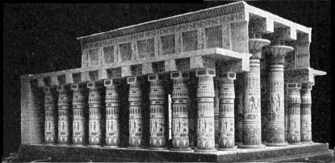
FIG. 12.—CENTRAL PORTION OF HYPOSTYLE HALL AT KARNAK.
(From model in Metropolitan Museum, New York.)
In front of it was the great court, flanked by columns, and still showing the ruins of a central avenue of colossal pillars begun, but never completed, by the Bubastid kings of the XXIId dynasty. One or two smaller structures and the curious lateral wing built by Amenophis III., interrupt the otherwise orderly and symmetrical advance of this plan from the sanctuary to the huge first pylon (last in point of date) erected by the Ptolemies.
The smaller temple of Khonsu, south of that of Amen-Ra, has already been alluded to as a typical example of templar design. Next to Karnak in importance comes the Temple of Luxor in its immediate neighborhood. It has two forecourts adorned with double-aisled colonnades and 21 connected by what seems to be an unfinished hypostyle hall. The Ramesseum and the temples of Medinet Abou and Deir-El-Bahari have already been mentioned (p. 15). At Gournah and Abydos are the next most celebrated temples of this period; the first famous for its rich clustered lotus-columns, the latter for its beautiful sanctuary chambers, dedicated each to a different deity, and covered with delicate painted reliefs of the time of Seti I.
FIG. 13.—GREAT TEMPLE OF IPSAMBOUL.
GROTTO TEMPLES. Two other styles of temple remain to be noticed. The first is the subterranean or grotto temple, of which the two most famous, at Ipsamboul (Abou-simbel), were excavated by Rameses II. They are truly colossal conceptions, reproducing in the native rock the main features of structural temples, the court being represented by the larger of two chambers in the Greater Temple (Fig. 13) 22 Their façades are adorned with colossal seated figures of the builder; the smaller has also two effigies of Nefert-Ari, his consort. Nothing more striking and boldly impressive is to be met with in Egypt than these singular rock-cut façades. Other rock-cut temples of more modest dimensions are at Addeh, Feraig, Beni-Hassan (the “Speos Artemidos”), Beit-el-Wali, and Silsileh. At Gherf-Hossein, Asseboua, and Derri are temples partly excavated and partly structural.
PERIPTERAL TEMPLES. The last type of temple to be noticed is represented by only three or four structures of moderate size; it is the peripteral, in which a small chamber is surrounded by columns, usually mounted on a terrace with vertical walls. They were mere chapels, but are among the most graceful of existing ruins. At Philæ are two structures, one by Nectanebo, the other Ptolemaic, resembling peripteral temples, but without cella-chambers or roofs. They may have been waiting-courts for the adjoining temples. That at Elephantine (Amenophis III.) has square piers at the sides, and columns only at the ends. Another by Thothmes II., at Medinet Abou, formed only a part (the sekos?) of a larger plan. At Edfou is another, belonging to the Ptolemaic period.
LATER TEMPLES. After the architectural inaction of the Decadence came a marvellous recrudescence of splendor under the Ptolemies, whose Hellenic origin and sympathies did not lead them into the mistaken effort to impose Greek models upon Egyptian art. The temples erected under their dominion, and later under Roman rule, vied with the grandest works of the Ramessidæ, and surpassed them in the rich elaboration and variety of their architectural details. The temple at Edfou (Figs. 9, 10, 14) is the most perfectly preserved, and conforms most closely to the typical plan; that of Isis, at Philæ, is the most elaborate and ornate. Denderah also possesses a group of admirably 23 preserved temples of the same period. At Esneh, and at Kalabshé and Kardassy or Ghertashi in Nubia are others. In all these one notes innovations of detail and a striving for effect quite different from the simpler majesty of the preceding age (Fig. 14). One peculiar feature is the use of screen walls built into the front rows of columns of the hypostyle hall. Light was admitted above these walls, which measured about half the height of the columns and were interrupted at the centre by a curious doorway cut through their whole height and without any lintel. Long disused types of capital were revived and others greatly elaborated; and the wall-reliefs were arranged in bands and panels with a regularity and symmetry rather Greek than Egyptian.
FIG. 14.—EDFOU. FRONT OF HYPOSTYLE HALL.
ARCHITECTURAL DETAILS. With the exception of a few purely utilitarian vaulted structures, all Egyptian architecture was based on the principle of the lintel. Artistic splendor depended upon the use of painted and carved pictures, and the decorative treatment of the very simple supports 24 employed. Piers and columns sustained the roofs of such chambers as were too wide for single lintels, and produced, in halls like those of Karnak, of the Ramesseum, or of Denderah, a stupendous effect by their height, massiveness, number, and colored decoration. The simplest piers were plain square shafts; others, more elaborate, had lotus stalks and flowers or heads of Hathor carved upon them. The most striking were those against whose front faces were carved colossal figures of Osiris, as at Luxor, Medmet Abou, and Karnak (Fig. 15). The columns, which were seldom over six diameters in height, were treated with greater variety; the shafts, slightly tapering upward, were either round or clustered in section, and usually contracted at the base. The capitals with which they were crowned were usually of one of the five chief types described below. Besides round and clustered shafts, the Middle Empire and a few of the earlier monuments of the New Empire employed polygonal or slightly fluted shafts (see p. 11), as at Beni Hassan and Karnak; these had a plain square abacus, with sometimes a cushion-like echinus beneath it. A round plinth served as a base for most of the columns.
FIG. 15.—OSIRID PIER (MEDINET ABOU).
CAPITALS. The five chief types of capital were: a, the plain lotus bud, as at Karnak (Great Hall); b, the clustered lotus bud (Beni-Hassan, Karnak, Luxor, Gournah, etc.); c, the campaniform or inverted bell (central aisles at Karnak, Luxor, the Ramesseum); d, the palm-capital, frequent in the later temples; and e, the Hathor-headed, in which heads of Hathor adorn the four faces of a cubical mass surmounted by a model of a shrine (Sedinga, Edfou, Denderah, 25 Esneh). These types were richly embellished and varied by the Ptolemaic architects, who gave a clustered or quatrefoil plan to the bell-capital, or adorned its surface with palm leaves. A few other forms are met with as exceptions. The first four are shown in Fig. 16.
Every part of the column was richly decorated in color. Lotus-leaves or petals swathed the swelling lower part of the shaft, which was elsewhere covered with successive bands of carved pictures and of hieroglyphics. The capital was similarly covered with carved and painted ornament, usually of lotus-flowers or leaves, or alternate stalks of lotus and papyrus.
FIG. 16.—TYPES OF COLUMN.
a, Campaniform; b, Clustered Lotus-Column;
c, Simple Lotus-Column; d, Palm-Column.
The lintels were plain and square in section, and often of prodigious size. Where they appeared externally they were crowned with a simple cavetto cornice, its curved surface covered with colored flutings alternating with cartouches of hieroglyphics. Sometimes, especially on the screen walls of the Ptolemaic age, this was surmounted by a cresting of adders or uræi in closely serried rank. No other form of cornice or cresting is met with. Mouldings as a means of architectural effect were singularly lacking in Egyptian architecture. The only moulding known is the clustered torus (torus = a convex moulding of semicircular profile), which resembles a bundle of reeds tied together with cords or ribbons. It forms an astragal under the cavetto cornice and runs down the angles of the pylons and walls.
FIG. 17.—EGYPTIAN FLORAL
ORNAMENT-FORMS.
POLYCHROMY AND ORNAMENT. Color was absolutely 26 essential to the decorative scheme. In the vast and dim interiors, as well as in the blinding glare of the sun, mere sculpture or relief would have been wasted. The application of brilliant color to pictorial forms cut in low relief, or outlined by deep incision with the edges of the figures delicately rounded (intaglio rilievo) was the most appropriate treatment possible. The walls and columns were covered with pictures treated in this way, and the ceilings and lintels were embellished with symbolic forms in the same manner. All the ornaments, as distinguished from the paintings, were symbolical, at least in their origin. Over the gateway was the solar disk or globe with wide-spread wings, the symbol of the sun winging its way to the conquest of night; upon the ceiling were sacred vultures, zodiacs, or stars spangled on a blue ground. Externally the temples presented only masses of unbroken wall; but these, as well as the pylons, were covered with huge pictures of a historical character. Only in the tombs do we find painted ornament of a purely conventional sort (Fig. 17). Rosettes, diaper patterns, spirals, and checkers are to be met with in them; but many of these can be traced to symbolic origins.3
DOMESTIC ARCHITECTURE. The only remains of palaces are the pavilion of Rameses III. at Medinet Abou, and another at Semneh. The Royal Labyrinth has so completely perished that even its site is uncertain. The Egyptians lived so much out of doors that the house was a less important edifice than in colder climates. Egyptian dwellings were probably in most cases built of wood or crude 27 brick, and their disappearance is thus easily explained. Relief pictures on the monuments indicate the use of wooden framing for the walls, which were probably filled in with crude brick or panels of wood. The architecture was extremely simple. Gateways like those of the temples on a smaller scale, the cavetto cornice on the walls, and here and there a porch with carved columns of wood or stone, were the only details pretending to elegance. The ground-plans of many houses in ruined cities, as at Tel-el-Amarna and a nameless city of Amenophis IV., are discernible in the ruins; but the superstructures are wholly wanting. It was in religious and sepulchral architecture that the constructive and artistic genius of the Egyptians was most fully manifested.
MONUMENTS: The principal necropolis regions of Egypt are centred about Ghizeh and ancient Memphis for the Old Empire (pyramids and mastabas), Thebes for the Middle Empire (Silsileh, Beni Hassan), and Thebes (Vale of the Kings, Vale of the Queens) and Abydos for the New Empire.
The Old Empire has also left us the Sphinx, Sphinx temple, and the temple at Meidoum.
The most important temples of the New Empire were those of Karnak (the great temple, the southern or temple of Khonsu), of Luxor, Medinet Abou (great temple of Rameses III., lesser temples of Thothmes II. and III. with peripteral sekos; also Pavilion of Rameses III.); of Abydos; of Gournah; of Eilithyia (Amenophis III.); of Soleb and Sesebi in Nubia; of Elephantine (peripteral); the tomb temple of Deir-el-Bahari, the Ramesseum, the Amenopheum; hemispeos at Gherf Hossein; two grotto temples at Ipsamboul.
At Meroë are pyramids of the Ethiopic kings of the Decadence.
Temples of the Ptolemaic period: Philæ, Denderah.
Temples of the Roman period: Koum Ombos, Edfou; Kalabshé, Kardassy and Dandour in Nubia; Esneh.
3. See Goodyear’s Grammar of the Lotus for an elaborate and ingenious presentation of the theory of a common lotus-origin for all the conventional forms occurring in Egyptian ornament.
28CHAPTER IV.
CHALDÆAN AND ASSYRIAN ARCHITECTURE.
Books Recommended: As before, Reber. Also, Babelon, Manual of Oriental Antiquities. Botta and Flandin, Monuments de Ninive. Layard, Discoveries in Nineveh; Nineveh and its Remains. Loftus, Travels and Researches in Chaldæa and Susiana. Perrot and Chipiez, History of Art in Chaldæa and Assyria. Peters, Nippur. Place, Ninive et l’Assyrie.
SITUATION; HISTORIC PERIODS. The Tigro-Euphrates valley was the seat of a civilization nearly or quite as old as that of the Nile, though inferior in its monumental art. The kingdoms of Chaldæa and Assyria which ruled in this valley, sometimes as rivals and sometimes as subjects one of the other, differed considerably in character and culture. But the scarcity of timber and the lack of good building-stone except in the limestone table-lands and more distant mountains of upper Mesopotamia, the abundance of clay, and the flatness of the country, imposed upon the builders of both nations similar restrictions of conception, form, and material. Both peoples, moreover, were probably, in part at least, of Semitic race.4 The Chaldæans attained civilization as early as 4000 B.C., and had for centuries maintained fixed institutions and practised the arts and sciences when the Assyrians began their career as a nation of conquerors by reducing Chaldæa to subjection.
29The history of Chaldæo-Assyrian art may be divided into three main periods, as follows:
1. The Early Chaldæan, 4000 to 1250 B.C.
2. The Assyrian, 1250 to 606 B.C.
3. The Babylonian, 606 to 538 B.C.
In 538 the empire fell before the Persians.
GENERAL CHARACTER OF MONUMENTS. Recent excavations at Nippur (Niffer), the sacred city of Chaldæa, have uncovered ruins older than the Pyramids. Though of slight importance architecturally, they reveal the early knowledge of the arch and the possession of an advanced culture. The poverty of the building materials of this region afforded only the most limited resources for architectural effect. Owing to the flatness of the country and the impracticability of building lofty structures with sun-dried bricks, elevation above the plain could be secured only by erecting buildings of moderate height upon enormous mounds or terraces, built of crude brick and faced with hard brick or stone. This led to the development of the stepped pyramid as the typical form of Chaldæo-Assyrian architecture. Thick walls were necessary both for stability and for protection from the burning heat of that climate. The lack of stone for columns and the difficulty of procuring heavy beams for long spans made broad halls and chambers impossible. The plans of Assyrian palaces look like assemblages of long corridors and small cells (Fig. 18). Neither the wooden post nor the column played any part in this architecture except for window-mullions and subordinate members.5 It is probable that the vault was used for roofing many of the halls; the arch was certainly employed for doors and the barrel-vault for the drainage-tunnels 30 under the terraces, made necessary by the heavy rainfall. What these structures lacked in durability and height was made up in decorative magnificence. The interior walls were wainscoted to a height of eight or nine feet with alabaster slabs covered with those low-relief pictures of hunting scenes, battles, and gods, which now enrich the museums of London, Paris, and other modern cities. Elsewhere painted plaster or more durable enamelled tile in brilliant colors embellished the walls, and, doubtless, rugs and tapestries added their richness to this architectural splendor.
FIG. 18.—PALACE OF SARGON AT KHORSABAD.
CHALDÆAN ARCHITECTURE. The ruins at Mugheir (the Biblical Ur), dating, perhaps, from 2200 B.C., belong to the two-storied terrace or platform of a temple to Sin or Hurki. 31 The wall of sun-dried brick is faced with enamelled tile. The shrine, which was probably small, has wholly disappeared from the summit of the mound. At Warka (the ancient Erech) are two terrace-walls of palaces, one of which is ornamented with convex flutings and with a species of mosaic in checker patterns and zigzags, formed by terra-cotta cones or spikes driven into the clay, their exposed bases being enamelled in the desired colors. The other shows a system of long, narrow panels, in a style suggesting the influence of Egyptian models through some as yet unknown channel. This panelling became a common feature of the later Assyrian art (see Fig. 19). At Birs-Nimroud are the ruins of a stepped pyramid surmounted by a small shrine. Its seven stages are said to have been originally faced with glazed tile of the seven planetary colors, gold, silver, yellow, red, blue, white, and black. The ruins at Nippur, which comprise temples, altars, and dwellings dating from 4000 B.C., have been alluded to. Babylon, the later capital of Chaldæa, to which the shapeless mounds of Mujehbeh and Kasr seem to have belonged, has left no other recognizable vestige of its ancient magnificence.
ASSYRIAN ARCHITECTURE. Abundant ruins exist of Nineveh, the Assyrian capital, and its adjacent palace-sites. Excavations at Koyunjik, Khorsabad, and Nimroud have laid bare a number of these royal dwellings. Among them are the palace of Assur-nazir-pal (885 B.C.) and two palaces of Shalmaneser II. (850 B.C.) at Nimroud; the great palace of Sargon at Khorsabad (721 B.C.); that of Sennacherib at Koyunjik (704 B.C.); of Esarhaddon at Nimroud (650 B.C.); and of Assur-bani-pal at Koyunjik (660 B.C.). All of these palaces are designed on the same general principle, best shown by the plan (Fig. 18) of the palace of Sargon at Khorsabad, excavated by Botta and Place.
In this palace two large and several smaller courts are surrounded by a complex series of long, narrow halls and 32 small, square chambers. One court probably belonged to the harem, another to the king’s apartments, others to dependents and to the service of the palace. The crude brick walls are immensely thick and without windows, the only openings being for doors. The absence of columns made wide halls impossible, and great size could only be attained in the direction of length. A terraced pyramid supported an altar or shrine to the southwest of the palace; at the west corner was a temple, the substructure of which was crowned by a cavetto cornice showing plainly the influence of Egyptian models. The whole palace stood upon a stupendous platform faced with cut stone, an unaccustomed extravagance in Assyria.
ARCHITECTURAL DETAILS. There is no evidence that the Assyrians ever used columnar supports except in minor or accessory details. There are few halls in any of the ruins too wide to be spanned by good Syrian cedar beams or palm timbers, and these few cases seem to have had vaulted ceilings. So clumsy a feature as the central wall in the great hall of Esarhaddon’s palace at Nimroud would never have been resorted to for the support of the ceiling, had 33 the Assyrians been familiar with the use of columns. That they understood the arch and vault is proved by their admirable terrace-drains and the fine arched gate in the walls of Khorsabad (Fig. 19), as well as by bas-reliefs representing dwellings with domes of various forms. Moreover, a few vaulted chambers of moderate size, and fallen fragments of crude brick vaulting of larger span, have been found in several of the Assyrian ruins.
The construction was extremely simple. The heavy clay walls were faced with alabaster, burned brick, or enamelled tiles. The roofs were probably covered with stamped earth, and sometimes paved on top with tiles or slabs of alabaster to form terraces. Light was introduced most probably through windows immediately under the roof and divided by small columns forming mullions, as suggested by certain relief pictures. No other system seems consistent with the windowless walls of the ruins. It is possible that many rooms depended wholly on artificial light or on the scant rays coming through open doors. To this day, in the hot season the population of Mosul takes refuge from the torrid heats of summer in windowless basements lighted only by lamps.
ORNAMENT. The only structural decorations seem to have been the panelling of exterior walls in a manner resembling the Chaldæan terrace-walls, and a form of parapet like a stepped cresting. There were no characteristic mouldings, architraves, capitals, or cornices. Nearly all the ornament was of the sort called applied, i.e., added after the completion of the structure itself. Pictures in low relief covered the alabaster revetment. They depicted hunting-scenes, battles, deities, and other mythological subjects, and are interesting to the architect mainly for their occasional representations of buildings and details of construction. Above this wainscot were friezes of enamelled brick ornamented with symbolic forms used as decorative 34 motives; winged bulls, the “sacred tree” and mythological monsters, with rosettes, palmettes, lotus-flowers, and guilloches (ornaments of interlacing bands winding about regularly spaced buttons or eyes). These ornaments were also used on the archivolts around the great arches of palace gates. The most singular adornments of these gates were the carved “portal guardians” set into the deep jambs—colossal monsters with the bodies of bulls, the wings of eagles, and human heads of terrible countenance. Of mighty bulk, they were yet minutely wrought in every detail of head-dress, beard, feathers, curly hair, and anatomy.
The purely conventional ornaments mentioned above—the rosette, guilloche, and lotus-flower, and probably also the palmette, were derived from Egyptian originals. They were treated, however, in a quite new spirit and adapted to the special materials and uses of their environment. Thus the form of the palmette, even if derived, as is not unlikely, from the Egyptian lotus-motive, was assimilated to the more familiar palm-forms of Assyria (Fig. 20).
Assyrian architecture never rivalled the Egyptian in grandeur or constructive power, in seriousness, or the higher artistic qualities. It did, however, produce imposing results with the poorest resources, and in its use of the arch and its development of ornamental forms it furnished prototypes for some of the most characteristic features of later Asiatic art, which profoundly influenced both Greek and Byzantine architecture.
MONUMENTS: The most important Chaldæan and Assyrian monuments of which there are extant remains, have already been enumerated in the text. It is therefore unnecessary to duplicate the list here.
4. This is denied by some recent writers, so far as the Chaldæans are concerned, and is not intended here to apply to the Accadians and Summerians of primitive Chaldæa.
5. See Fergusson, Palaces of Nineveh and Persepolis, for an ingenious but unsubstantiated argument for the use of columns in Assyrian palaces.
CHAPTER V.
PERSIAN, LYCIAN AND JEWISH ARCHITECTURE.
Books Recommended: As before, Babelon; Bliss, Excavations at Jerusalem. Reber. Also Dieulafoy, L’Art antique de la Perse. Fellows, Account of Discoveries in Lycia. Fergusson, The Temple at Jerusalem. Flandin et Coste, Perse ancienne. Perrot and Chipiez, History of Art in Persia; History of Art in Phrygia, Lydia, Caria, and Lycia; History of Art in Sardinia and Judæa. Texier, L’Arménie et la Perse; L’Asie Mineure. De Vogüé, Le Temple de Jérusalem.
PERSIAN ARCHITECTURE. With the Persians, who under Cyrus (536 B.C.) and Cambyses (525 B.C.) became the masters of the Orient, the Aryan race superseded the Semitic, and assimilated in new combinations the forms it borrowed from the Assyrian civilization. Under the Achæmenidæ (536 to 330 B.C.) palaces were built in Persepolis and Susa of a splendor and majesty impossible in Mesopotamia, and rivalling the marvels in the Nile Valley. The conquering nation of warriors who had overthrown the Egyptians and Assyrians was in turn conquered by the arts of its vanquished foes, and speedily became the most luxurious of all nations. The Persians were not great innovators in art; but inhabiting a land of excellent building resources, they were able to combine the Egyptian system of interior columns with details borrowed from Assyrian art, and suggestions, derived most probably from the general use in Persia and Central Asia, of wooden posts or columns as intermediate supports. Out of these elements they evolved an architecture which 36 has only become fully known to us since the excavations of M. and Mme. Dieulafoy at Susa in 1882.
ELEMENTS OF PERSIAN ARCHITECTURE. The Persians used both crude and baked bricks, the latter far more freely than was practicable in Assyria, owing to the greater abundance of fuel. Walls when built of the weaker material were faced with baked brick enamelled in brilliant colors, or both moulded and enamelled, to form colored pictures in relief. Stone was employed for walls and columns, and, in conjunction with brick, for the jambs and lintels of doors and windows. Architraves and ceiling-beams were of wood. The palaces were erected, as in Assyria, upon broad platforms, partly cut in the rock and partly structural, approached by imposing flights of steps. These palaces were composed of detached buildings, propylæa or gates of honor, vast audience-halls open on one or two sides, and chambers or dwellings partly enclosing or flanking these halls, or grouped in separate buildings. Temples appear to have been of small importance, perhaps owing to habits of out-of-door worship of fire and sun. There are few structural tombs, but there are a number of imposing royal sepulchres cut in the rock at Naksh-i-Roustam.
ARCHITECTURAL DETAILS. The Persians, like the Egyptians, used the column as an internal feature in hypostyle halls of great size, and externally to form porches, and perhaps, also, open kiosks without walls. The great Hall of Xerxes at Persepolis covers 100,000 square feet—more than double the area of the Hypostyle Hall at Karnak. But the Persian column was derived from wooden prototypes and used with wooden architraves, permitting a wider spacing than is possible with stone. In the present instance thirty-six columns sufficed for an area which in the Karnak hall contained one hundred and thirty-four. The shafts being slender and finely fluted instead of painted or carved, the effect produced was totally different from that 37 sought by the Egyptians. The most striking peculiarity of the column was the capital, which was forked (Fig. 21). In one of the two principal types the fork, formed by the coupled fore-parts of bulls or symbolic monsters, rested directly on the top of the shaft. In the other, two singular members were interposed between the fork and the shaft; the lower, a sort of double bell or bell-and-palm capital, and above it, just beneath the fork, a curious combination of vertical scrolls or volutes, resembling certain ornaments seen in Assyrian furniture. The transverse architrave rested in the fork; the longitudinal architrave was supported on the heads of the monsters. A rich moulded base, rather high and in some cases adorned with carved leaves or flutings, supported the columns, which in the Hall of Xerxes were over 66 feet high and 6 feet in diameter. The architraves have perished, but the rock-cut tomb of Darius at Naksh-i-Roustam reproduces in its façade a palace-front, showing a banded architrave with dentils—an obvious imitation of the ends of wooden rafters on a lintel built up of several beams.
FIG. 21.—COLUMN FROM PERSEPOLIS.
These features of the architrave, as well as the fine flutings and moulded bases of the columns, are found in Ionic architecture, and in part, at least, in Lycian tombs. As all these examples date from nearly the same period, the origin of these forms and their mutual relations have not been fully determined. The Persian capitals, however, are 38 unique, and so far as known, without direct prototypes or derivatives. Their constituent elements may have been borrowed from various sources. One can hardly help seeing the Egyptian palm-capital in the lower member of the compound type (Fig. 21).
The doors and windows had banded architraves or trims and cavetto cornices very Egyptian in character. The portals were flanked, as in Assyria, by winged monsters; but these were built up in several courses of stone, not carved from single blocks like their prototypes. Plaster or, as at Susa, enamelled bricks, replaced as a wall-finish the Assyrian alabaster wainscot. These bricks, splendid in color, and moulded into relief pictures covering large surfaces, are the oldest examples of the skill of the Persians in a branch of ceramic art in which they have always excelled down to our own day.
LYCIAN ARCHITECTURE. The architecture of those Asiatic peoples which served as intermediaries between the ancient civilizations of Egypt and Assyria on the one hand and of the Greeks on the other, need occupy us only a moment in passing. None of them developed a complete and independent style or produced monuments of the first rank. Those chiefly concerned in the transmission of ideas were the Cypriotes, Phœnicians, and Lycians. The part played by other Asiatic nations is too slight to be considered here. From Cyprus the Greeks could have learned little beyond a few elementary notions regarding sculpture and pottery, although it is possible that the volute-form in Ionic architecture was originally derived from patterns on Cypriote pottery and from certain Cypriote steles, where it appears as a modified lotus motive. The Phœnicians were the world’s traders from a very early age down to the Persian conquest. They not only distributed through the Mediterranean lands the manufactures of Egypt and Assyria, but also counterfeited them and adopted their forms in decorating 39 their own wares. But they have bequeathed us not a single architectural ruin of importance, either of temples or palaces, nor are the few tombs still extant of sufficient artistic interest to deserve even brief mention in a work of this scope.
In Lycia, however, there arose a system of tomb-design which came near creating a new architectural style, and which doubtless influenced both Persia and the Ionian colonies. The tombs were mostly cut in the rock, though a few are free-standing monolithic monuments, resembling sarcophagi or small shrines mounted on a high base or pedestal.
In all of these tombs we recognize a manifest copying in stone of framed wooden structures. The walls are panelled, or imitate open structures framed of squared timbers. The roofs are often gabled, sometimes in the form of a pointed arch; they generally show a banded architrave, dentils, and a raking cornice, or else an imitation of broadly projecting eaves with small round rafters. There are several with porches of Ionic columns; of these, some are of late date and evidently copied from Asiatic Greek models. Others, and notably one at Telmissus, seem to be examples of a primitive Ionic, and may indeed have been early steps in the development of that splendid style which the Ionic Greeks, both in Asia Minor and in Attica, carried to such perfection.
JEWISH ARCHITECTURE. The Hebrews borrowed from the art of every people with whom they had relations, so that we encounter in the few extant remains of their architecture Egyptian, Assyrian, Phœnician, Greek, Roman, and Syro-Byzantine features, but nothing like an independent national style. Among the most interesting of these remains are tombs of various periods, principally occurring in the valleys near Jerusalem, and erroneously ascribed by popular tradition to the judges, prophets, and kings of 40 Israel. Some of them are structural, some cut in the rock; the former (tomb of Absalom, of Zechariah) decorated with Doric and Ionic engaged orders, were once supposed to be primitive types of these orders and of great antiquity. They are now recognized to be debased imitations of late Greek work of the third or second century B.C. They have Egyptian cavetto cornices and pyramidal roofs, like many Asiatic tombs. The openings of the rock-cut tombs have frames or pediments carved with rich surface ornament showing a similar mixture of types—Roman triglyphs and garlands, Syrian-Greek acanthus leaves, conventional foliage of Byzantine character, and naturalistic carvings of grapes and local plant-life. The carved arches of two of the ancient city gates (one the so-called Golden Gate) in Jerusalem display rich acanthus foliage somewhat like that of the tombs, but more vigorous and artistic. If of the time of Herod or even of Constantine, as claimed by some, they would indicate that Greek artists in Syria created the prototypes of Byzantine ornament. They are more probably, however, Byzantine restorations of the 6th century A.D.
The one great achievement of Jewish architecture was the national Temple of Jehovah, represented by three successive edifices on Mount Moriah, the site of the present so-called “Mosque of Omar.” The first, built by Solomon (1012 B.C.) appears from the Biblical description6 to have combined Egyptian conceptions (successive courts, lofty entrance-pylons, the Sanctuary and the sekos or “Holy of Holies”) with Phœnician and Assyrian details and workmanship (cedar woodwork, empaistic decoration or overlaying with repoussé metal work, the isolated brazen columns Jachin and Boaz). The whole stood on a mighty platform built up with stupendous masonry and vaulted chambers from the valley surrounding the rock on three 41 sides. This precinct was nearly doubled in size by Herod (18 B.C.) who extended it southward by a terrace-wall of still more colossal masonry. Some of the stones are twenty-two feet long; one reaches the prodigious length of forty feet. The “Wall of Lamentations” is a part of this terrace, upon which stood the Temple on a raised platform. As rebuilt by Herod, the Temple reproduced in part the antique design, and retained the porch of Solomon along the east side; but the whole was superbly reconstructed in white marble with abundance of gilding. Defended by the Castle of Antonia on the northwest, and embellished with a new and imposing triple colonnade on the south, the whole edifice, a conglomerate of Egyptian, Assyrian, and Roman conceptions and forms, was one of the most singular and yet magnificent creations of ancient art.
The temple of Zerubbabel (515 B.C.), intermediate between those above described, was probably less a re-edification of the first, than a new design. While based on the scheme of the first temple, it appears to have followed more closely the pattern described in the vision of Ezekiel (chapters xl.-xlii.). It was far inferior to its predecessor in splendor and costliness. No vestiges of it remain.
MONUMENTS. Persian: at Murghab, the tomb of Cyrus, known as Gabré-Madré-Soleiman—a gabled structure on a seven-stepped pyramidal basement (525 B.C.). At Persepolis the palace of Darius (521 B.C.); the Propylæa of Xerxes, his palace and his harem (?) or throne-hall (480 B.C.). These splendid structures, several of them of vast size, resplendent with color and majestic with their singular and colossal columns, must have formed one of the most imposing architectural groups in the world. At various points, tower-like tombs, supposed erroneously by Fergusson to have been fire altars. At Naksh-i-Roustam, the tomb of Darius, cut in the rock. Other tombs near by at Persepolis proper and at Pasargadæ. At the latter place remains of the palace of Cyrus. At Susa the palace of Xerxes and Artaxerxes (480–405 B.C.).
There are no remains of private houses or temples.
Lycian: the principal Lycian monuments are found in Myra, Antiphellus, 42 and Telmissus. Some of the monolithic tombs have been removed to the British and other European museums.
Jewish: the temples have been mentioned above. The palace of Solomon. The rock-cut monolithic tomb of Siloam. So-called tombs of Absalom and Zechariah, structural; probably of Herod’s time or later. Rock-cut Tombs of the Kings; of the Prophets, etc. City gates (Herodian or early Christian period).
6. 1 Kings vi.-vii.; 2 Chronicles iii.-iv.
43CHAPTER VI.
GREEK ARCHITECTURE.
Books Recommended: As before, Reber. Also, Anderson and Spiers, Architecture of Greece and Rome. Baumeister, Denkmäler der Klassischen Alterthums. Bötticher, Tektonik der Hellenen. Chipiez, Histoire critique des ordres grecs. Curtius, Adler and Treu, Die Ausgrabungen zu Olympia. Durm, Antike Baukunst (in Handbuch d. Arch.). Frazer, Pausanias’ Description of Greece. Hitorff, L’architecture polychrome chez les Grecs. Michaelis, Der Parthenon. Penrose, An Investigation, etc., of Athenian Architecture. Perrot and Chipiez, History of Art in Primitive Greece; La Grèce de l’Epopée; La Grèce archaïque. Stuart and Revett, Antiquities of Athens. Tarbell, History of Greek Art. Texier, L’Asie Mineure. Wilkins, Antiquities of Magna Græcia.
GENERAL CONSIDERATIONS. Greek art marks the beginning of European civilization. The Hellenic race gathered up influences and suggestions from both Asia and Africa and fused them with others, whose sources are unknown, into an art intensely national and original, which was to influence the arts of many races and nations long centuries after the decay of the Hellenic states. The Greek mind, compared with the Egyptian or Assyrian, was more highly intellectual, more logical, more symmetrical, and above all more inquiring and analytic. Living nowhere remote from the sea, the Greeks became sailors, merchants, and colonizers. The Ionian kinsmen of the European Greeks, speaking a dialect of the same language, populated the coasts of Asia Minor and many of the islands, so that through them the 44 Greeks were open to the influences of the Assyrian, Phœnician, Persian, and Lycian civilizations. In Cyprus they encountered Egyptian influences, and finally, under Psammetichus, they established in Egypt itself the Greek city of Naukratis. They were thus by geographical situation, by character, and by circumstances, peculiarly fitted to receive, develop, and transmit the mingled influences of the East and the South.
PREHISTORIC MONUMENTS.7 Authentic Greek history begins with the
first Olympiad, 776 B.C. The earliest
monuments of that historic architecture which developed into the
masterpieces of the Periclean and Alexandrian ages, date from the middle
of the following century. But there are a number of older buildings,
belonging presumably to the so-called Heroic Age, which, though
seemingly unconnected with the later historic development of Greek
architecture, are still worthy of note. They are the work of a people
somewhat advanced in civilization, probably the Pelasgi, who preceded
the Dorians on Greek soil, and consist mainly of fortifications, walls,
gates, and tombs, the most important of which are at Mycenæ and
Tiryns. At the latter place is a well-defined acropolis, with
massive walls in which are passages covered by stones successively
overhanging or corbelled until they meet. The masonry is of huge stones
piled without cement. At Mycenæ the city wall is pierced by the
remarkable Lion Gate (Fig. 22), consisting of two jambs and a
huge lintel,
45
over which the weight is relieved by a triangular opening. This is
filled with a sculptured group, now much defaced, representing two
rampant lions flanking a singular column which tapers downward. This
symbolic group has relations with Hittite and Phrygian sculptures, and
with the symbolism of the worship of Rhea Cybele. The masonry of the
wall is carefully dressed but not regularly coursed. Other primitive
walls and gates showing openings and embryonic arches of various forms,
are found widely scattered, at Samos and Delos, at Phigaleia, Thoricus,
Argos and many other points.
FIG. 23.—POLYGONAL MASONRY.
The very earliest are hardly more than random piles of rough stone.
Those which may fairly claim notice for their artistic masonry are of a
later date and of two kinds: the coursed, and the polygonal or
Cyclopean, so called from the tradition that they were built by the
Cyclopes. These Cyclopean walls were composed of large, irregular
polygonal blocks carefully fitted together and dressed to a fairly
smooth face (Fig. 23). Both kinds were used contemporaneously, though in
the course of time the regular coursed masonry finally superseded the
polygonal.
FIG. 24.—THOLOS OF ATREUS. PLAN AND SECTION.
THOLOS OF ATREUS. All these structures present, however, only the rudiments of architectural art. The so-called Tholos (or Treasury) of Atreus, at Mycenæ, on the other hand, shows the germs of truly artistic design (Fig. 24). It is in reality a tomb, and is one of a large class of prehistoric tombs found in almost every part of the globe, consisting of a circular stone-walled and stone-roofed chamber buried under a tumulus of earth. This one is a beehive-shaped construction of horizontal courses of masonry, with a stone-walled passage, the dromos, leading to the entrance door. 46 Though internally of domical form, its construction with horizontal beds in the masonry proves that the idea of the true dome with the beds of each course pitched at an angle always normal to the curve of the vault, was not yet grasped. A small sepulchral chamber opens from the great one, by a door with the customary relieving triangle over it.

FIG. 25.—THOLOS OF ATREUS. DOORWAY.
Traces of a metal lining have been found on the inner surface of the dome and on the jambs of the entrance door. This entrance is the most artistic and elaborate part of the edifice (Fig. 25). The main opening is enclosed in a three-banded frame, and was once flanked by columns which, as shown by fragments still existing and by marks on either side the door, tapered downward as in the sculptured column over the Lion Gate. Shafts, bases, and capitals were covered with zig-zag bands or chevrons of fine spirals. This well-studied decoration, the banded jambs, and the curiously inverted columns (of which several other examples exist in or near Mycenæ), all point to a fairly developed art, derived partly from Egyptian and partly from Asiatic sources. That Egyptian influences had affected this early art is further 47 proved by a fragment of carved and painted ornament on a ceiling in Orchomenos, imitating with remarkable closeness certain ceiling decorations in Egyptian tombs.
HISTORIC MONUMENTS; THE ORDERS. It was the Dorians and Ionians who developed the architecture of classic Greece. This fact is perpetuated in the traditional names, Doric and Ionic, given to the two systems of columnar design which formed the most striking feature of that architecture. While in Egypt the column was used almost exclusively as an internal support and decoration, in Greece it was chiefly employed to produce an imposing exterior effect. It was the most important element in the temple architecture of the Greeks, and an almost indispensable adornment of their gateways, public squares, and temple enclosures. To the column the two races named above gave each a special and radically distinct development, and it was not until the Periclean age that the two forms came to be used in conjunction, even by the mixed Doric-Ionic people of Attica. Each of the two types had its own special shaft, capital, entablature, mouldings, and ornaments, although considerable variation was allowed in the proportions and minor details. The general type, however, remained substantially unchanged from first to last. The earliest examples known to us of either order show it complete in all its parts, its later development being restricted to the refining and perfecting of its proportions and details. The probable origin of these orders will be separately considered later on.
A, Crepidoma, or stylobate; b, Column; c, Architrave; d, Tænia; e, Frieze; f, Horizontal cornice; g, Raking cornice; h, Tympanum of pediment; k, Metope.
THE DORIC. The column of the Doric order (Figs. 26, 27) consists of a tapering shaft rising directly from the stylobate or platform and surmounted by a capital of great simplicity and beauty. The shaft is fluted with sixteen to twenty shallow channellings of segmental or elliptical section, meeting in sharp edges or arrises. The capital is made up of a circular cushion or echinus adorned with fine 48 grooves called annulæ, and a plain square abacus or cap Upon this rests a plain architrave or epistyle, with a narrow fillet, the tænia, running along its upper edge. The frieze above it is divided into square panels, called the metopes, separated by vertical triglyphs having each two vertical grooves and chamfered edges. There is a triglyph over each column and one over each intercolumniation, or two in rare instances where the columns are widely spaced. The cornice consists of a broadly projecting corona resting on a bed-mould of one or two simple mouldings. Its under surface, called the soffit, is adorned with mutules, square, flat projections having each eighteen guttæ depending from its under side. Two or three small mouldings run along the upper edge of the corona, which has in addition, over each slope of the gable, a gutter-moulding or cymatium. The cornices along the horizontal edges of the roof have instead of the cymatium a row of antefixæ, ornaments of terra-cotta or marble placed opposite the foot of each tile-ridge of the roofing. The enclosed triangular field of the gable, called the tympanum, was in the larger monuments adorned with sculptured groups resting on the shelf formed by the horizontal cornice below. Carved ornaments called acroteria commonly embellished the three angles of the gable or pediment.
POLYCHROMY. It has been fully proved, after a century of debate, that all this elaborate system of parts, severe 49 and dignified in their simplicity of form, received a rich decoration of color. While the precise shades and tones employed cannot be predicated with certainty, it is well established that the triglyphs were painted blue and the metopes red, and that all the mouldings were decorated with leaf-ornaments, “eggs-and-darts,” and frets, in red, green, blue, and gold. The walls and columns were also colored, probably with pale tints of yellow or buff, to reduce the glare of the fresh marble or the whiteness of the fine stucco with which the surfaces of masonry of coarser stone were primed. In the clear Greek atmosphere and outlined against the brilliant sky, the Greek temple must have presented an aspect of rich, sparkling gayety.
FIG. 27.—DORIC ORDER OF THE PARTHENON.
ORIGIN OF THE ORDER. It is generally believed that the details of the Doric frieze and cornice were reminiscences of a primitive wood construction. The triglyph suggests the chamfered ends of cross-beams made up of three planks each; the mutules, the sheathing of the eaves; and the guttæ, the heads of the spikes or trenails by which the sheathing was secured. It is known that in early astylar temples the metopes were left open like the spaces between the ends of ceiling-rafters. In the earlier peripteral temples, as at Selinus, the triglyph-frieze is retained around the cella-wall under the ceiling of the colonnade, where it has no functional significance, as a survival from times antedating the adoption of the colonnade, when 50 the tradition of a wooden roof-construction showing externally had not yet been forgotten.
A similar wooden origin for the Doric column has been advocated by some, who point to the assertion of Pausanias that in the Doric Heraion at Olympia the original wooden columns had with one exception been replaced by stone columns as fast as they decayed. (See p. 62.) This, however, only proves that wooden columns were sometimes used in early buildings, not that the Doric column was derived from them. Others would derive it from the Egyptian columns of Beni Hassan (p. 12), which it certainly resembles. But they do not explain how the Greeks could have been familiar with the Beni Hassan column long before the opening of Egypt to them under Psammetichus; nor why, granting them some knowledge of Egyptian architecture, they should have passed over the splendors of Karnak and Luxor to copy these inconspicuous tombs perched high up on the cliffs of the Nile. It would seem that the Greeks invented this form independently, developing it in buildings which have perished; unless, indeed, they brought the idea with them from their primitive Aryan home in Asia.
THE IONIC ORDER was characterized by greater slenderness of proportion and elegance of detail than the Doric, and depended more on carving than on color for the decoration of its members (Fig. 28). It was adopted in the fifth century B.C. by the people of Attica, and used both for civic and religious buildings, sometimes alone and sometimes in conjunction with the Doric. The column was from eight to ten diameters in height, against four and one-third to seven for the Doric. It stood on a base which was usually composed of two tori (see p. 25 for definition) separated by a scotia (a concave moulding of semicircular or semi-elliptical profile), and was sometimes provided also with a square flat base-block, the plinth. There was much variety in the proportions and details of these mouldings, which were often 51 enriched by flutings or carved guilloches. The tall shaft bore twenty-four deep narrow flutings separated by narrow fillets. The capital was the most peculiar feature of the order. It consisted of a bead or astragal and echinus, over which was a horizontal band ending on either side in a scroll or volute, the sides of which presented the aspect shown in Fig. 29. A thin moulded abacus was interposed between this member and the architrave.

FIG. 28.—GREEK IONIC ORDER. (MILETUS.)
The Ionic capital was marked by two awkward features which all its richness could not conceal. One was the protrusion of the echinus beyond the face of the band above it, the other was the disparity between the side and front views of the capital, especially noticeable at the corners of a colonnade. To obviate this, various contrivances were tried, none wholly successful. Ordinarily the two adjacent exterior sides of the corner capital were treated alike, the scrolls at their meeting being bent out at an angle of 45°, while the two inner faces simply intersected, cutting each other in halves.
The entablature comprised an architrave of two or three flat bands crowned by fine mouldings; an uninterrupted frieze, frequently sculptured in relief; and a simple cornice of great beauty. In addition to the ordinary bed-mouldings there was in most examples a row of narrow blocks or dentils under the corona, which was itself crowned by a high cymatium of extremely graceful profile, carved with the rich “honeysuckle” (anthemion) ornament. All the mouldings were carved with the “egg-and-dart,” heart-leaf and anthemion ornaments, so designed as to recall by their outline 52 the profile of the moulding itself. The details of this order were treated with much more freedom and variety than those of the Doric. The pediments of Ionic buildings were rarely or never adorned with groups of sculpture. The volutes and echinus of the capital, the fluting of the shaft, the use of a moulded circular base, and in the cornice the high corona and cymatium, these were constant elements in every Ionic order, but all other details varied widely in the different examples.
FIG. 29.—SIDE VIEW OF IONIC CAPITAL.
ORIGIN OF THE IONIC ORDER. The origin of the Ionic order has given rise to almost as much controversy as that of the Doric. Its different elements were apparently derived from various sources. The Lycian tombs may have contributed the denticular cornice and perhaps also the general form of the column and capital. In the Persian architecture of the sixth century B.C., the high moulded base, the narrow flutings of the shaft, the carved bead-moulding and the use of scrolls in the capital are characteristic features, which may have been borrowed by the Ionians during the same century, unless, indeed, they were themselves the work of Ionic or Lycian workmen in Persian employ. The banded architrave and the use of the volute in the decoration of stele-caps (from στηλη = a memorial stone or column standing isolated and upright), furniture, and minor structures are common features in Assyrian, Lycian, and other Asiatic architecture of early date. The volute or scroll itself as an independent decorative 53 motive may have originated in successive variations of Egyptian lotus-patterns.8 But the combination of these diverse elements and their development into the final form of the order was the work of the Ionian Greeks, and it was in the Ionian provinces of Asia Minor that the most splendid examples of its use are to be found (Halicarnassus, Miletus, Priene, Ephesus), while the most graceful and perfect are those of Doric-Ionic Attica.
FIG. 30.—GREEK CORINTHIAN ORDER.
(From the monument of Lysicrates.)
THE CORINTHIAN ORDER. This was a late outgrowth of the Ionic rather than a new order, and up to the time of the Roman conquest was only used for monuments of small size (see Fig. 38). Its entablature in pure Greek examples was identical with the Ionic; the shaft and base were only slightly changed in proportion and detail. The capital, however, was a new departure, based probably on metallic embellishments of altars, pedestals, etc., of Ionic style. It consisted in the best examples of a high bell-shaped core surrounded by one or two rows of acanthus leaves, above which were pairs of branching scrolls meeting at the corners in spiral volutes. These served to support the angles of a moulded abacus with concave sides (Fig. 30). One example, from the Tower of the Winds (the clepsydra of Andronicus Cyrrhestes) at Athens, has only smooth pointed palm-leaves and no scrolls above a single row of acanthus leaves. Indeed, the variety and disparity among the different 54 examples prove that we have here only the first steps toward the evolution of an independent order, which it was reserved for the Romans to fully develop.
GREEK TEMPLES; THE TYPE. With the orders as their chief decorative element the Greeks built up a splendid architecture of religious and secular monuments. Their noblest works were temples, which they designed with the utmost simplicity of general scheme, but carried out with a mastery of proportion and detail which has never been surpassed. Of moderate size in most cases, they were intended primarily to enshrine the simulacrum of the deity, and not, like Christian churches, to accommodate great throngs of worshippers. Nor were they, on the other hand, sanctuaries designed, like those of Egypt, to exclude all but a privileged few from secret rites performed only by the priests and king. The statue of the deity was enshrined in a chamber, the naos (see plan, Fig. 31), often of considerable size, and accessible to the public through a columnar porch the pronaos. A smaller chamber, the opisthodomus, was sometimes added in the rear of the main sanctuary, to serve as a treasury or depository for votive offerings. Together these formed a windowless structure called the cella, beyond which was the rear porch, the posticum or epinaos. This whole structure was in the larger temples surrounded by a colonnade, the peristyle, which formed the most splendid feature of Greek architecture. The external aisle on either side of the cella was called the pteroma. A single gabled roof covered the entire building.
FIG. 31.—TYPES OF GREEK TEMPLE PLANS.
a, In Antis; b, Prostyle; c, Amphiprostyle; d, Peripteral (The Parthenon); N, Naos; O, Opisthodomus; S, Statue.
The Greek colonnade was thus an exterior feature, surrounding 55 the solid cella-wall instead of being enclosed by it as in Egypt. The temple was a public, not a royal monument; and its builders aimed, not as in Egypt at size and overwhelming sombre majesty, but rather at sunny beauty and the highest perfection of proportion, execution, and detail (Fig. 34).
There were of course many variations of the general type just described. Each of these has received a special name, which is given below with explanations and is illustrated in Fig. 31.
In antis; with a porch having two or more columns enclosed between the projecting side-walls of the cella.
Prostylar (or prostyle); with a columnar porch in front and no peristyle.
Amphiprostylar (or -style); with columnar porches at both ends but no peristyle.
Peripteral; surrounded by columns.
Pseudoperipteral; with false or engaged columns built into the walls of the cella, leaving no pteroma.
Dipteral; with double lateral ranges of columns (see Fig. 39).
Pseudodipteral; with a single row of columns on each side, whose distance from the wall is equal to two intercolumniations of the front.
Tetrastyle, hexastyle, octastyle, decastyle, etc.; with four, six, eight, or ten columns in the end rows.
CONSTRUCTION. All the temples known to us are of stone, though it is evident from allusions in the ancient writers that wood was sometimes used in early times. (See p. 62.) The finest temples, especially those of Attica, Olympia, and Asia Minor, were of marble. In Magna Græcia, at Assos, and in other places where marble was wanting, limestone, sandstone, or lava was employed and finished with a thin, fine stucco. The roof was almost invariably of wood and gabled, forming at the ends pediments decorated in most cases with sculpture. The disappearance of these inflammable 56 and perishable roofs has given rise to endless speculations as to the lighting of the cellas, which in all known ruins, except one at Agrigentum, are destitute of windows. It has been conjectured that light was admitted through openings in the roof, and even that the central part of the cella was wholly open to the sky. Such an arrangement is termed hypæthral, from an expression used in a description by Vitruvius;9 but this description corresponds to no known structure, and the weight of opinion now inclines against the use of the hypæthral opening, except possibly in one or two of the largest temples, in which a part of the cella in front of the statue may have been thus left open. But even this partial hypæthros is not substantiated by direct evidence. It hardly seems probable that the magnificent chryselephantine statues of such temples were ever thus left exposed to the extremes of the climate, which are often severe even in Greece. In the model of the Parthenon designed by Ch. Chipiez for the Metropolitan Museum in New York, a small clerestory opening through the roof admits a moderate amount of light to the cella; but this ingenious device rests on no positive evidence (see Frontispiece). It seems on the whole most probable that the cella was lighted entirely by artificial illumination; but the controversy in its present state is and must be wholly speculative.
The wooden roof was covered with tiles of terra-cotta or marble. It was probably ceiled and panelled on the under side, and richly decorated with color and gold. The pteroma had under the exterior roof a ceiling of stone or marble, deeply panelled between transverse architraves.
The naos and opisthodomus being in the larger temples too wide to be spanned by single beams, were furnished with interior columns to afford intermediate support. To avoid the extremes of too great massiveness and excessive slenderness in these columns, they were built in two stages, 57 and advantage was taken of this arrangement, in some cases, at least, to introduce lateral galleries into the naos.
FIG. 32.—CARVED ANTHEMION ORNAMENT. ATHENS.
SCULPTURE AND CARVING. All the architectural membering was treated with the greatest refinement of design and execution, and the aid of sculpture, both in relief and in the round, was invoked to give splendor and significance to the monument. The statue of the deity was the focus of internal interest, while externally, groups of statues representing the Olympian deities or the mythical exploits of gods, demigods, and heroes, adorned the gables. Relief carvings in the friezes and metopes commemorated the favorite national myths. In these sculptures we have the finest known adaptations of pure sculpture—i.e., sculpture treated as such and complete in itself—to an architectural framework. The noblest examples of this decorative sculpture are those of the Parthenon, consisting of figures in the full round from the pediments, groups in high relief from the metopes, and the beautiful frieze of the Panathenaic procession from the cella-wall under the pteroma ceiling. The greater part of these splendid works are now in the British Museum, whither they were removed by Lord Elgin in 1801. From Olympia, Ægina, and 58 Phigaleia, other master-works of the same kind have been transferred to the museums of Europe. In the Doric style there was little carving other than the sculpture, the ornament being mainly polychromatic. Greek Ionic and Corinthian monuments, however, as well as minor works such as steles, altars, etc., were richly adorned with carved mouldings and friezes, festoons, acroteria, and other embellishments executed with the chisel. The anthemion ornament, a form related to the Egyptian lotus and Assyrian palmette, most frequently figures in these. It was made into designs of wonderful vigor and beauty (Fig. 32).
DETAIL AND EXECUTION. In the handling and cutting of stone the Greeks displayed a surpassing skill and delicacy. While ordinarily they were content to use stones of moderate size, they never hesitated at any dimension necessary for proper effect or solid construction. The lower drums of the Parthenon peristyle are 6 feet 6½ inches in diameter, and 2 feet 10 inches high, cut from single blocks of Pentelic marble. The architraves of the Propylæa at Athens are each made up of two lintels placed side by side, the longest 17 feet 7 inches long, 3 feet 10 inches high, and 2 feet 4 inches thick. In the colossal temples of Asia Minor, where the taste for the vast and grandiose was more pronounced, blocks of much greater size were used. These enormous stones were cut and fitted with the most scrupulous exactness. The walls of all important structures were built in regular courses throughout, every stone carefully bedded with extremely close joints. The masonry was usually laid up without cement and clamped with metal; there is no filling in with rubble and concrete between mere facings of cut stone, as in most modern work. When the only available stone was of coarse texture it was finished with a coating of fine stucco, in which sharp edges and minute detail could be worked.
The details were, in the best period, executed with the 59 most extraordinary refinement and care. The profiles of capitals and mouldings, the carved ornament, the arrises of the flutings, were cut with marvellous precision and delicacy. It has been rightly said that the Greeks “built like Titans and finished like jewellers.” But this perfect finish was never petty nor wasted on unworthy or vulgar design. The just relation of scale between the building and all its parts was admirably maintained; the ornament was distributed with rare judgment, and the vigor of its design saved it from all appearance of triviality.
The sensitive taste of the Greeks led them into other refinements than those of mere mechanical perfection. In the Parthenon especially, but also in lesser degree in other temples, the seemingly straight lines of the building were all slightly curved, and the vertical faces inclined. This was done to correct the monotony and stiffness of absolutely straight lines and right angles, and certain optical illusions which their acute observation had detected. The long horizontal lines of the stylobate and cornice were made convex upward; a similar convexity in the horizontal corona of the pediment counteracted the seeming concavity otherwise resulting from its meeting with the multiplied inclined lines of the raking cornice. The columns were almost imperceptibly inclined toward the cella, and the corner intercolumniations made a trifle narrower than the rest; while the vertical lines of the arrises of the flutings were made convex outward with a curve of the utmost beauty and delicacy. By these and other like refinements there was imparted to the monument an elasticity and vigor of aspect, an elusive and surprising beauty impossible to describe and not to be explained by the mere composition and general proportions, yet manifest to every cultivated eye.10
7. For enlargement on this topic see Appendix A.
8. As contended by W. H. Goodyear in his Grammar of the Lotus.
9. Lib. III., Cap. I.
10. These refinements, first noticed by Allason in 1814, and later confirmed by Cockerell and Haller as to the columns, were published to the world in 1838 by Hoffer, verified by Penrose in 1846, and further developed by the investigations of Ziller and later observers.
CHAPTER VII.
GREEK ARCHITECTURE—Continued.
Books Recommended: Same as for Chapter VI. Also, Bacon and Clarke, Investigations at Assos. Espouy, Fragments d’architecture antique. Harrison and Verrall, Mythology and Monuments of Ancient Athens. Hitorff et Zanth, Recueil des Monuments de Ségeste et Sélinonte. Magne, Le Parthénon. Koldewey and Puchstein, Die griechischen Tempel in Unteritalien und Sicilien. Waldstein, The Argive Heræum.
HISTORIC DEVELOPMENT. The history of Greek architecture, subsequent to the Heroic or Primitive Age, may be divided into periods as follows:
The Archaic; from 650 to 500 B.C.
The Transitional; from 500 to 460 B.C., or to the revival of prosperity after the Persian wars.
The Periclean; from 460 to 400 B.C.
The Florid or Alexandrian; from 400 to 300 B.C.
The Decadent; 300 to 100 B.C.
The Roman; 100 B.C. to 200 A.D.
These dates are, of course, somewhat arbitrary; it is impossible to set exact bounds to style-periods, which must inevitably overlap at certain points, but the dates, as given above, will assist in distinguishing the successive phases of the history.
ARCHAIC PERIOD. The archaic period is characterized by the exclusive use of the Doric order, which appears in the earliest monuments complete in all its parts, but heavy in its proportions and coarse in its execution. The oldest known temples of this period are the Apollo Temple at Corinth (650 B.C.?), and the Northern Temple on the acropolis at Selinus in Sicily (cir. 610–590 B.C.). They are both of a coarse limestone covered with stucco. The columns are low and massive (4⅓ to 4⅔ diameters in height), widely spaced, and 61 carry a very high entablature. The triglyphs still appear around the cella wall under the pteroma ceiling, an illogical detail destined to disappear in later buildings. Other temples at Selinus date from the middle or latter part of the sixth century; they have higher columns and finer profiles than those just mentioned. The great Temple of Zeus at Selinus was the earliest of five colossal Greek temples of very nearly identical dimensions; it measured 360 feet by 167 feet in plan, but was never completed. During the second half of the sixth century important Doric temples were built at Pæstum in South Italy, and Agrigentum in Sicily; the somewhat primitive temple at Assos in Asia Minor, with uncouth carvings of centaurs and monsters on its architrave, belongs to this same period. The Temple of Zeus at Agrigentum (Fig. 33) is another singular and exceptional design, and was the second of the five colossal temples mentioned above. The pteroma was entirely enclosed by walls with engaged columns showing externally, and was of extraordinary width. The walls of the narrow cella were interrupted by heavy piers supporting atlantes, or applied statues under the ceiling. There seem to have been windows between these figures, but it is not clear whence they borrowed their light, unless it was admitted by the omission of the metopes between the external triglyphs.
FIG. 33.—TEMPLE OF ZEUS. AGRIGENTUM.
THE TRANSITION. During the transitional period there was a marked improvement in the proportions, detail, and workmanship of the temples. The cella was made broader, the columns more slender, the entablature lighter. The triglyphs disappeared from the cella wall, and sculpture of a higher order enhanced the architectural effect. The profiles 62 of the mouldings and especially of the capitals became more subtle and refined in their curves, while the development of the Ionic order in important monuments in Asia Minor was preparing the way for the splendors of the Periclean age. Three temples especially deserve notice: the Athena Temple on the island of Ægina, the Temple of Zeus at Olympia, and the so-called Theseum—perhaps a temple of Heracles—in Athens. They belong to the period 470–450 B.C.; they are all hexastyle and peripteral, and without triglyphs on the cella wall. Of the three the second in the list is interesting as the scene of those rites which preceded and accompanied the Panhellenic Olympian games, and as the central feature of the Altis, the most complete temple-group and enclosure among all Greek remains. It was built of a coarse conglomerate, finished with fine stucco, and embellished with sculpture by the greatest masters of the time. The adjacent Heraion (temple of Hera) was a highly venerated and ancient shrine, originally built with wooden columns which, according to Pausanias, were replaced one by one, as they decayed, by stone columns. The truth of this statement is attested by the discovery of a singular variety of capitals among its ruins, corresponding to the various periods at which they were added. The Theseum is the most perfectly preserved of all Greek temples, and in the refinement of its forms is only surpassed by those of the Periclean age.
FIG. 34.—RUINS OF THE PARTHENON.
THE PERICLEAN AGE. The Persian wars may be taken as the
dividing line between the Transition period and the Periclean age. The
élan of national enthusiasm that followed the expulsion of the
invader, and the glory and wealth which accrued to Athens as the
champion of all Hellas, resulted in a splendid reconstruction of the
Attic monuments as well as a revival of building activity in Asia Minor.
By the wise administration of Pericles and by the genius of Ictinus,
Phidias, and other artists of surpassing
63
skill, the Acropolis at Athens was crowned with a group of buildings and
statues absolutely unrivalled. Chief among them was the
Parthenon, the shrine of Athena Parthenos, which the critics of
all schools have agreed in considering the most faultless in design and
execution of all buildings erected by man (Figs. 31, 34, and Frontispiece). It was an octastyle peripteral
temple, with seventeen columns on the side, and measured 220 by 100 feet
on the top of the stylobate. It was the work of Ictinus and Callicrates,
built to enshrine the noble statue of the goddess by Phidias,
a standing chryselephantine figure forty feet high. It was the
masterpiece of Greek architecture not only by reason of its refinements
of detail, but also on account of the beauty of its sculptural
adornments. The frieze about the cella wall under the pteroma ceiling,
representing in low relief
64
with masterly skill the Panathenaic procession; the sculptured groups in
the metopes, and the superb assemblages of Olympic and symbolic figures
of colossal size in the pediments, added their majesty to the perfection
of the architecture.
FIG. 35.—PLAN OF ERECHTHEUM.
FIG. 36.—WEST END OF ERECHTHEUM,
RESTORED.
Here also the horizontal curvatures and other refinements are found in
their highest development. Northward from it, upon the Acropolis, stood
the Erechtheum, an excellent example of the Attic-Ionic style
(Figs. 35, 36). Its singular irregularities of plan and level, and the
variety of its detail, exhibit in a striking way the Greek indifference
to mere formal symmetry when confronted by practical considerations. The
motive in this case was the desire to include in one design several
existing and venerated shrines to Attic deities and heroes—Athena
Polias, Poseidon, Pandrosus, Erechtheus, Boutes, etc. Begun by unknown
architects in 479 B.C., and not
completed until 408 B.C., it remains
in its ruin still one of the most interesting and attractive of ancient
buildings. Its two colonnades of differing design, its beautiful north
doorway, and the unique and noble caryatid porch or balcony on the south
side are unsurpassed in delicate beauty combined with vigor of design.11
A smaller monument of the Ionic order, the amphiprostyle temple to
Nike Apteros—the
65
Wingless Victory—stands on a projecting spur of the Acropolis to
the southwest. It measures only 27 feet by 18 feet in plan; the cella is
nearly square; the columns are sturdier than those of the Erechtheum,
and the execution of the monument is admirable. It was the first
completed of the extant buildings of the group of the Acropolis and
dates from 466 B.C.
FIG. 37.—PROPYLÆA AT ATHENS. PLAN.
In the Propylæa (Fig. 37), the monumental gateway to the Acropolis, the Doric and Ionic orders appear to have been combined for the first time (437 to 432 B.C.). It was the master work of Mnesicles. The front and rear façades were Doric hexastyles; adjoining the front porch were two projecting lateral wings employing a smaller Doric order. The central passageway led between two rows of Ionic columns to the rear porch, entered by five doorways and crowned, like the front, with a pediment. The whole was executed with the same splendor and perfection as the other buildings of the Acropolis, and was a worthy gateway to the group of noble monuments which crowned that citadel of the Attic capital. The two orders were also combined in the temple of Apollo Epicurius at Phigalæa (Bassæ). This temple was erected in 430 B.C. by Ictinus, who used the Ionic order internally to decorate a row of projecting piers instead of free-standing columns in the naos, in which there was also a single Corinthian column of rather archaic design, which may have been used as a support for a statue or votive offering.
66ALEXANDRIAN AGE. A period of reaction followed the splendid
architectural activity of the Periclean age. A succession of
disastrous wars—the Sicilian, Peloponnesian, and
Corinthian—drained the energies and destroyed the peace of
European Greece for seventy-five years, robbing Athens of her supremacy
and inflicting wounds from which she never recovered. In the latter part
of the fourth century, however, the triumph of the Macedonian empire
over all the Mediterranean lands inaugurated a new era of architectural
magnificence, especially in Asia Minor. The keynote of the art of this
time was splendor, as that of the preceding age was artistic perfection.
The Corinthian order came into use, as though the Ionic were not rich
enough for the sumptuous taste of the time, and capitals and bases of
novel and elaborate design embellished the Ionic temples of Asia Minor.
In the temple of Apollo Didymæus at Miletus, the plinths of the
bases were made octagonal and panelled with rich scroll-carvings; and
the piers which buttressed the interior faces of the cella-walls were
given capitals of singular but elegant form, midway between the Ionic
and Corinthian types. This temple belongs to the list of colossal
edifices already referred to; its dimensions were 366 by 163 feet,
making it the largest of them all. The famous Artemisium (temple
of Artemis or Diana) measured 342 by 163 feet. Several of the columns of
the latter were enriched with sculptured figures encircling the lower
drums of the colossal shafts.
FIG. 38.—CHORAGIC
MONUMENT OF LYSICRATES.
(Restored model, N.Y.)
The most lavish expenditure was bestowed upon small structures, shrines,
and sarcophagi. The graceful monument still visible in Athens, erected
by the choragus Lysicrates in token of his victory in the
choral competitions, belongs to this period (330 B.C.). It is circular,
with a slightly domical imbricated roof, and is decorated with elegant
engaged Corinthian columns (Fig. 38). In the Imperial Museum at
Constantinople are several sarcophagi of this period found at Sidon, but
67
executed by Greek artists, and of exceptional beauty. They are in the
form of temples or shrines; the finest of them, supposed by some to have
been made for Alexander’s favorite general Perdiccas, and by others for
the Persian satrap who figures prominently on its sculptured reliefs, is
the most sumptuous work of the kind in existence. The exquisite
polychromy of its beautiful reliefs and the perfection of its rich
details of cornice, pediment, tiling, and crestings, make it an
exceedingly interesting and instructive example of the minor
architecture of the period.
THE DECADENCE. After the decline of Alexandrian magnificence Greek art never recovered its ancient glory, but the flame was not suddenly extinguished. While in Greece proper the works of the second and third centuries B.C., are for the most part weak and lifeless, like the Stoa of Attalus (175 B.C.) and the Tower of the Winds (the Clepsydra of Andronicus Cyrrhestes, 100 B.C.) at Athens or the Portico of Philip in Delos, there were still a few worthy works built in Asia Minor. The splendid Altar erected at Pergamon by Eumenes II. (circ. 180 B.C.) in the Ionic order, combined sculpture of extraordinary vigor with imposing architecture in masterly fashion. At Aizanoi an Ionic Temple to Zeus, by some attributed to the Roman period, but showing rather the character of good late Greek work, deserves mention for its elegant details, and especially for its frieze-decoration of acanthus leaves and scrolls resembling those of a Corinthian capital.
68
FIG. 39.—TEMPLE OF OLYMPIAN ZEUS. ATHENS.
Larger View
ROMAN PERIOD. During this period, i.e., throughout the second and first centuries B.C., the Roman dominion was spreading over Greek territory, and the structures erected subsequent to the conquest partake of the Roman character and mingle Roman conceptions with Greek details and vice versâ. The temple of the Olympian Zeus at Athens (Fig. 39), a mighty dipteral Corinthian edifice measuring 354 by 171 feet, standing on a vast terrace or temenos surrounded by a buttressed wall, was begun by Antiochus Epiphanes (170 B.C.) on the site of an earlier unfinished Doric temple of the time of Pisistratus, and carried out under the direction of the Roman architect, Cossutius. It was not, however, finally completed until the time of Hadrian, 130 A.D. Meanwhile Sulla had despoiled it of several columns12 which he carried to Rome (86 B.C.), to use in the rebuilding of the temple of Jupiter on the Capitol, where they undoubtedly served as models in the development of the Roman Corinthian order. The columns were 57 feet high, with capitals of the most perfect Corinthian type; fifteen are now standing, and one lies prostrate near by. To the Roman period also belong the Agora Gate (circ. 35 B.C.), the Arch of Hadrian (117 A.D.), the Odeon of Regilla or of Herodes Atticus (143 A.D.), at Athens, and many temples and tombs, theatres, arches, etc., in the Greek provinces.
69SECULAR MONUMENTS; PROPYLÆA. The stately gateway by which the Acropolis was entered has already been described. It was the noblest and most perfect of a class of buildings whose prototype is found in the monumental columnar porches of the palace-group at Persepolis. The Greeks never used the arch in these structures, nor did they attach to them the same importance as did most of the other nations of antiquity. The Altis of Olympia, the national shrine of Hellenism, appears to have had no central gateway of imposing size, but a number of insignificant entrances disposed at random. The Propylæa of Sunium, Priene and Eleusis are the most conspicuous, after those of the Athenian Acropolis. Of these the Ionic gateway at Priene is the finest, although the later of the two at Eleusis is interesting for its anta-capitals. (Anta = a flat pilaster decorating the end of a wing-wall and treated with a base and capital usually differing from those of the adjacent columns.) These are of Corinthian type, adorned with winged horses, scrolls, and anthemions of an exuberant richness of design, characteristic of this late period.
COLONNADES, STOÆ. These were built to connect public monuments (as the Dionysiac theatre and Odeon at Athens); or along the sides of great public squares, as at Assos and Olympia (the so-called Echo Hall); or as independent open public halls, as the Stoa Diple at Thoricus. They afforded shelter from sun and rain, places for promenading, meetings with friends, public gatherings, and similar purposes. They were rarely of great size, and most of them are of rather late date, though the archaic structure at Pæstum, known as the Basilica, was probably in reality an open hall of this kind.
FIG. 40.—PLAN OF GREEK THEATRE.
o, Orchestra; l, Logeion; p, Paraskenai; s, s, Stoa.
THEATRES, ODEONS. These were invariably cut out of the rocky hillsides, though in a few cases (Mantinæa, Myra, Antiphellus) a part of the seats were sustained by a built-up substructure and walls to eke out the deficiency of the hill-slope 70 under them. The front of the excavation was enclosed by a stage and a set scene or background, built up so as to leave somewhat over a semicircle for the orchestra or space enclosed by the lower tier of seats (Fig. 40). An altar to Dionysus (Bacchus) was the essential feature in the foreground of the orchestra, where the Dionysiac choral dance was performed. The seats formed successive steps of stone or marble sweeping around the sloping excavation, with carved marble thrones for the priests, archons, and other dignitaries. The only architectural decoration of the theatre was that of the set scene or skene, which with its wing-walls (paraskenai) enclosing the stage (logeion) was a permanent structure of stone or marble adorned with doors, cornices, pilasters, etc. This has perished in nearly every case; but at Aspendus, in Asia Minor, there is one still fairly well preserved, with a rich architectural decoration on its inner face. The extreme diameter of the theatres varied greatly; thus at Aizanoi it is 187 feet, and at Syracuse 495 feet. The theatre of Dionysus at Athens (finished 325 B.C.) could accommodate thirty thousand spectators.
The odeon differed from the theatre principally in being smaller and entirely covered in by a wooden roof. The Odeon of Regilla, built by Herodes Atticus in Athens (143 A.D.), is a well-preserved specimen of this class, but all traces of its cedar ceiling and of its intermediate supports have disappeared.
BUILDINGS FOR ATHLETIC CONTESTS. These comprised stadia and hippodromes for races, and gymnasia and 71 palæstræ for individual exercise, bathing, and amusement. The stadia and hippodromes were oblong enclosures surrounded by tiers of seats and without conspicuous architectural features. The palæstra or gymnasium—for the terms are not clearly distinguished—was a combination of courts, chambers, tanks (piscinæ) for bathers and exedræ or semicircular recesses provided with tiers of seats for spectators and auditors, destined not merely for the exercises of athletes preparing for the stadium, but also for the instruction and diversion of the public by recitations, lectures, and discussions. It was the prototype of the Roman thermæ, but less imposing, more simple in plan and adornment. Every Greek city had one or more of them, but they have almost wholly disappeared, and the brief description by Vitruvius and scanty remains at Alexandria Troas and Ephesus furnish almost the only information we possess regarding their form and arrangement.
TOMBS. These are not numerous, and the most important are found in Asia Minor. The greatest of these is the famed Mausoleum at Halicarnassus in Caria, the monument erected to the king Mausolus by his widow Artemisia (354 B.C.; Fig. 41). It was designed by Satyrus and Pythius in the Ionic style, and comprised a podium or base 50 feet high and measuring 80 feet by 100 feet, in which was the sepulchre. Upon this base stood a cella surrounded by thirty-six Ionic columns; and crowned by a pyramidal roof, on the peak of which was a colossal marble quadriga at a height of 130 feet. It was superbly decorated by Scopas and other great sculptors with statues, marble lions, and a magnificent frieze. The British Museum possesses fragments of this most imposing monument. At Xanthus the Nereid Monument, so called from its sculptured figures of Nereides, was a somewhat similar design on a smaller scale, with sixteen Ionic columns. At Mylassa was another tomb with an open Corinthian colonnade supporting a roof formed 72 in a stepped pyramid. Some of the later rock-cut tombs of Lycia at Myra and Antiphellus may also be counted as Hellenic works.
FIG. 41.—MAUSOLEUM AT HALICARNASSUS.
(As restored by the author.)
DOMESTIC ARCHITECTURE. This never attained great importance in Greece, and our knowledge of the typical Greek house is principally derived from literary sources. Very few remains of Greek houses have been found sufficiently well preserved to permit of restoring even the plan. It is probable that they resembled in general arrangement the houses of Pompeii (see p. 107); but that they were generally insignificant in size and decoration. The exterior walls were pierced only by the entrance doors, all light being derived from one or more interior courts. In the Macedonian epoch there must have been greater display and luxury in domestic architecture, but no remains have 73 come down to us of sufficient importance or completeness to warrant further discussion.
MONUMENTS. In addition to those already mentioned in the text the following should be enumerated:
Prehistoric Period. In the Islands about Santorin, remains of houses antedating 1500 B.C.; at Tiryns the Acropolis, walls, and miscellaneous ruins; the like also at Mycenæ, besides various tombs; walls and gates at Samos, Thoricus, Menidi, Athens, etc.
Archaic Period. Doric Temples at Metapontium (by Durm assigned to 610 B.C.), Selinus, Agrigentum, Pæstum; at Athens the first Parthenon; in Asia Minor the primitive Ionic Artemisium at Ephesus and the Heraion at Samos, the latter the oldest of colossal Greek temples.
Transitional Period. At Agrigentum, temples of Concord, Castor and Pollux, Demeter, Æsculapius, all circ. 480 B.C.; temples at Selinus and Segesta.
Periclean Period. In Athens the Ionic temple on the Illissus, destroyed during the present century; on Cape Sunium the temple of Athena, 430 B.C., partly standing; at Nemea, the temple of Zeus; at Tegea, the temple of Athena Elea (400? B.C.); at Rhamnus, the temples of Themis and of Nemesis; at Argos, two temples, stoa, and other buildings; all these were Doric.
Alexandrian Period. The temple of Dionysus at Teos; temple of Artemis Leucophryne at Magnesia, both about 330 B.C. and of the Ionic order.
Decadence and Roman Period. At Athens the Stoa of Eumenes, circ. 170 B.C.; the monument of Philopappus on the Museum hill, 110 A.D.; the Gymnasium of Hadrian, 114 to 137 A.D.; the last two of the Corinthian order.
Theatres. Besides those already mentioned there are important remains of theatres at Epidaurus, Argos, Segesta, Iassus (400? B.C.), Delos, Sicyon, and Thoricus; at Aizanoi, Myra, Telmissus, and Patara, besides many others of less importance scattered through the Hellenic world. At Taormina are extensive ruins of a large Greek theatre rebuilt in the Roman period.
12. L. Bevier, in Papers of the American Classical School at Athens (vol. i., pp. 195, 196), contends that these were columns left from the old Doric temple. This is untenable, for Sulla would certainly not have taken the trouble to carry away archaic Doric columns, with such splendid Corinthian columns before him.
CHAPTER VIII.
ROMAN ARCHITECTURE.
Books Recommended: As before, Anderson and Spiers, Baumeister, Reber. Choisy, L’Art de bâtir chez les Romains. Desgodetz, Rome in her Ancient Grandeur. Durm, Die Baukunst der Etrusker; Die Baukunst der Romer. Lanciani, Ancient Rome in the Light of Modern Discovery; New Tales of Old Rome; Ruins and Excavations of Ancient Rome. De Martha, Archéologie étrusque et romaine. Middleton, Ancient Rome in 1888.
LAND AND PEOPLE. The geographical position of Italy conferred upon her special and obvious advantages for taking up and carrying northward and westward the arts of civilization. A scarcity of good harbors was the only drawback amid the blessings of a glorious climate, fertile soil, varied scenery, and rich material resources. From a remote antiquity Dorian colonists had occupied the southern portion and the island of Sicily, enriching them with splendid monuments of Doric art; and Phœnician commerce had brought thither the products of Oriental art and industry. The foundation of Rome in 753 B.C. established the nucleus about which the sundry populations of Italy were to crystallize into the Roman nation, under the dominating influence of the Latin element. Later on, the absorption of the conquered Etruscans added to this composite people a race of builders and engineers, as yet rude and uncouth in their art, but destined to become a powerful factor in developing the new architecture that was to spring from the contact of the practical Romans with the noble art of the Greek centres.
75GENERAL CHARACTERISTICS. While the Greeks bequeathed to posterity the most perfect models of form in literary and plastic art, it was reserved for the Romans to work out the applications of these to every-day material life. The Romans were above all things a practical people. Their consummate skill as organizers is manifest in the marvellous administrative institutions of their government, under which they united the most distant and diverse nationalities. Seemingly deficient in culture, they were yet able to recast the forms of Greek architecture in new moulds, and to evolve therefrom a mighty architecture adapted to wholly novel conditions. They brought engineering into the service of architecture, which they fitted to the varied requirements of government, public amusement, private luxury, and the common comfort. They covered the antique world with arches and amphitheatres, with villas, baths, basilicas, and temples, all bearing the unmistakable impress of Rome, though wrought by artists and artisans of divers races. Only an extraordinary genius for organization could have accomplished such results.
The architects of Rome marvellously extended the range of their art, and gave it a flexibility by which it accommodated itself to the widest variety of materials and conditions. They made the arch and vault the basis of their system of design, employing them on a scale previously undreamed of, and in combinations of surpassing richness and majesty. They systematized their methods of construction so that soldiers and barbarians could execute the rough mass of their buildings, and formulated the designing of the decorative details so that artisans of moderate skill could execute them with good effect. They carried the principle of repetition of motives to its utmost limit, and sought to counteract any resulting monotony by the scale and splendor of the design. Above all they developed planning into a fine art, displaying their genius in a wonderful 76 variety of combinations and in an unfailing sense of the demands of constructive propriety, practical convenience, and artistic effect. Where Egyptian or Greek architecture shows one type of plan, the Roman shows a score.
GREEK INFLUENCE. Previous to the closing years of the Republic the Romans had no art but the Etruscan. The few buildings of importance they possessed were of Etruscan design and workmanship, excepting a small number built by Greek hands. It was not until the Empire that Roman architecture took on a truly national form. True Roman architecture is essentially imperial. The change from the primitive Etruscan style to the splendors of the imperial age was due to the conquest of the Greek states. Not only did the Greek campaigns enrich Rome with an unprecedented wealth of artistic spoils; they also brought into Italy hosts of Greek artists, and filled the minds of the campaigners with the ambition to realize in their own dominions the marble colonnades, the temples, theatres, and propylæa of the Greek cities they had pillaged. The Greek orders were adopted, altered, and applied to arcaded designs as well as to peristyles and other open colonnades. The marriage of the column and arch gave birth to a system of forms as characteristic of Roman architecture as the Doric or Ionic colonnade is of the Greek.
FIG. 42.—ROMAN DORIC ORDER. (THEATRE OF MARCELLUS).
THE ROMAN ORDERS. To meet the demands of Roman taste the Etruscan column was retained with its simple entablature; the Doric and Ionic were adopted in a modified form; the Corinthian was developed into a complete and independent order, and the Composite was added to the list. A regular system of proportions for all these five orders was gradually evolved, and the mouldings were profiled with arcs of circles instead of the subtler Greek curves. In the building of many-storied structures the 77 orders were superposed, the more slender over the sturdier, in an orderly and graded succession. The immense extent and number of the Roman buildings, the coarse materials often used, the relative scarcity of highly trained artisans, and above all, the necessity of making a given amount of artistic design serve for the largest possible amount of architecture, combined to direct the designing of detail into uniform channels. Thus in time was established a sort of canon of proportions, which was reduced to rules by Vitruvius, and revived in much more detailed and precise form by Vignola in the sixteenth century.
In each of the orders, including the Doric, the column was given a base one half of a diameter in height (the unit of measurement being the diameter of the lower part of the shaft, the crassitudo of Vitruvius). The shaft was made to contract about one-sixth in diameter toward the capital, under which it was terminated by an astragal or collar of small mouldings; at the base it ended in a slight flare and fillet called the cincture. The entablature was in all cases given not far from one quarter the height of the whole column. The Tuscan order was a rudimentary or Etruscan Doric with a column seven diameters high and a simple entablature without triglyphs, mutules, or dentils. But few examples of its use are known. The Doric (Fig. 42) retained the triglyphs and metopes, the mutules and guttæ of the Greek; but the column was made eight diameters high, 78 the shaft was smooth or had deep flutings separated by narrow fillets, and was usually provided with a simple moulded base on a square plinth. Mutules were used only over the triglyphs, and were even replaced in some cases by dentils; the corona was made lighter than the Greek, and a cymatium replaced the antefixæ on the lateral cornices. The Ionic underwent fewer changes, and these principally in the smaller mouldings and details of the capital. The column was nine diameters high (Fig. 43). The Corinthian was made into an independent order by the designing of a special base of small tori and scotiæ, and by sumptuously carved modillions or brackets enriching the cornice and supporting the corona above a denticulated bed-mould (Fig. 44). Though the first designers of the modillion were probably Greeks, it must, nevertheless, be taken as really a Roman device, worthily completing the essentially Roman Corinthian order. The Composite was formed by combining into one capital portions of the Ionic and Corinthian, and giving to it a simplified form of the Corinthian cornice. The Corinthian order remained, however, the favorite order of Roman architecture.
FIG. 44.—CORINTHIAN ORDER (TEMPLE OF CASTOR AND POLLUX).
USE OF THE ORDERS. The Romans introduced many innovations in the general use and treatment of the orders. Monolithic shafts were preferred to those built up of superposed drums. The fluting was omitted on these, and when hard and semi-precious stone like porphyry or verd-antique was the material, it was highly polished to bring out its color. These polished monoliths were often 79 of great size, and they were used in almost incredible numbers.
Another radical departure from Greek usage was the mounting of columns on pedestals to secure greater height without increasing the size of the column and its entablature. The Greek anta was developed into the Roman pilaster or flattened wall-column, and every free column, or range of columns perpendicular to the façade, had its corresponding pilaster to support the wall-end of the architrave. But the most radical innovation was the general use of engaged columns as wall-decorations or buttresses. The engaged column projected from the wall by more than half its diameter, and was built up with the wall as a part of its substance (Fig. 45). The entablature was in many cases advanced only over the columns, between which it was set back almost to the plane of the wall. This practice is open to the obvious criticism that it makes the column appear superfluous by depriving it of its function of supporting the continuous entablature. The objection has less weight when the projecting entablature over the column serves as a pedestal for a statue or 80 similar object, which restores to the column its function as a support (see the Arch of Constantine, Fig. 63).
FIG. 45.—ROMAN ARCADE WITH ENGAGED COLUMNS
(From the Colosseum.)
ARCADES. The orders, though probably at first used only as free supports in porticos and colonnades, were early applied as decorations to arcaded structures. This practice became general with the multiplication of many-storied arcades like those of the amphitheatres, the engaged columns being set between the arches as buttresses, supporting entablatures which marked the divisions into stories (Fig. 45). This combination has been assailed as a false and illogical device, but the criticism proceeds from a too narrow conception of architectural propriety. It is defensible upon both artistic and logical grounds; for it not only furnishes a most desirable play of light and shade and a pleasing contrast of rectangular and curved lines, but by emphasizing the constructive divisions and elements of the building and the vertical support of the piers, it also contributes to the expressiveness and vigor of the design.
VAULTING. The Romans substituted vaulting in brick, concrete, or masonry for wooden ceilings wherever possible, both in public and private edifices. The Etruscans were 81 the first vault-builders, and the Cloaca Maxima, the great sewer of Republican Rome (about 500 B.C.) still remains as a monument of their engineering skill. Probably not only Etruscan engineers (whose traditions were perhaps derived from Asiatic sources in the remote past), but Asiatic builders also from conquered eastern provinces, were engaged together in the development of the wonderful system of vaulted construction to which Roman architecture so largely owed its grandeur. Three types of vault were commonly used: the barrel-vault, the groined or four-part vault, and the dome.
The barrel vault (Fig. 46) was generally semi-cylindrical in section, and was used to cover corridors and oblong halls, like the temple-cellas, or was bent around a curve, as in amphitheatre passages.
FIG. 47.—GROINED VAULT.
g, g, Groins.
The groined vault is formed by the intersection of two barrel-vaults (Fig. 47). When several compartments of groined vaulting are placed together over an oblong plan, a double advantage is secured. Lateral windows can be carried up to the full height of the vaulting instead of being stopped below its springing; and the weight and thrust of the vaulting are concentrated upon a number of isolated points instead of being exerted along the whole extent of the side walls, as with the barrel-vault. The Romans saw that it was sufficient to dispose the masonry at these points in masses at right angles to the length of the hall, to best resist the lateral 82 thrust of the vault. This appears clearly in the plan of the Basilica of Constantine (Fig. 58).
The dome was in almost all Roman examples supported on a circular wall built up from the ground, as in the Pantheon (Fig. 54). The pendentive dome, sustained by four or eight arches over a square or octagonal plan, is not found in true Roman buildings.
The Romans made of the vault something more than a mere constructive device. It became in their hands an element of interior effect at least equally important with the arch and column. No style of architecture has ever evolved nobler forms of ceiling than the groined vault and the dome. Moreover, the use of vaulting made possible effects of unencumbered spaciousness and amplitude which could never be compassed by any combination of piers and columns. It also assured to the Roman monuments a duration and a freedom from danger of destruction by fire impossible with any wooden-roofed architecture, however noble its form or careful its execution.
CONSTRUCTION. The constructive methods of the Romans varied with the conditions and resources of different provinces, but were everywhere dominated by the same practical spirit. Their vaulted architecture demanded for the support of its enormous weights and for resistance to its disruptive thrusts, piers and buttresses of great mass. To construct these wholly of cut stone appeared preposterous and wasteful to the Roman. Italy abounds in clay, lime, and a volcanic product, pozzolana (from Puteoli or Pozzuoli, where it has always been obtained in large quantities), which makes an admirable hydraulic cement. With these materials it was possible to employ unskilled labor for the great bulk of this massive masonry, and to erect with the greatest rapidity and in the most economical manner those stupendous piles which, even in their ruin, excite the admiration of every beholder.
83a, Brickwork; b, Tufa ashlar; r, Opus reticulatum; i, Opus incertum.
STONE, CONCRETE, AND BRICK MASONRY. For buildings of an externally decorative character such as temples, arches of triumph, and amphitheatres, as well as in all places where brick and concrete were not easily obtained, stone was employed. The walls were built by laying up the inner and outer faces in ashlar or cut stone, and filling in the intermediate space with rubble (random masonry of uncut stone) laid up in cement, or with concrete of broken stone and cement dumped into the space in successive layers. The cement converted the whole into a conglomerate closely united with the face-masonry. In Syria and Egypt the local preference for stones of enormous size was gratified, and even surpassed, as in Herod’s terrace-walls for the temple at Jerusalem (p. 41), and in the splendid structures of Palmyra and Baalbec. In Italy, however, stones of moderate size were preferred, and when blocks of unusual dimensions occur, they are in many cases marked with false joints, dividing them into apparently smaller blocks, lest they should dwarf the building by their large scale. The general use in the Augustan period of marble for a decorative lining or wainscot in interiors led in time to the objectionable practice of coating buildings of concrete with an apparel of sham marble masonry, by carving false joints upon an external veneer of thin slabs of that material. Ordinary concrete walls were frequently faced with small blocks of tufa, called, according to the manner of its application, opus reticulatum, opus incertum, opus spicatum, etc. (Fig. 48). In most cases, however, the facing was of carefully executed brickwork, covered sometimes by a coating of stucco. The bricks were large, measuring from one to two feet square where used for quoins or arches, but triangular 84 where they served only as facings. Bricks were also used in the construction of skeleton ribs for concrete vaults of large span.
VAULTING. Here, as in the wall-masonry, economy and common sense devised methods extremely simple for accomplishing vast designs. While the smaller vaults were, so to speak, cast in concrete upon moulds made of rough boards, the enormous weight of the larger vaults precluded their being supported, while drying or “setting,” upon timber centrings built up from the ground. Accordingly, a skeleton of light ribs was first built on wooden centrings, and these ribs, when firmly “set,” became themselves supports for intermediate centrings on which to cast the concrete fillings between the ribs. The whole vault, once hardened, formed really a monolithic curved lintel, exerting no thrust whatever, so that the extraordinary precautions against lateral disruption practised by the Romans were, in fact, in many cases quite superfluous.
DECORATION. The temple of Castor and Pollux in the Forum (long miscalled the temple of Jupiter Stator), is a typical example of Roman architectural decoration, in which richness was preferred to the subtler refinements of design (see Fig. 44). The splendid figure-sculpture which adorned the Greek monuments would have been inappropriate on the theatres and thermæ of Rome or the provinces, even had there been the taste or the skill to produce it. Conventional carved ornament was substituted in its place, and developed into a splendid system of highly decorative forms. Two principal elements appear in this decoration—the acanthus-leaf, as the basis of a whole series of wonderfully varied motives; and symbolism, represented principally by what are technically termed grotesques—incongruous combinations of natural forms, as when an infant’s body terminates in a bunch of foliage (Fig. 49). Only to a limited extent do we find true sculpture employed as 85 decoration, and that mainly for triumphal arches or memorial columns.
FIG. 49—ROMAN CARVED ORNAMENT.
(Lateran Museum.)
The architectural mouldings were nearly always carved, the Greek water-leaf and egg-and-dart forming the basis of most of the enrichments; but these were greatly elaborated and treated with more minute detail than the Greek prototypes. Friezes and bands were commonly ornamented with the foliated scroll or rinceau (a convenient French term for which we have no equivalent). This motive was as characteristic of Roman art as the anthemion was of the Greek. It consists of a continuous stem throwing out alternately on either side branches which curl into spirals and are richly adorned with rosettes, acanthus-leaves, scrolls, tendrils, and blossoms. In the best examples the detail was modelled with great care and minuteness, and the motive itself was treated with extraordinary variety and fertility of invention. A derived and enriched form of the anthemion was sometimes used for bands and friezes; and grotesques, dolphins, griffins, infant genii, wreaths, 86 festoons, ribbons, eagles, and masks are also common features in Roman relief carving.
FIG. 50.—ROMAN CEILING PANELS.
(a, From Palmyra; b, Basilica of Constantine.)
The Romans made great use of panelling and of moulded plaster in their interior decoration, especially for ceilings. The panelling of domes and vaults was usually roughly shaped in their first construction and finished afterward in stucco with rich moulding and rosettes. The panels were not always square or rectangular, as in Greek ceilings, but of various geometric forms in pleasing combinations (Fig. 50). In works of a small scale the panels and decorations were wrought in relief in a heavy coating of plaster applied to the finished structure, and these stucco reliefs are among the most refined and charming products of Roman art. (Baths of Titus; Baths at Pompeii; Palace of the Cæsars and tombs at Rome.)
COLOR DECORATION. Plaster was also used as a ground for painting, executed in distemper or by the encaustic process, wax liquefied by a hot iron being the medium for applying the color in the latter case. Pompeii and Herculaneum furnish countless examples of brilliant wall-painting in which strong primary colors form the ground, and a semi-naturalistic, semi-fantastic representation of figures, architecture and landscape is mingled with festoons, vines, and purely conventional ornament. Mosaic was also employed to decorate floors and wall-spaces, and sometimes for ceilings.13 The later imperial baths and palaces were especially 87 rich in mosaic of the kind called opus Grecanicum, executed with numberless minute cubes of stone or glass, as in the Baths of Caracalla and the Villa of Hadrian at Tivoli.
To the walls of monumental interiors, such as temples, basilicas, and thermæ, splendor of color was given by veneering them with thin slabs of rare and richly colored marble. No limit seems to have been placed upon the costliness or amount of these precious materials. Byzantine architecture borrowed from this practice its system of interior color decoration.
13. See Van Dyke’s History of Paintings, p. 33.
88CHAPTER IX.
ROMAN ARCHITECTURE—Continued.
Books Recommended: Same as for Chapter VIII. Also, Guhl and Kohner, Life of the Ancient Greeks and Romans. Adams, Ruins of the Palace of Spalato. Burn, Rome and the Campagna. Cameron, Roman Baths. Mau, tr. by Kelcey, Pompeii, its Life and Art. Mazois, Ruines de Pompeii. Von Presuhn, Die neueste Ausgrabungen zu Pompeii. Wood, Ruins of Palmyra and Baalbec.
THE ETRUSCAN STYLE. Although the first Greek architects were employed in Rome as early as 493 B.C., the architecture of the Republic was practically Etruscan until nearly 100 B.C. Its monuments, consisting mainly of city walls, tombs, and temples, are all marked by a general uncouthness of detail, denoting a lack of artistic refinement, but they display considerable constructive skill. In the Etruscan walls we meet with both polygonal and regularly coursed masonry; in both kinds the true arch appears as the almost universal form for gates and openings. A famous example is the Augustan Gate at Perugia, a late work rebuilt about 40 B.C., but thoroughly Etruscan in style. At Volaterræ (Volterra) is another arched gate, and in Perugia fragments of still another appear built into the modern walls.
The Etruscans built both structural and excavated tombs; they consisted in general of a single chamber with a slightly arched or gabled roof, supported in the larger tombs on heavy square piers. The interiors were covered with pictures; externally there was little ornament except about the gable and doorway. The latter 89 had a stepped or moulded frame with curious crossettes or ears projecting laterally at the top. The gable recalled the wooden roofs of Etruscan temples, but was coarse in detail, especially in its mouldings. Sepulchral monuments of other types are also met with, such as cippi or memorial pillars, sometimes in groups of five on a single pedestal (tomb at Albano).
Among the temples of Etruscan style that of Jupiter Capitolinus on the Capitol at Rome, destroyed by fire in 80 B.C., was the chief. Three narrow chambers side by side formed a cella nearly square in plan, preceded by a hexastyle porch of huge Doric, or rather Tuscan, columns arranged in three aisles, widely spaced and carrying ponderous wooden architraves. The roof was of wood; the cymatium and ornaments, as well as the statues in the pediment, were of terra-cotta, painted and gilded. The details in general showed acquaintance with Greek models, which appeared in debased and awkward imitations of triglyphs, cornices, antefixæ, etc.
FIG. 51.—TEMPLE FORTUNA VIRILIS. PLAN.
GREEK STYLE. The victories of Marcellus at Syracuse, 212 B.C., Fabius Maximus at Tarentum (209 B.C.), Flaminius (196 B.C.), Mummius (146 B.C.), Sulla (86 B.C.), and others in the various Greek provinces, steadily increased the vogue of Greek architecture and the number of Greek artists in Rome. The temples of the last two centuries B.C., and some of earlier date, though still Etruscan in plan, were in many cases strongly Greek in the character of their details. A few have remained to our time in tolerable preservation. The temple of Fortuna 90 Virilis (really of Fors Fortuna), of the second century (?) B.C., is a tetrastyle prostyle pseudoperipteral temple with a high podium or base, a typical Etruscan cella, and a deep porch, now walled up, but thoroughly Greek in the elegant details of its Ionic order (Fig. 51). Two circular temples, both called erroneously Temples of Vesta, one at Rome near the Cloaca Maxima, the other at Tivoli, belong among the monuments of Greek style. The first was probably dedicated to Hercules, the second probably to the Sibyls; the latter being much the better preserved of the two. Both were surrounded by peristyles of eighteen Corinthian columns, and probably covered by domical roofs with gilded bronze tiles. The Corinthian order appears here complete with its modillion cornice, but the crispness of the detail and the fineness of the execution are Greek and not Roman. These temples date from about 72 B.C., though the one at Rome was probably rebuilt in the first century A.D. (Fig. 52).
FIG. 52.—CIRCULAR TEMPLE. TIVOLI.
IMPERIAL ARCHITECTURE; AUGUSTAN AGE. Even in the temples of Greek style Roman conceptions of plan and composition are dominant. The Greek architect was not free to reproduce textually Greek designs or details, however strongly he might impress with the Greek character whatever he touched. The demands of imperial splendor 91 and the building of great edifices of varied form and complex structure, like the thermæ and amphitheatres, called for new adaptations and combinations of planning and engineering. The reign of Augustus (27 B.C.-14 A.D.) inaugurated the imperial epoch, but many works erected before and after his reign properly belong to the Augustan age by right of style. In general, we find in the works of this period the happiest combination of Greek refinement with Roman splendor. It was in this period that Rome first assumed the aspect of an opulent and splendid metropolis, though the way had been prepared for this by the regularization and adornment of the Roman Forum and the erection of many temples, basilicas, fora, arches, and theatres during the generation preceding the accession of Augustus. His reign saw the inception or completion of the portico of Octavia, the Augustan forum, the Septa Julia, the first Pantheon, the adjoining Thermæ of Agrippa, the theatre of Marcellus, the first of the imperial palaces on the Palatine, and a long list of temples, including those of the Dioscuri (Castor and Pollux), of Mars Ultor, of Jupiter Tonans on the Capitol, and others in the provinces; besides colonnades, statues, arches, and other embellishments almost without number.
LATER IMPERIAL WORKS. With the successors of Augustus splendor increased to almost fabulous limits, as, for instance, in the vast extent and the prodigality of ivory and gold in the famous Golden House of Nero. After the great fire in Rome, presumably kindled by the agents of this emperor, a more regular and monumental system of street-planning and building was introduced, and the first municipal building-law was decreed by him. To the reign of Vespasian (68–79 A.D.) we owe the rebuilding in Roman style and with the Corinthian order of the temple of Jupiter Capitolinus, the Baths of Titus, and the beginning of the Flavian amphitheatre or Colosseum. The two last-named 92 edifices both stood on the site of Nero’s Golden House, of which the greater part was demolished to make way for them. During the last years of the first century the arch of Titus was erected, the Colosseum finished, amphitheatres built at Verona, Pola, Reggio, Tusculum, Nîmes (France), Constantine (Algiers), Pompeii and Herculanum (these last two cities and Stabiæ rebuilt after the earthquake of 63 A.D.), and arches, bridges, and temples erected all over the Roman world.
The first part of the second century was distinguished by the splendid architectural achievements of the reign of Hadrian (117–138 A.D.) in Rome and the provinces, especially Athens. Nearly all his works were marked by great dignity of conception as well as beauty of detail. During the latter part of the century a very interesting series of buildings were erected in the Hauran (Syria), in which Greek and Arab workmen under Roman direction produced examples of vigorous stone architecture of a mingled Roman and Syrian character.
The most-remarkable thermæ of Rome belong to the third century—those of Caracalla (211–217 A.D.) and of Diocletian (284–305 A.D.)—their ruins to-day ranking among the most imposing remains of antiquity. In Syria the temples of the Sun at Baalbec and Palmyra (273 A.D., under Aurelian), and the great palace of Diocletian at Spalato, in Dalmatia (300 A.D.), are still the wonder of the few travellers who reach those distant spots.
While during the third and fourth centuries there was a marked decline in purity and refinement of detail, many of the later works of the period display a remarkable freedom and originality in conception. But these works are really not Roman, they are foreign, that is, provincial products; and the transfer of the capital to Byzantium revealed the increasing degree in which Rome was coming to look to the East for her strength and her art.
93
FIG. 53.—TEMPLE OF VENUS AND ROME. PLAN.
TEMPLES. The Romans built both rectangular and circular temples, and there was much variety in their treatment. In the rectangular temples a high podium, or basement, was substituted for the Greek stepped stylobate, and the prostyle plan was more common than the peripteral. The cella was relatively short and wide, the front porch inordinately deep, and frequently divided by longitudinal rows of columns into three aisles. In most cases the exterior of the cella in prostyle temples was decorated by engaged columns. A barrel vault gave the interior an aspect of spaciousness impossible with the Greek system of a wooden ceiling supported on double ranges of columns. In the place of these, free or engaged columns along the side-walls received the ribs of the vaulting. Between these ribs the ceiling was richly panelled, or coffered and sumptuously gilded. The temples of Fortuna Virilis and of Faustina at Rome (the latter built 141 A.D., and its ruins incorporated into the modern church of S. Lorenzo in Miranda), and the beautiful and admirably preserved Maison 94 Carrée, at Nîmes (France) (4 A.D.) are examples of this type. The temple of Concord, of which only the podium remains, and the small temple of Julius (both of these in the Forum) illustrate another form of prostyle temple in which the porch was on a long side of the cella. Some of the larger temples were peripteral. The temple of the Dioscuri (Castor and Pollux) in the Forum, was one of the most magnificent of these, certainly the richest in detail (Fig. 44). Very remarkable was the double temple of Venus and Rome, east of the Forum, designed by the Emperor Hadrian about 130 A.D. (Fig. 53). It was a vast pseudodipteral edifice containing two cellas in one structure, their statue-niches or apses meeting back to back in the centre. The temple stood in the midst of an imposing columnar peribolus entered by magnificent gateways. Other important temples have already been mentioned on p. 91.
Besides the two circular temples already described, the temple of Vesta, adjoining the House of the Vestals, at the east end of the Forum should be mentioned. At Baalbec is a circular temple whose entablature curves inward between the widely-spaced columns until it touches the cella in the middle of each intercolumniation. It illustrates the caprices of design which sometimes resulted from the disregard of tradition and the striving after originality (273 A.D.).
FIG. 54.—PLAN OF THE PANTHEON.
THE PANTHEON. The noblest of all circular temples of Rome and of the world was the Pantheon. It was built by Hadrian, 117–138 A.D., on the site of the earlier rectangular temple of the same name erected by Agrippa. It measures 142 feet in diameter 95 internally; the wall is 20 feet thick and supports a hemispherical dome rising to a height of 140 feet (Figs. 54, 55). Light is admitted solely through a round opening 28 feet in diameter at the top of the dome, the simplest and most impressive method of illumination conceivable. The rain and snow that enter produce no appreciable effect upon the temperature of the vast hall. There is a single entrance, with noble bronze doors, admitting directly to the interior, around which seven niches, alternately rectangular and semicircular in plan and fronted by Corinthian columns, lighten, without weakening, the mass of the encircling wall. This wall was originally incrusted with rich marbles, and the great dome, adorned with deep coffering in rectangular panels, was decorated with rosettes and mouldings in gilt stucco. The dome appears to have been composed of numerous arches and ribs, filled in and finally coated with concrete. A recent examination of a denuded portion of its inner surface has convinced the writer that the interior panelling was executed after, and not during, its construction, by hewing the panels out of the mass of brick and concrete, without regard to the form and position of the origin skeleton of ribs.
FIG. 55.—INTERIOR OF THE PANTHEON.
The exterior (Fig. 56) was less successful than the interior. 96 The gabled porch of twelve superb granite columns 50 feet high, three-aisled in plan after the Etruscan mode, and covered originally by a ceiling of bronze, was a rebuilding with the materials and on the plan of the original pronaos of the Pantheon of Agrippa. The circular wall behind it is faced with fine brickwork, and displays, like the dome, many curious arrangements of discharging arches, reminiscences of traditional constructive precautions here wholly useless and fictitious because only skin-deep. A revetment of marble below and plaster above once concealed this brick facing. The portico, in spite of its too steep gable (once filled with a “gigantomachia” in gilt bronze) and its somewhat awkward association with a round building, is nevertheless a noble work, its capitals in Pentelic marble ranking among the finest known examples of the Roman Corinthian. Taken as a whole, the Pantheon is one of the great masterpieces of the world’s architecture.
FIG. 56.—EXTERIOR OF THE PANTHEON.
(From model in Metropolitan Museum, New York.)
FORA AND BASILICAS. The fora were the places for general public assemblage. The chief of those in Rome, the Forum Magnum, or Forum Romanum, was at first merely an irregular vacant space, about and in which, as the focus of the civic life, temples, halls, colonnades, and statues gradually accumulated. These chance aggregations the systematic Roman mind reduced in time to orderly and monumental form; successive emperors extended them and added new fora at enormous cost and with great splendor of architecture. Those of Julius, Augustus, Vespasian, and Nerva (or Domitian), adjoining the Roman Forum, were magnificent enclosures surrounded by high walls and single or double colonnades. Each contained a temple or basilica, besides gateways, memorial columns or arches, and countless statues. The Forum of Trajan surpassed all the rest; it covered an area of thirty-five thousand square yards, and included, besides the main area, entered through a triumphal arch, the Basilica Ulpia, the temple of Trajan, and his colossal Doric column of Victory. Both in size and beauty it ranked as the chief architectural glory of the city (Fig. 57). The six fora together contained thirteen temples, three basilicas, eight triumphal arches, a mile of porticos, and a number of other public edifices.14 Besides 98 these, a net-work of colonnades covered large tracts of the city, affording sheltered communication in every direction, and here and there expanding into squares or gardens surrounded by peristyles.
FIG. 57.—FORUM AND BASILICA OF TRAJAN.
Larger View
FIG. 58.—BASILICA OF CONSTANTINE. PLAN.
The public business of Rome, both judicial and commercial, was largely transacted in the basilicas, large buildings consisting usually of a wide and lofty central nave flanked by lower side-aisles, and terminating at one or both ends in an apse or semicircular recess called the tribune, in which were the seats for the magistrates. The side-aisles were separated from the nave by columns supporting a clearstory wall, pierced by windows above the roofs of the side-aisles. In some cases the latter were two stories high, with galleries; in others the central space was open to the sky, as at Pompeii, suggesting the derivation of the basilica from the open square surrounded by colonnades, or from the forum itself, with which we find it usually associated. The most important basilicas in Rome were the Sempronian, the Æmilian (about 54 B.C.), the Julian in the Forum Magnum (51 B.C.), and the Ulpian in the Forum of Trajan (113 A.D.). The last two were probably open basilicas, only the side-aisles being roofed. The Ulpian (Fig. 57) was the most magnificent of all, and in conjunction with the Forum of Trajan formed one of the most imposing of those monumental aggregations of columnar architecture which contributed so largely to the splendor of the Roman capital.
FIG. 59.—BASILICA OF CONSTANTINE. RUINS.
These monuments frequently suffered from the burning of their wooden roofs. It was Constantine who completed the first vaulted and fireproof basilica, begun by his predecessor and rival, Maxentius, on the site of the former Temple of Peace (Figs. 58, 59). Its design reproduced on a 99 grand scale the plan of the tepidarium-halls of the thermæ, the side-recesses of which were converted into a continuous side-aisle by piercing arches through the buttress-walls that separated them. Above the imposing vaults of these recesses and under the cross-vaults of the nave were windows admitting abundant light. A narthex, or porch, preceded the hall at one end; there were also a side entrance from the Via Sacra, and an apse or tribune for the magistrates opposite each of these entrances. The dimensions of the main hall (325 × 85 feet), the height of its vault (117 feet), and the splendor of its columns and incrustations excited universal admiration, and exercised a powerful influence on later architecture.
FIG. 60.—THERMÆ OF CARACALLA. PLAN OF CENTRAL BLOCK.
A, Caldarium, or Hot Bath; B, Intermediate Chamber; C, Tepidarium, or Warm Bath; D, Frigidarium, or Cold Bath; E, Peristyles; a, Gymnastic Rooms; b, Dressing Rooms; c, Cooling Rooms; d, Small Courts; e, Entrances; v, Vestibules.
THERMÆ. The leisure of the Roman people was largely spent in the great baths, or thermæ, which took the place substantially of the modern club. The establishments 100 erected by the emperors for this purpose were vast and complex congeries of large and small halls, courts, and chambers, combined with a masterly comprehension of artistic propriety and effect in the sequence of oblong, square, oval, and circular apartments, and in the relation of the greater to the lesser masses. They were a combination of the Greek palæstra with the Roman balnea, and united in one harmonious design great public swimming-baths, private baths for individuals and families, places for gymnastic exercises and games, courts, peristyles, gardens, halls for literary entertainments, lounging-rooms, and all the complex accommodation required for the service of the whole establishment. They were built with apparent disregard of cost, and adorned with splendid extravagance. The earliest were the Baths of Agrippa (27 B.C.) behind the Pantheon; next may be mentioned those of Titus, built on the substructions of Nero’s Golden House. The remains of the Thermæ of Caracalla (211 A.D.) form the most extensive mass of ruins in Rome, and clearly display the admirable planning of this and similar establishments. A gigantic block of buildings containing the three great halls for cold, warm, and hot baths, stood in the centre of a vast enclosure surrounded by private baths, exedræ, and halls for lecture-audiences and other gatherings. The enclosure was adorned with statues, flower-gardens, and places for out-door games. The Baths of Diocletian (302 A.D.) embodied this arrangement 101 on a still more extensive scale; they could accommodate 3,500 bathers at once, and their ruins cover a broad territory near the railway terminus of the modern city. The church of S. Maria degli Angeli was formed by Michael Angelo out of the tepidarium of these baths—a colossal hall 340 × 87 feet, and 90 feet high. The original vaulting and columns are still intact, and the whole interior most imposing, in spite of later stucco disfigurements. The circular laconicum (sweat-room) serves as the porch to the present church. It was in the building of these great halls that Roman architecture reached its most original and characteristic expression. Wholly unrelated to any foreign model, they represent distinctively Roman ideals, both as to plan and construction.
FIG. 61.—ROMAN THEATRE. (HERCULANUM.)
(From model.)
PLACES OF AMUSEMENT. The earliest Roman theatres differed from the Greek in having a nearly semicircular plan, and in being built up from the level ground, not excavated in a hillside (Fig. 61). The first theatre was of wood, built by Mummius 145 B.C., and it was not until ninety years later that stone was first substituted for the more perishable material, in the theatre of Pompey. The Theatre of Marcellus (23–13 B.C.) is in part still extant, and later theatres in Pompeii, Orange (France), and in the Asiatic provinces are in excellent preservation. The orchestra was not, as in the Greek theatre, reserved for the choral dance, but was given up to spectators of rank; the stage was adorned with a permanent architectural background of columns and 102 arches, and sometimes roofed with wood, and an arcade or colonnade surrounded the upper tier of seats. The amphitheatre was a still more distinctively Roman edifice. It was elliptical in plan, surrounding an elliptical arena, and built up with continuous encircling tiers of seats. The earliest stone amphitheatre was erected by Statilius Taurus in the time of Augustus. It was practically identical in design with the later and much larger Flavian amphitheatre, commonly known as the Colosseum, begun by Vespasian and completed 82 A.D. (Fig. 62). This immense structure measured 607 × 506 feet in plan and was 180 feet high; it could accommodate eighty-seven thousand spectators. Engaged columns of the Tuscan, Ionic, and Corinthian orders decorated three stories of the exterior; the fourth was a nearly unbroken wall with slender Corinthian pilasters. Solidly constructed of travertine, concrete, and tufa, the Colosseum, with its imposing but monotonous exterior, almost sublime by its scale and seemingly endless repetition, but lacking in refinement or originality of detail and dedicated to bloody and cruel sports, was a characteristic product of the Roman character and civilization. At Verona, Pola, 103 Capua, and many cities in the foreign provinces there are well-preserved remains of similar structures.
FIG. 62.—COLOSSEUM. HALF PLAN.
Closely related to the amphitheatre were the circus and the stadium. The Circus Maximus between the Palatine and Aventine hills was the oldest of those in Rome. That erected by Caligula and Nero on the site afterward partly occupied by St. Peter’s, was more splendid, and is said to have been capable of accommodating over three hundred thousand spectators after its enlargement in the fourth century. The long, narrow race-course was divided into two nearly equal parts by a low parapet, the spina, on which were the goals (metæ) and many small decorative structures and columns. One end of the circus, as of the stadium also, was semicircular; the other was segmental in the circus, square in the stadium; a colonnade or arcade ran along the top of the building, and the entrances and exits were adorned with monumental arches.
FIG. 63.—ARCH OF CONSTANTINE.
(From model in Metropolitan Museum, New York.)
TRIUMPHAL ARCHES AND COLUMNS. Rome and the provincial cities abounded in monuments commemorative of victory, usually single or triple arches with engaged columns and rich sculptural adornments, or single colossal columns supporting statues. The arches were characteristic products of Roman design, and some of them deserve high praise for the excellence of their proportions and the elegance of their details. There were in Rome in the second century A.D., thirty-eight of these monuments. The Arch of Titus (71–82 A.D.) is the simplest and most perfect of those still extant in Rome; the arch of Septimius Severus in the Forum (203 A.D.) and that of Constantine (330 A.D.) near the Colosseum, are more sumptuous but less pure in detail. The last-named was in part enriched with sculptures taken from the earlier arch of Trajan. The statues of Dacian captives on the attic (attic = a species of subordinate story added above the main cornice) of this arch were a fortunate addition, furnishing a raison-d’être 104 for the columns and broken entablatures on which they rest. Memorial columns of colossal size were erected by several emperors, both in Rome and abroad. Those of Trajan and of Marcus Aurelius are still standing in Rome in perfect preservation. The first was 140 feet high including the pedestal and the statue which surmounted it; its capital marked the height of the ridge levelled by the emperor for the forum on which the column stands. Its most striking peculiarity is the spiral band of reliefs winding around the shaft from bottom to top and representing the Dacian campaigns of Trajan. The other column is of similar design and dimensions, but greatly inferior to the first in execution. Both are really towers, with interior stair-cases leading to the top.
TOMBS. The Romans developed no special and national type of tomb, and few of their sepulchral monuments were of large dimensions. The most important in Rome were the pyramid of Caius Cestius (late first century B.C.), and the circular tombs of Cecilia Metella (60 B.C.), Augustus (14 A.D.) and Hadrian, now the Castle of S. Angelo (138 A.D.). The latter was composed of a huge cone of marble supported on a cylindrical structure 230 feet in diameter standing on a square podium 300 feet long and wide. The cone probably once terminated in the gilt bronze pine-cone now in the Giardino della Pigna of the Vatican. In the Mausoleum of Augustus a mound of earth planted with trees 105 crowned a similar circular base of marble on a podium 220 feet square, now buried.
The smaller tombs varied greatly in size and form. Some were vaulted chambers, with graceful internal painted decorations of figures and vine patterns combined with low-relief enrichments in stucco. Others were designed in the form of altars or sarcophagi, as at Pompeii; while others again resembled ædiculæ, little temples, shrines, or small towers in several stories of arches and columns, as at St. Rémy (France).
PALACES AND DWELLINGS. Into their dwellings the Romans carried all their love of ostentation and personal luxury. They anticipated in many details the comforts of modern civilization in their furniture, their plumbing and heating, and their utensils. Their houses may be divided into four classes: the palace, the villa, the domus or ordinary house, and the insula or many-storied tenement built in compact blocks. The first three alone concern us, and will be taken up in the above order.
The imperial palaces on the Palatine Hill comprised a wide range in style and variety of buildings, beginning with the first simple house of Augustus (26 B.C.), burnt and rebuilt 3 A.D. Tiberius, Caligula, and Nero added to the Augustan group; Domitian rebuilt a second time and enlarged the palace of Augustus, and Septimius Severus remodelled the whole group, adding to it his own extraordinary seven-storied palace, the Septizonium. The ruins of these successive buildings have been carefully excavated, and reveal a remarkable combination of dwelling-rooms, courts, temples, libraries, basilicas, baths, gardens, peristyles, fountains, terraces, and covered passages. These were adorned with a profusion of precious marbles, mosaics, columns, and statues. Parts of the demolished palace of Nero were incorporated in the substructions of the Baths of Titus. The beautiful arabesques and plaster reliefs 106 which adorned them were the inspiration of much of the fresco and stucco decoration of the Italian Renaissance. At Spalato, in Dalmatia, are the extensive ruins of the great Palace of Diocletian, which was laid out on the plan of a Roman camp, with two intersecting avenues (Fig. 64). It comprised a temple, mausoleum, basilica, and other structures besides those portions devoted to the purposes of a royal residence.
FIG. 64.—PALACE OF DIOCLETIAN. SPALATO.
The villa was in reality a country palace, arranged with special reference to the prevailing winds, exposure to the sun and shade, and the enjoyment of a wide prospect. Baths, temples, exedræ, theatres, tennis-courts, sun-rooms, and shaded porticoes were connected with the house proper, which was built around two or three interior courts or peristyles. Statues, fountains, and colossal vases of marble adorned the grounds, which were laid out in terraces and treated with all the fantastic arts of the Roman landscape-gardener. The most elaborate and extensive villa was that of Hadrian, at Tibur (Tivoli); its ruins, covering hundreds of acres, form one of the most interesting spots to visit in the neighborhood of Rome.
FIG. 65.—HOUSE OF PANSA, POMPEII.
s, Shops; v, Vestibule; f, Family Rooms; k, Kitchen; l, Lavarium; P, P, P, Peristyles.
There are few remains in Rome of the domus or private house. Two, however, have left remarkably interesting ruins—the Atrium Vestæ, or House of the Vestal Virgins, 107 east of the Forum, a well-planned and extensive house surrounding a cloister or court; and the House of Livia, so-called, on the Palatine Hill, the walls and decorations of which are excellently preserved. The typical Roman house in a provincial town is best illustrated by the ruins of Pompeii and Herculanum, which, buried by an eruption of Vesuvius in 79 A.D., have been partially excavated since 1721. The Pompeiian house (Fig. 65) consisted of several courts or atria, some of which were surrounded by colonnades and called peristyles. The front portion was reserved for shops, or presented to the street a wall unbroken save by the entrance; all the rooms and chambers opened upon the interior courts, from which alone they borrowed their light. In the brilliant climate of southern Italy windows were little needed, as sufficient light was admitted by the door, closed only by portières for the most part; especially as the family life was passed mainly in the shaded courts, to which fountains, parterres of shrubbery, statues, and other adornments lent their inviting charm. The general plan of these houses seems to have been of Greek origin, as well as the system of decoration used on the walls. These, when not wainscoted with 108 marble, were covered with fantastic, but often artistic, painted decorations, in which an imaginary architecture as of metal, a fantastic and arbitrary perspective, illusory pictures, and highly finished figures were the chief elements. These were executed in brilliant colors with excellent effect. The houses were lightly built, with wooden ceilings and roofs instead of vaulting, and usually with but one story on account of the danger from earthquakes. That the workmanship and decoration were in the capital often superior to what was to be found in a provincial town like Pompeii, is evidenced by beautiful wall-paintings and reliefs discovered in Rome in 1879 and now preserved in the Museo delle Terme. More or less fragmentary remains of Roman houses have been found in almost every corner of the Roman empire, but nowhere exhibiting as completely as in Pompeii the typical Roman arrangement.
WORKS OF UTILITY. A word should be said about Roman engineering works, which in many cases were designed with an artistic sense of proportion and form which raises them into the domain of genuine art. Such were especially the bridges, in which a remarkable effect of monumental grandeur was often produced by the form and proportions of the arches and piers, and an appropriate use of rough and dressed masonry, as in the Pons Ælius (Ponte S. Angelo), the great bridge at Alcantara (Spain), and the Pont du Gard, in southern France. The aqueducts are impressive rather by their length, scale, and simplicity, than by any special refinements of design, except where their arches are treated with some architectural decoration to form gates, as in the Porta Maggiore, at Rome.
MONUMENTS: (Those which have no important extant remains are given in italics.) Temples: Jupiter Capitolinus, 600 B.C.; Ceres, Liber, and Libera, 494 B.C. (ruins of later rebuilding in S. Maria in Cosmedin); first T. of Concord (rebuilt in Augustan age), 254 B.C.; first marble temple in portico of Metellus, by a Greek, Hermodorus, 143 B.C.; temples of Fortune at 109 Præneste and at Rome, and of “Vesta” at Rome, 83–78 B.C.; of “Vesta” at Tivoli, and of Hercules at Cori, 72 B.C.; first Pantheon, 27 B.C. In Augustan Age temples of Apollo, Concord rebuilt, Dioscuri, Julius, Jupiter Stator, Jupiter Tonans, Mars Ultor, Minerva (at Rome and Assisi), Maison Carrée at Nîmes, Saturn; at Puteoli, Pola, etc. T. of Peace; T. Jupiter Capitolinus, rebuilt 70 A.D.; temple at Brescia. Temple of Vespasian, 96 A.D.; also of Minerva in Forum of Nerva; of Trajan, 117 A.D.; second Pantheon; T. of Venus and Rome at Rome, and of Jupiter Olympius at Athens, 135–138 A.D.; Faustina, 141 A.D.; many in Syria; temples of Sun at Rome, Baalbec, and Palmyra, cir. 273 A.D.; of Romulus, 305 A.D. (porch S. Cosmo and Damiano). Places of Assembly: Fora—Roman, Julian, 46 B.C.; Augustan, 40–42 B.C.; of Peace, 75 A.D.; Nerva, 97 A.D.; Trajan (by Apollodorus of Damascus, 117 A.D.) Basilicas: Sempronian, Æmilian, 1st century B.C.; Julian, 51 B.C.; Septa Julia, 26 B.C.; the Curia, later rebuilt by Diocletian, 300 A.D. (now Church of S. Adriano); at Fano, 20 A.D. (?); Forum and Basilica at Pompeii, 60 A.D.; of Trajan; of Constantine, 310–324 A.D. Theatres (th.) and Amphitheatres (amp.): th. Pompey, 55 B.C.; of Balbus and of Marcellus, 13 B.C.; th. and amp. at Pompeii and Herculanum; Colosseum at Rome, 78–82 A.D.; th. at Orange and in Asia Minor; amp. at Albano, Constantine, Nîmes, Petra, Pola, Reggio, Trevi, Tusculum, Verona, etc.; amp. Castrense at Rome, 96 A.D. Circuses and stadia at Rome. Thermæ: of Agrippa, 27 B.C.; of Nero; of Titus, 78 A.D. Domitian, 90 A.D.; Caracalla, 211 A.D.; Diocletian, 305 A.D.; Constantine, 320 A.D.; “Minerva Medica,” 3d or 4th century A.D. Arches: of Stertinius, 196 B.C.; Scipio, 190 B.C.; Augustus, 30 B.C.; Titus, 71–82 A.D.; Trajan, 117 A.D.; Severus, 203 A.D.; Constantine, 320 A.D.; of Drusus, Dolabella, Silversmiths, 204 A.D.; Janus Quadrifrons, 320 A.D. (?); all at Rome. Others at Benevento, Ancona, Rimini in Italy; also at Athens, and at Reims and St. Chamas in France. Columns of Trajan, Antoninus, Marcus Aurelius at Rome, others at Constantinople, Alexandria, etc. Tombs: along Via Appia and Via Latina, at Rome; Via Sacra at Pompeii; tower-tombs at St. Rémy in France; rock-cut at Petra; at Rome, of Caius Cestius and Cecilia Metella, 1st century B.C.; of Augustus, 14 A.D.; Hadrian, 138 A.D. Palaces and Private Houses: On Palatine, of Augustus, Tiberius, Nero, Domitian, Septimius Severus, Elagabalus; Villa of Hadrian at Tivoli; palaces of Diocletian at Spalato and of Constantine at Constantinople. House of Livia on Palatine (Augustan period); of Vestals, rebuilt by Hadrian, cir. 120 A.D. Houses at Pompeii and Herculanum, cir. 60–79 A.D.; Villas of Gordianus (“Tor’ de’ Schiavi,” 240 A.D.), and of Sallust at Rome and of Pliny at Laurentium.
14. Lanciani: Ancient Rome in the Light of Recent Discoveries, p. 89.
110CHAPTER X.
EARLY CHRISTIAN ARCHITECTURE.
Books Recommended: Bunsen, Die Basiliken christlichen Roms. Butler, Architecture and other Arts in Northern Central Syria. Corroyer, L’architecture romane. Cummings, A History of Architecture in Italy. Essenwein (Handbuch d. Architektur), Ausgänge der klassischen Baukunst. Gutensohn u. Knapp, Denkmäler der christlichen Religion. Hübsch, Monuments de l’architecture chrétienne. Lanciani, Pagan and Christian Rome. Mothes, Die Basilikenform bei den Christen, etc. Okely, Development of Christian Architecture in Italy. Von Quast, Die altchristlichen Bauwerke zu Ravenna. De Rossi, Roma Sotterranea. De Vogüé, Syrie Centrale; Églises de la Terre Sainte.
INTRODUCTORY. The official recognition of Christianity in the year 328 by Constantine simply legalized an institution which had been for three centuries gathering momentum for its final conquest of the antique world. The new religion rapidly enlisted in its service for a common purpose and under a common impulse races as wide apart in blood and culture as those which had built up the art of imperial Rome. It was Christianity which reduced to civilization in the West the Germanic hordes that had overthrown Rome, bringing their fresh and hitherto untamed vigor to the task of recreating architecture out of the decaying fragments of classic art. So in the East its life-giving influence awoke the slumbering Greek art-instinct to new triumphs in the arts of building, less refined and perfect indeed, but not less sublime than those of the Periclean age. Long before the Constantinian edict, the Christians in the Eastern provinces had enjoyed substantial freedom of worship. Meeting often in the private basilicas of wealthy converts, and 111 finding these, and still more the great public basilicas, suited to the requirements of their worship, they early began to build in imitation of these edifices. There are many remains of these early churches in northern Africa and central Syria.
EARLY CHRISTIAN ART IN ROME. This was at first wholly sepulchral, developing in the catacombs the symbols of the new faith. Once liberated, however, Christianity appropriated bodily for its public rites the basilica-type and the general substance of Roman architecture. Shafts and capitals, architraves and rich linings of veined marble, even the pagan Bacchic symbolism of the vine, it adapted to new uses in its own service. Constantine led the way in architecture, endowing Bethlehem and Jerusalem with splendid churches, and his new capital on the Bosphorus with the first of the three historic basilicas dedicated to the Holy Wisdom (Hagia Sophia). One of the greatest of innovators, he seems to have had a special predilection for circular buildings, and the tombs and baptisteries which he erected in this form, especially that for his sister Constantia in Rome (known as Santa Costanza, Fig. 66), furnished the prototype for numberless Italian baptisteries in later ages.
The Christian basilica (see Figs. 67, 68) generally comprised a broad and lofty nave, separated by rows of columns from the single or double side-aisles. The aisles had usually about half the width and height of the nave, and like it were covered with wooden roofs and ceilings. Above the columns which flanked the nave rose the lofty clearstory wall, pierced with windows above the side-aisle roofs and supporting the immense trusses of the roof of the nave. The timbering of 112 the latter was sometimes bare, sometimes concealed by a richly panelled ceiling, carved, gilded, and painted. At the further end of the nave was the sanctuary or apse, with the seats for the clergy on a raised platform, the bema, in front of which was the altar. Transepts sometimes expanded to right and left before the altar, under which was the confessio or shrine of the titular saint or martyr.
An atrium or forecourt surrounded by a covered arcade preceded the basilica proper, the arcade at the front of the church forming a porch or narthex, which, however, in some cases existed without the atrium. The exterior was extremely plain; the interior, on the contrary, was resplendent with incrustations of veined marble and with sumptuous decorations in glass mosaic (called opus Grecanicum) on a blue or golden ground. Especially rich were the half-dome of the apse and the wall-space surrounding its arch and called the triumphal arch; next in decorative importance came the broad band of wall beneath the clearstory windows. Upon these surfaces the mosaic-workers wrought with minute cubes of colored glass pictures and symbols almost imperishable, in which the glow of color and a certain decorative grandeur of effect in the composition went far to atone for the uncouth drawing. With growing wealth and an increasingly elaborate ritual, the furniture and equipments of the church assumed greater architectural importance. A large rectangular space was retained for the choir in front of the bema, and enclosed by a breast-high parapet of marble, richly inlaid. On either side were the pulpits or ambones for the Gospel and Epistle. A lofty canopy was built over the altar, the baldaquin, supported on four marble columns. A few basilicas were built with side-aisles, in two stories, as in S. Lorenzo and Sta. Agnese. Adjoining the basilica in the earlier examples were the baptistery and the tomb of the saint, circular or polygonal buildings usually; but in later times these were replaced 113 by the font or baptismal chapel in the church and the confessio under the altar.
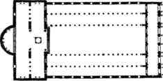
FIG. 67.—PLAN OF THE BASILICA OF ST. PAUL.
Of the two Constantinian basilicas in Rome, the one dedicated to St. Peter was demolished in the fifteenth century; that of St. John Lateran has been so disfigured by modern alterations as to be unrecognizable. The former of the two adjoined the site of the martyrdom of St. Peter in the circus of Caligula and Nero; it was five-aisled, 380 feet in length by 212 feet in width. The nave was 80 feet wide and 100 feet high, and the disproportionately high clearstory wall rested on horizontal architraves carried by columns. The impressive dimensions and simple plan of this structure gave it a majesty worthy of its rank as the first church of Christendom. St. Paul beyond the Walls (S. Paolo fuori le mura), built in 386 by Theodosius, resembled St. Peter’s closely in plan (Figs. 67, 68). Destroyed by fire in 1821, it has been rebuilt with almost its pristine splendor, and is, next to the modern St. Peter’s and the Pantheon, the most impressive place of worship in Rome. Santa Maria Maggiore,15 though smaller in size, is more interesting because it so largely retains its original aspect, its Renaissance ceiling happily harmonizing with its simple antique lines. Ionic columns support architraves to carry the clearstory, as in St. Peter’s. In most other examples, St. Paul’s included, arches turned from column to column perform this function. The first known case of such use of classic columns as arch-bearers was in the palace of Diocletian at Spalato; it also appears in Syrian buildings of the third and fourth centuries A.D.
FIG. 68.—ST. PAUL BEYOND THE WALLS. INTERIOR.
The basilica remained the model for ecclesiastical architecture in Rome, without noticeable change either of plan or detail, until the time of the Renaissance. All the earlier examples employed columns and capitals taken from ancient ruins, often incongruous and ill-matched in size and order. San Clemente (1084) has retained almost intact its early aspect, its choir-enclosure, baldaquin, and ambones having been well preserved or carefully restored. Other important basilicas are mentioned in the list of monuments on pages 118, 119.
RAVENNA. The fifth and sixth centuries endowed Ravenna with a number of notable buildings which, with the exception of the cathedral, demolished in the last century, have been preserved to our day. Subdued by the Byzantine emperor Justinian in 537, Ravenna became the meeting-ground for Early Christian and Byzantine traditions and the basilican and circular plans are both represented. The two churches dedicated to St. Apollinaris, S. Apollinare Nuovo (520) in the city, and S. Apollinare in Classe (538) three miles distant from the city, in what was formerly the port, are especially interesting for their fine mosaics, and for the impost-blocks interposed above the capitals of their columns to receive the springing of the pier-arches. These blocks appear to be somewhat crude modifications 115 of the fragmentary architraves or entablatures employed in classic Roman architecture to receive the springing of vaults sustained by columns, and became common in Byzantine structures (Fig. 73). The use of external arcading to give some slight adornment to the walls of the second of the above-named churches, and the round bell-towers of brick which adjoined both of them, were first steps toward the development of the “wall-veil” or arcaded decoration, and of the campaniles, which in later centuries became so characteristic of north Italian churches (see Chapter XIII.). In Rome the campaniles which accompany many of the mediæval basilicas are square and pierced with many windows.
The basilican form of church became general in Italy, a large proportion of whose churches continued to be built with wooden roofs and with but slight deviations from the original type, long after the appearance of the Gothic style. The chief departures from early precedent were in the exterior, which was embellished with marble incrustations as in S. Miniato (Florence); or with successive stories of wall-arcades, as in many churches in Pisa and Lucca (see Fig. 90); until finally the introduction of clustered piers, pointed arches, and vaulting, gradually transformed the basilican into the Italian Romanesque and Gothic styles.
SYRIA AND THE EAST. In Syria, particularly the central portion, the Christian architecture of the 3d to 8th centuries produced a number of very interesting monuments. The churches built by Constantine in Syria—the Church of the Nativity in Bethlehem (nominally built by his mother), of the Ascension at Jerusalem, the magnificent octagonal church on the site of the Temple, and finally the somewhat similar church at Antioch—were the most notable Christian monuments in Syria. The first three on the list, still extant in part at least, have been so altered by later 116 additions and restorations that their original forms are only approximately known from early descriptions. They were all of large size, and the octagonal church on the Temple platform was of exceptional magnificence.16 The columns and a part of the marble incrustations of the early design are still visible in the “Mosque of Omar,” but most of the old work is concealed by the decoration of tiles applied by the Moslems, and the whole interior aspect altered by the wood-and-plaster dome with which they replaced the simpler roof of the original.
FIG. 69.—CHURCH AT KALB LOUZEH.
Christian architecture in Syria soon, however, diverged from Roman traditions. The abundance of hard stone, the total lack of clay or brick, the remoteness from Rome, led to a peculiar independence and originality in the forms and details of the ecclesiastical as well as of the domestic architecture of central Syria. These innovations upon Roman models resulted in the development of distinct types which, but for the arrest of progress by the Mohammedan conquest in the seventh century, would doubtless have inaugurated a new and independent style of architecture. Piers of masonry came 117 to replace the classic column, as at Tafkha (third or fourth century), Rouheiha and Kalb Louzeh (fifth century? Fig. 69); the ceilings in the smaller churches were often formed with stone slabs; the apse was at first confined within the main rectangle of the plan, and was sometimes square. The exterior assumed a striking and picturesque variety of forms by means of turrets, porches, and gables. Singularly enough, vaulting hardly appears at all, though the arch is used with fine effect. Conventional and monastic groups of buildings appear early in Syria, and that of St. Simeon Stylites at Kelat Seman is an impressive and interesting monument. Four three-aisled wings form the arms of a cross, meeting in a central octagonal open court, in the midst of which stood the column of the saint. The eastern arm of the cross forms a complete basilica of itself, and the whole cross measures 330 × 300 feet. Chapels, cloisters, and cells adjoin the main edifice.
Circular and polygonal plans appear in a number of Syrian examples of the early sixth century. Their most striking feature is the inscribing of the circle or polygon in a square which forms the exterior outline, and the use of four niches to fill out the corners. This occurs at Kelat Seman in a small double church, perhaps the tomb and chapel of a martyr; in the cathedral at Bozrah (Fig. 70), and in the small domical church of St. George at Ezra. These were probably the prototypes of many Byzantine churches like St. Sergius at Constantinople, and San Vitale at Ravenna (Fig. 74), though the exact dates of the Syrian 118 churches are not known. The one at Ezra is the only one of the three which has a dome, the others having been roofed with wood.
The interesting domestic architecture of this period is preserved in whole towns and villages in the Hauran, which, deserted at the Arab conquest, have never been reoccupied and remain almost intact but for the decay of their wooden roofs. They are marked by dignity and simplicity of design, and by the same picturesque massing of gables and roofs and porches which has already been remarked of the churches. The arches are broad, the columns rather heavy, the mouldings few and simple, and the scanty carving vigorous and effective, often strongly Byzantine in type.
Elsewhere in the Eastern world are many early churches of which even the enumeration would exceed the limits of this work. Salonica counts a number of basilicas and several domical churches. The church of St. George, now a mosque, is of early date and thoroughly Roman in plan and section, of the same class with the Pantheon and the tomb of Helena, in both of which a massive circular wall is lightened by eight niches. At Angora (Ancyra), Hierapolis, Pergamus, and other points in Asia Minor; in Egypt, Nubia, and Algiers, are many examples of both circular and basilican edifices of the early centuries of Christianity. In Constantinople there remains but a single representative of the basilican type, the church of St. John Studius, now the Emir Akhor mosque.
MONUMENTS: Rome: 4th century: St. Peter’s, Sta. Costanza, 330?; Sta. Pudentiana, 335 (rebuilt 1598); tomb of St. Helena; Baptistery of Constantine; St. Paul’s beyond the Walls, 386; St. John Lateran (wholly remodelled in modern times). 5th century: Baptistery of St. John Lateran; Sta. Sabina, 425; Sta. Maria Maggiore, 432; S. Pietro in Vincoli, 442 (greatly altered in modern times). 6th century: S. Lorenzo, 580 (the older portion in two stories); SS. Cosmo e Damiano. 7th century: Sta. Agnese, 625; S. Giorgio in Velabro, 682. 8th century: Sta. Maria in 119 Cosmedin; S. Crisogono. 9th century: S. Nereo ed Achilleo; Sta. Prassede; Sta. Maria in Dominica. 12th and 13th centuries: S. Clemente, 1118; Sta. Maria in Trastevere; S. Lorenzo (nave); Sta. Maria in Ara Coeli. Ravenna: Baptistery of S. John, 400 (?); S. Francesco; S. Giovanni Evangelista, 425; Sta. Agata, 430; S. Giovanni Battista, 439; tomb of Galla Placidia, 450; S. Apollinare Nuovo, 500–520; S. Apollinare in Classe, 538; St. Victor; Sta. Maria in Cosmedin (the Arian Baptistery); tomb of Theodoric (Sta. Maria della Rotonda, a decagonal two-storied mausoleum, with a low dome cut from a single stone 36 feet in diameter), 530–540. Italy in General: basilica at Parenzo, 6th century; cathedral and Sta. Fosca at Torcello, 640–700; at Naples Sta. Restituta, 7th century; others, mostly of 10th-13th centuries, at Murano near Venice, at Florence (S. Miniato), Spoleto, Toscanella, etc.; baptisteries at Asti, Florence, Nocera dei Pagani, and other places. In Syria and The East: basilicas of the Nativity at Bethlehem, of the Sepulchre and of the Ascension at Jerusalem; also polygonal church on Temple platform; these all of 4th century. Basilicas at Bakouzah, Hass, Kelat Seman, Kalb Louzeh, Rouheiha, Tourmanin, etc.; circular churches, tombs, and baptisteries at Bozrah, Ezra, Hass, Kelat Seman, Rouheiha, etc.; all these 4th-8th centuries. Churches at Constantinople (Holy Wisdom, St. John Studius, etc.), Hierapolis, Pergamus, and Thessalonica (St. Demetrius, “Eski Djuma”); in Egypt and Nubia (Djemla, Announa, Ibreem, Siout, etc.); at Orléansville in Algeria. (For churches, etc., of 8th-10th centuries in the West, see Chapter XIII.)
15. Hereafter the abbreviation S. M. will be generally used instead of the name Santa Maria.
16. Fergusson (History of Architecture, vol. ii., pp. 408, 432) contends that this was the real Constantinian church of the Holy Sepulchre, and that the one called to-day by that name was erected by the Crusaders in the twelfth century. The more general view is that the latter was originally built by Constantine as the Church of the Sepulchre, though subsequently much altered, and that the octagonal edifice was also his work, but erected under some other name. Whether this church was later incorporated in the “Mosque of Omar,” or merely furnished some of the materials for its construction, is not quite clear.
CHAPTER XI.
BYZANTINE ARCHITECTURE.
Books Recommended: As before, Essenwein, Hübsch, Von Quast. Also, Bayet, L’Art Byzantin. Choisy, L’Art de bâtir chez les Byzantins. Lethaby and Swainson, Sancta Sophia. Ongania, La Basilica di San Marco. Pulgher, Anciennes Églises Byzantines de Constantinople. Salzenberg, Altchristliche Baudenkmäle von Constantinopel. Texier and Pullan, Byzantine Architecture.
ORIGIN AND CHARACTER. The decline and fall of Rome arrested the development of the basilican style in the West, as did the Arab conquest later in Syria. It was otherwise in the new Eastern capital founded by Constantine in the ancient Byzantium, which was rising in power and wealth while Rome lay in ruins. Situated at the strategic point of the natural highway of commerce between East and West, salubrious and enchantingly beautiful in its surroundings, the new capital grew rapidly from provincial insignificance to metropolitan importance. Its founder had embellished it with an extraordinary wealth of buildings, in which, owing to the scarcity of trained architects, quantity and cost doubtless outran quality. But at least the tameness of blindly followed precedent was avoided, and this departure from traditional tenets contributed undoubtedly to the originality of Byzantine architecture. A large part of the artisans employed in building were then, as now, from Asia Minor and the Ægean Islands, Greek in race if not in name. An Oriental taste for brilliant and harmonious color and for minute decoration spread over broad 121 surfaces must have been stimulated by trade with the Far East and by constant contact with Oriental peoples, costumes, and arts. An Asiatic origin may also be assigned to the methods of vaulting employed, far more varied than the Roman, not only in form but also in materials and processes. From Roman architecture, however, the Byzantines borrowed the fundamental notion of their structural art; that, namely, of distributing the weights and strains of their vaulted structures upon isolated and massive points of support, strengthened by deep buttresses, internal or external, as the case might be. Roman, likewise, was the use of polished monolithic columns, and the incrustation of the piers and walls with panels of variegated marble, as well as the decoration of plastered surfaces by fresco and mosaic, and the use of opus sectile and opus Alexandrinum for the production of sumptuous marble pavements. In the first of these processes the color-figures of the pattern are formed each of a single piece of marble cut to the shape required; in the second the pattern is compounded of minute squares, triangles, and curved pieces of uniform size. Under these combined influences the artists of Constantinople wrought out new problems in construction and decoration, giving to all that they touched a new and striking character.
There is no absolute line of demarcation, chronological, geographical, or structural, between Early Christian and Byzantine architecture. But the former was especially characterized by the basilica with three or five aisles, and the use of wooden roofs even in its circular edifices; the vault and dome, though not unknown, being exceedingly rare. Byzantine architecture, on the other hand, rarely produced the simple three-aisled or five-aisled basilica, and nearly all its monuments were vaulted. The dome was especially frequent, and Byzantine architecture achieved its highest triumphs in the use of the pendentive, as the triangular spherical surfaces are called, by the aid of which a 122 dome can be supported on the summits of four arches spanning the four sides of a square, as explained later. There is as little uniformity in the plans of Byzantine buildings as in the forms of the vaulting. A few types of church-plan, however, predominated locally in one or another centre; but the controlling feature of the style was the dome and the constructive system with which it was associated. The dome, it is true, had long been used by the Romans, but always on a circular plan, as in the Pantheon. It is also a fact that pendentives have been found in Syria and Asia Minor older than the oldest Byzantine examples. But the special feature characterizing the Byzantine dome on pendentives was its almost exclusive association with plans having piers and columns or aisles, with the dome as the central and dominant feature of the complex design (see plans, Figs. 74, 75, 78). Another strictly Byzantine practice was the piercing of the lower portion of the dome with windows forming a circle or crown, and the final development of this feature into a high drum.
CONSTRUCTION. Still another divergence from Roman methods was in the substitution of brick and stone masonry for concrete. Brick was used for the mass as well as the facing of walls and piers, and for the vaulting in many buildings mainly built of stone. Stone was used either alone or in combination with brick, the latter appearing in bands of four or five courses at intervals of three or four feet. In later work a regular alternation of the two materials, course for course, was not uncommon. In piers intended to support unusually heavy loads the stone was very carefully cut and fitted, and sometimes tied and clamped with iron.
Vaults were built sometimes of brick, sometimes of cut stone; in a few cases even of earthenware jars fitting into each other, and laid up in a continuous contracting spiral from the base to the crown of a dome, as in San Vitale at 123 Ravenna. Ingenious processes for building vaults without centrings were made use of—processes inherited from the drain-builders of ancient Assyria, and still in vogue in Armenia, Persia, and Asia Minor. The groined vault was common, but always approximated the form of a dome, by a longitudinal convexity upward in the intersecting vaults. The aisles of Hagia Sophia17 display a remarkable variety of forms in the vaulting.
FIG. 71.—DIAGRAM OF PENDENTIVES.
DOMES. The dome, as we have seen, early became the most characteristic feature of Byzantine architecture; and especially the dome on pendentives. If a hemisphere be cut by five planes, four perpendicular to its base and bounding a square inscribed therein, and the fifth plane parallel to the base and tangent to the semicircular intersections made by the first four, there will remain of the original surface only four triangular spaces bounded by arcs of circles. These are called pendentives (Fig. 71 a). When these are built up of masonry, each course forms a species of arch, by virtue of its convexity. At the crown of the four arches on which they rest, these courses meet and form a complete circle, perfectly stable and capable of sustaining any superstructure that does not by excessive weight disrupt the whole fabric by overthrowing 124 the four arches which support it. Upon these pendentives, then, a new dome may be started of any desired curvature, or even a cylindrical drum to support a still loftier dome, as in the later churches (Fig. 71 b). This method of covering a square is simpler than the groined vault, having no sharp edges or intersections; it is at least as effective architecturally, by reason of its greater height in the centre; and is equally applicable to successive bays of an oblong, cruciform, and even columnar building. In the great cisterns at Constantinople vast areas are covered by rows of small domes supported on ranges of columns.
The earlier domes were commonly pierced with windows at the base, this apparent weakening of the vault being compensated for by strongly buttressing the piers between the windows, as in Hagia Sophia. Here forty windows form a crown of light at the spring of the dome, producing an effect almost as striking as that of the simple oculus of the Pantheon, and celebrated by ancient writers in the most extravagant terms. In later and smaller churches a high drum was introduced beneath the dome, in order to secure, by means of longer windows, more light than could be obtained by merely piercing the diminutive domes.
Buttressing was well understood by the Byzantines, whose plans were skilfully devised to provide internal abutments, which were often continued above the roofs of the side-aisles to prop the main vaults, precisely as was done by the Romans in their thermæ and similar halls. But the Byzantines, while adhering less strictly than the Romans to traditional forms and processes, and displaying much more ready contrivance and special adaptation of means to ends, never worked out this pregnant structural principle to its logical conclusion as did the Gothic architects of Western Europe a few centuries later.
DECORATION. The exteriors of Byzantine buildings (except in some of the small churches of late date) were 125 generally bare and lacking in beauty. The interiors, on the contrary, were richly decorated, color playing a much larger part than carving in the designs. Painting was resorted to only in the smaller buildings, the more durable and splendid medium of mosaic being usually preferred. This was, as a rule, confined to the vaults and to those portions of the wall-surfaces embraced by the vaults above their springing. The colors were brilliant, the background being usually of gold, though sometimes of blue or a delicate green. Biblical scenes, symbolic and allegorical figures and groups of saints adorned the larger areas, particularly the half-dome of the apse, as in the basilicas. The smaller vaults, the soffits of arches, borders of pictures, and other minor surfaces, received a more conventional decoration of crosses, monograms, and set patterns.
FIG. 72.—SPANDRIL. HAGIA SOPHIA.
The walls throughout were sheathed with slabs of rare marble in panels so disposed that the veining should produce symmetrical figures. The panels were framed in billet-mouldings, derived perhaps from classic dentils; the billets or projections on one side the moulding coming opposite the spaces on the other. This seems to have been a purely Byzantine feature.
CARVED DETAILS. Internally the different stories were marked by horizontal bands and cornices of white or inlaid marble richly carved. The arch-soffits, the archivolts or 126 bands around the arches, and the spandrils between them were covered with minute and intricate incised carving. The motives used, though based on the acanthus and anthemion, were given a wholly new aspect. The relief was low and flat, the leaves sharp and crowded, and the effect rich and lacelike, rather than vigorous. It was, however, well adapted to the covering of large areas where general effect was more important than detail. Even the capitals were treated in the same spirit. The impost-block was almost universal, except where its use was rendered unnecessary by giving to the capital itself the massive pyramidal form required to receive properly the spring of the arch or vault. In such cases (more frequent in Constantinople than elsewhere) the surface of the capital was simply covered with incised carving of foliage, basketwork, monograms, etc.; rudimentary volutes in a few cases recalling classic traditions (Figs. 72, 73). The mouldings were weak and poorly executed, and the vigorous profiles of classic cornices were only remotely suggested by the characterless aggregations of mouldings which took their place.

FIG. 73.—CAPITAL WITH IMPOST BLOCK, S. VITALE.
FIG. 74.—ST. SERGIUS, CONSTANTINOPLE.
PLANS. The remains of Byzantine architecture are almost
exclusively of churches and baptisteries, but the plans of these are
exceedingly varied. The first radical departure
127
from the basilica-type seems to have been the adoption of circular or
polygonal plans, such as had usually served only for tombs and
baptisteries. The Baptistery of St. John at Ravenna (early fifth
century) is classed by many authorities as a Byzantine monument. In the
early years of the sixth century the adoption of this model had become
quite general, and with it the development of domical design began to
advance. The church of St. Sergius at Constantinople (Fig. 74),
originally joined to a short basilica dedicated to St. Bacchus
(afterward destroyed by the Turks), as in the double church at Kelat
Seman, was built about 520; that of San Vitale at Ravenna was
begun a few years later; both are domical churches on an octagonal plan,
with an exterior aisle. Semicircular niches—four in St. Sergius
and eight in San Vitale—projecting into the aisle, enlarge
somewhat the area of the central space and give variety to the internal
effect. The origin of this characteristic feature may be traced to the
eight niches of the Pantheon, through such intermediate examples as the
temple of Minerva Medica at Rome. The true pendentive does not appear in
these two churches.
FIG. 75.—PLAN OF HAGIA SOPHIA.
Timidly employed up to that time in small structures, it received a
remarkable development in the magnificent church of Hagia Sophia,
built by Anthemius of Tralles and Isodorus of Miletus, under Justinian,
532–538 A.D. In the plan of this
marvellous edifice (Fig. 75) the dome rests upon four mighty arches
bounding a square, into two of which open the half-domes of semicircular
apses. These apses are penetrated and extended each by two smaller
niches and a central arch, and the whole vast nave, measuring over 200 ×
100 feet, is flanked by
128
enormously wide aisles connecting at the front with a majestic narthex.
Huge transverse buttresses, as in the Basilica of Constantine (with
whose structural design this building shows striking affinities), divide
the aisles each into three sections. The plan suggests that of St.
Sergius cut in two, with a lofty dome on pendentives over a square plan
inserted between the halves. Thus was secured a noble and unobstructed
hall of unrivalled proportions and great beauty, covered by a
combination of half-domes increasing in span and height as they lead up
successively to the stupendous central vault, which rises 180 feet into
the air and fitly crowns the whole. The imposing effect of this
low-curved but loftily-poised dome, resting as it does upon a crown of
windows, and so disposed that its summit is visible from every point of
the nave (as may be easily seen from an examination of the section, Fig.
76), is not surpassed in any interior ever erected.
FIG. 76.—SECTION OF HAGIA SOPHIA.
The two lateral arches under the dome are filled by clearstory walls pierced by twelve windows, and resting on arcades in two stories carried by magnificent columns taken from ancient ruins. These separate the nave from the side-aisles, which are in two stories forming galleries, and are vaulted with a remarkable variety of groined vaults. All the masses are disposed with studied reference to the resistance required by the many and complex thrusts exerted by the dome and other vaults. That the earthquakes of one thousand three hundred and fifty years have not destroyed the church is the best evidence of the sufficiency of these precautions.
[129]
FIG. 77.—INTERIOR OF HAGIA SOPHIA, CONSTANTINOPLE.
Not less remarkable than the noble planning and construction of this church was the treatment of scale and decoration in its interior design. It was as conspicuously the masterpiece of Byzantine architecture as the Parthenon was of the classic Greek. With little external beauty, it is internally one of the most perfectly composed and beautifully decorated halls of worship ever erected. Instead of the simplicity of the Pantheon it displays the complexity of an organism of admirably related parts. The division of the interior height into two stories below the spring of the four arches, reduces the component parts of the design to moderate dimensions, so that the scale of the whole is more easily grasped and its vast size emphasized by the contrast. The walls are incrusted with precious marbles up to the spring of the vaulting; the capitals, spandrils, and soffits are richly and minutely carved with incised ornament, and all the vaults covered with splendid mosaics. Dimmed by the lapse of centuries and disfigured by the vandalism of the Moslems, this noble interior, by the harmony of its coloring and its impressive grandeur, is one of the masterpieces of all time (Fig. 77).
LATER CHURCHES. After the sixth century no monuments were built at all rivalling in scale the creations of the 132 former period. The later churches were, with few exceptions, relatively small and trivial. Neither the plan nor the general aspect of Hagia Sophia seems to have been imitated in these later works. The crown of dome-windows was replaced by a cylindrical drum under the dome, which was usually of insignificant size. The exterior was treated more decoratively than before, by means of bands and incrustations of colored marble, or alternations of stone and brick; and internally mosaic continued to be executed with great skill and of great beauty until the tenth century, when the art rapidly declined. These later churches, of which a number were spared by the Turks, are, therefore, generally pleasing and elegant rather than striking or imposing.
FIG. 78.—PLAN OF ST. MARK’S, VENICE.
FOREIGN MONUMENTS. The influence of Byzantine art was wide-spread, both in Europe and Asia. The leading city of civilization through the Dark Ages, Constantinople influenced Italy through her political and commercial relations with Ravenna, Genoa, and Venice. The church of St. Mark in the latter city was one result of this influence (Figs. 78, 79). Begun in 1063 to replace an earlier church destroyed by fire, it received through several centuries additions not always Byzantine in character. Yet it was mainly the work of Byzantine builders, who copied most probably the church of the Apostles at Constantinople, built by Justinian. The picturesque but wholly unstructural use of columns in the entrance porches, the upper parts of the façade, the wooden cupolas over the five domes, and the pointed arches in the narthex, are deviations from Byzantine traditions dating in part from the later Middle Ages 133 Nothing could well be conceived more irrational, from a structural point of view, than the accumulation of columns in the entrance-arches; but the total effect is so picturesque and so rich in color, that its architectural defects are easily overlooked. The external veneering of white and colored marble occurs rarely in the East, but became a favorite practice in Venice, where it continued in use for five hundred years. The interior of St. Mark’s, in some respects better preserved than that of Hagia Sophia, is especially fine in color, though not equal in scale and grandeur to the latter church. With its five domes it has less unity of effect than Hagia Sophia, but more of the charm of picturesqueness, and its less brilliant and simpler lighting enhances the impressiveness of its more modest dimensions.
FIG. 79.—INTERIOR OF ST. MARK’S.
In Russia and Greece the Byzantine style has continued to be the official style of the Greek Church. The Russian monuments are for the most part of a somewhat fantastic aspect, the Muscovite taste having introduced many innovations in the form of bulbous domes and other eccentric details. In Greece there are few large churches, and some of the most interesting, like the Cathedral at Athens, are almost toy-like in their diminutiveness. On Mt. Athos (Hagion Oros) is an ancient monastery which still retains its Byzantine character and traditions. In Armenia (as at Ani, Etchmiadzin, etc.) are also interesting examples of late Armeno-Byzantine architecture, showing applications to exterior carved detail of elaborate interlaced ornament looking like a re-echo of Celtic MSS. illumination, itself, no doubt, originating in Byzantine traditions. But the greatest and most prolific offspring of Byzantine architecture appeared after the fall of Constantinople (1453) in the new mosque-architecture of the victorious Turks.
MONUMENTS. Constantinople: St. Sergius, 520; Hagia Sophia, 532–538; Holy Apostles by Justinian (demolished); Holy Peace (St. Irene) originally by Constantine, rebuilt by Justinian, and again in 8th century by Leo the Isaurian; Hagia Theotokos, 12th century (?); Monétes Choras (“Kahiré Djami”), 10th century; Pantokrator; “Fetiyeh Djami.” Cisterns, especially the “Bin Bir Direk” (1,001 columns) and “Yere Batan Serai;” palaces, few vestiges except the great hall of the Blachernæ palace. Salonica: Churches—of Divine Wisdom (“Aya Sofia”) St. Bardias, St. Elias. Ravenna: San Vitale, 527–540. Venice: St. Mark’s, 977–1071; “Fondaco dei Turchi,” now Civic Museum, 12th century. Other churches at Athens and Mt. Athos; at Misitra, Myra, Ancyra, Ephesus, etc.; in Armenia at Ani, Dighour, Etchmiadzin, Kouthais, Pitzounda, Usunlar, etc.; tombs at Ani, Varzhahan, etc.; in Russia at Kieff (St. Basil, Cathedral), Kostroma, Moscow (Assumption, St. Basil, Vasili Blaghennoi, etc.), Novgorod, Tchernigoff; at Kurtea Darghish in Wallachia, and many other places.
17. “St. Sophia,” the common name of this church, is a misnomer. It was not dedicated to a saint at all, but to the Divine Wisdom (Hagia Sophia), which name the Turks have retained in the softened form “Aya Sofia.”
135CHAPTER XII.
SASSANIAN AND MOHAMMEDAN ARCHITECTURE.
(ARABIAN, MORESQUE, PERSIAN, INDIAN, AND TURKISH.)
Books Recommended: Bourgoin, Les Arts Arabes. Coste, Monuments du Caire; Monuments modernes de la Perse. Cunningham, Archæological Survey of India. Fergusson, Indian and Eastern Architecture. De Forest, Indian Architecture and Ornament. Flandin et Coste, Voyage en Perse. Franz-Pasha, Die Baukunst des Islam. Gayet, L’Art Arabe; L’Art Persan. Girault de Prangey, Essai sur l’architecture des Arabes en Espagne, etc. Goury and Jones, The Alhambra. Jacob, Jeypore Portfolio of Architectural Details. Le Bon, La civilisation des Arabes; Les monuments de l’Inde. Owen Jones, Grammar of Ornament. Parvillée, L’Architecture Ottomane. Prisse d’Avennes, L’Art Arabe. Texier, Description de l’Arménie, la Perse, etc.
GENERAL SURVEY. While the Byzantine Empire was at its zenith, the new faith of Islam was conquering Western Asia and the Mediterranean lands with a fiery rapidity, which is one of the marvels of history. The new architectural styles which grew up in the wake of these conquests, though differing widely in conception and detail in the several countries, were yet marked by common characteristics which set them quite apart from the contemporary Christian styles. The predominance of decorative over structural considerations, a predilection for minute surface-ornament, the absence of pictures and sculpture, are found alike in Arabic, Persian, Turkish, and Indian buildings, though in varying degree. These new styles, however, were almost entirely the handiwork of artisans belonging to the 136 conquered races, and many traces of Byzantine, and even after the Crusades, of Norman and Gothic design, are recognizable in Moslem architecture. But the Orientalism of the conquerors and their common faith, tinged with the poetry and philosophic mysticism of the Arab, stamped these works of Copts, Syrians, and Greeks with an unmistakable character of their own, neither Byzantine nor Early Christian.
ARABIC ARCHITECTURE. In the building of mosques and tombs, especially at Cairo, this architecture reached a remarkable degree of decorative elegance, and sometimes of dignity. It developed slowly, the Arabs not being at the outset a race of builders. The early monuments of Syria and Egypt were insignificant, and the sacred Kaabah at Mecca and the mosque at Medina hardly deserve to be called architectural monuments at all. The most important early works were the mosques of ’Amrou at Cairo (642, rebuilt and enlarged early in the eighth century), of El Aksah on the Temple platform at Jerusalem (691, by Abd-el-Melek), and of El Walid at Damascus (705–732, recently seriously injured by fire). All these were simple one-storied structures, with flat wooden roofs carried on parallel ranges of columns supporting pointed arches, the arcades either closing one side of a square court, or surrounding it completely. The long perspectives of the aisles and the minute decoration of the archivolts and ceilings alone gave them architectural character. The beautiful Dome of the Rock (Kubbet-es-Sakhrah, miscalled the Mosque of Omar) on the Temple platform at Jerusalem is either a remodelled Constantinian edifice, or in large part composed of the materials of one (see p. 116).
The splendid mosque of Ibn Touloun (876–885) was built on the same plan as that of Amrou, but with cantoned piers instead of columns and a corresponding increase in variety of perspective and richness of effect. With the incoming 137 of the Fatimite dynasty, however, and the foundation of the present city of Cairo (971), vaulting began to take the place of wooden ceilings, and then appeared the germs of those extraordinary applications of geometry to decorative design which were henceforth to be the most striking feature of Arabic ornament. Under the Ayûb dynasty, which began with Salâh-ed-din (Saladin) in 1172, these elements, of which the great Barkouk mosque (1149) is the most imposing early example, developed slowly in the domical tombs of the Karafah at Cairo, and prepared the way for the increasing richness and splendor of a long series of mosques, among which those of Kalaoun (1284–1318), Sultan Hassan (1356), El Mu’ayyad (1415), and Kaîd Bey (1463), were the most conspicuous examples (Fig. 80). They mark, indeed, successive advances in complexity of planning, ingenuity of construction, and elegance of decoration. Together they constitute an epoch in Arabic architecture, which coincides closely with the development of Gothic 138 vaulted architecture in Europe, both in the stages and the duration of its advances.
FIG. 80.—MOSQUE OF SULTAN HASSAN, CAIRO: SANCTUARY.
a, Mihrâb, b, Mimber.
The mosques of these three centuries are, like the mediæval monasteries, impressive aggregations of buildings of various sorts about a central court of ablutions. The tomb of the founder, residences for the imams, or priests, schools (madrassah), and hospitals (mâristân) rival in importance the prayer-chamber. This last is, however, the real focus of interest and splendor; in some cases, as in Sultan Hassan, it is a simple barrel-vaulted chamber open to the court; in others an oblong arcaded hall with many small domes; or again, a square hall covered with a high pointed dome on pendentives of intricately beautiful stalactite-work (see below). The ceremonial requirements of the mosque were simple. The-court must have its fountain of ablutions in the centre. The prayer-hall, or mosque proper, must have its mihrâb, or niche, to indicate the kibleh, the direction of Mecca; and its mimber, or high, slender pulpit for the reading of the Kôran. These were the only absolutely indispensable features of a mosque, but as early as the ninth century the minaret was added, from which the call to prayer could be sounded over the city by the mueddin. Not until the Ayubite period, however, did it begin to assume those forms of varied and picturesque grace which lend to Cairo so much of its architectural charm.
ARCHITECTURAL DETAILS. While Arabic architecture, in Syria and Egypt alike, possesses more decorative than constructive originality, the beautiful forms of its domes, pendentives, and minarets, the simple majesty of the great pointed barrel-vaults of the Hassan mosque and similar monuments, and the graceful lines of the universally used pointed arch, prove the Coptic builders and their later Arabic successors to have been architects of great ability. The Arabic domes, as seen both in the mosques and in the remarkable group of tombs commonly called “tombs of the 139 Khalîfs,” are peculiar not only in their pointed outlines and their rich external decoration of interlaced geometric motives, but still more in the external and internal treatment of the pendentives, exquisitely decorated with stalactite ornament. This ornament, derived, no doubt, from a combination of minute corbels with rows of small niches, and presumably of Persian origin, was finally developed into a system of extraordinary intricacy, applicable alike to the topping of a niche or panel, as in the great doorways of the mosques, and to the bracketing out of minaret galleries (Figs. 81, 82). Its applications show a bewildering variety of forms and an extraordinary aptitude for intricate geometrical design.
FIG. 81.—MOSQUE OF KAÎD BEY, CAIRO.
DECORATION. Geometry, indeed, vied with the love of color in its hold on the Arabic taste. Ceiling-beams were carved into highly ornamental forms before receiving their rich color-decoration of red, green, blue, and gold. The doors and the mimber were framed in geometric patterns with slender intersecting bars forming complicated star-panelling. The voussoirs of arches were cut into curious interlocking forms; doorways and niches were covered with stalactite corbelling, and pavements and wall-incrustations, 140 whether of marble or tiling, combined brilliancy and harmony of color with the perplexing beauty of interlaced star-and-polygon patterns of marvellous intricacy. Stained glass added to the interior color-effect, the patterns being perforated in plaster, with a bit of colored glass set into each perforation—a device not very durable, perhaps, but singularly decorative.
OTHER WORKS. Few of the mediæval Arabic palaces have remained to our time. That they were adorned with a splendid prodigality appears from contemporary accounts. This splendor was internal rather than external; the palace, like all the larger and richer dwellings in the East, surrounded one or more courts, and presented externally an almost unbroken wall. The fountain in the chief court, the diwân (a great, vaulted reception-chamber opening upon the court and raised slightly above it), the dâr, or men’s court, rigidly separated from the hareem for the women, were and are universal elements in these great dwellings. The more common city-houses show as their most striking features successively corbelled-out stories and broad wooden eaves, with lattice-screens covering single windows, or almost a whole façade, composed of turned work (mashrabiyya), in designs of great beauty.
The fountains, gates, and minor works of the Arabs display the same beauty in decoration and color, the same general forms and details which characterize the larger works, but it is impossible here to particularize further with regard to them.
FIG. 82.—MOORISH DETAIL, ALHAMBRA.
Showing stalactite and perforated work, Moorish cusped arch, Hispano-Moresque capitals, and decorative inscriptions.
MORESQUE. Elsewhere in Northern Africa the Arabs produced no such important works as in Egypt, nor is the architecture of the other Moslem states so well preserved or so well known. Constructive design would appear to have been there even more completely subordinated to decoration; tiling and plaster-relief took the place of more architectural elements and materials, while horseshoe and cusped 141 arches were substituted for the simpler and more architectural pointed arch (Fig. 82). The courts of palaces and public buildings were surrounded by ranges of horseshoe arches on slender columns; these last being provided with capitals of a form rarely seen in Cairo. Towers were built of much more massive design than the Cairo minarets, usually with a square, almost solid shaft and a more open lantern at the top, sometimes in several diminishing stories.
HISPANO-MORESQUE. The most splendid phase of this branch of Arabic architecture is found not in Africa but in Spain, which was overrun in 710–713 by the Moors, who established there the independent Khalifate of Cordova. This was later split up into petty kingdoms, of which the most important were Granada, Seville, Toledo, and Valencia. This dismemberment of the Khalifate led in time to the loss of these cities, which were one by one recovered by the Christians during the fourteenth and fifteenth centuries; 142 the capture of Granada, in 1492, finally destroying the Moorish rule.
The dominion of the Moors in Spain was marked by a high civilization and an extraordinary activity in building. The style they introduced became the national style in the regions they occupied, and even after the expulsion of the Moors was used in buildings erected by Christians and by Jews. The “House of Pilate,” at Seville, is an example of this, and the general use of the Moorish style in Jewish synagogues, down to our own day, both in Spain and abroad, originated in the erection of synagogues for the Jews in Spain by Moorish artisans and in Moorish style, both during and after the period of Moslem supremacy.
Besides innumerable mosques, castles, bridges, aqueducts, gates, and fountains, the Moors erected several monuments of remarkable size and magnificence. Specially worthy of notice among them are the Great Mosque at Cordova, the Alcazars of Seville and Malaga, the Giralda at Seville, and the Alhambra at Granada.
FIG. 83.—INTERIOR OF THE GREAT MOSQUE AT CORDOVA.
The Mosque at Cordova, begun in 786 by ‘Abd-er-Rahman, enlarged in 876, and again by El Mansour in 976, is a vast arcaded hall 375 feet × 420 feet in extent, but only 30 143 feet high (Fig. 83). The rich wooden ceiling rests upon seventeen rows of thirty to thirty-three columns each, and two intersecting rows of piers, all carrying horseshoe arches in two superposed ranges, a large portion of those about the sanctuary being cusped, the others plain, except for the alternation of color in the voussoirs. The mihrâb niche is particularly rich in its minutely carved incrustations and mosaics, and a dome ingeniously formed by intersecting ribs covers the sanctuary before it. This form of dome occurs frequently in Spain.
The Alcazars at Seville and Malaga, which have been restored in recent years, present to-day a fairly correct counterpart of the castle-palaces of the thirteenth century. They display the same general conceptions and decorative features as the Alhambra, which they antedate. The Giralda at Seville is, on the other hand, unique. It is a lofty rectangular tower, its exterior panelled and covered with a species of quarry-ornament in relief; it terminated originally in two or three diminishing stages or lanterns, which were replaced in the sixteenth century by the present Renaissance belfry.
The Alhambra is universally considered to be the masterpiece of Hispano-Moresque art, partly no doubt on account of its excellent preservation. It is most interesting as an example of the splendid citadel-palaces built by the Moorish conquerors, as well as for its gorgeous color-decoration of minute quarry-ornament stamped or moulded in the wet plaster wherever the walls are not wainscoted with tiles. It was begun in 1248 by Mohammed-ben-Al-Hamar, enlarged in 1279 by his successor, and again in 1306, when its mosque was built. Its plan (Fig. 84) shows two large courts and a smaller one next the mosque, with three great square chambers and many of minor importance. Light arcades surround the Court of the Lions with its fountain, and adorn the ends of the other chief court; and the stalactite 144 pendentive, rare in Moorish work, appears in the “Hall of Ambassadors” and some other parts of the edifice. But its chief glory is its ornamentation, less durable, less architectural than that of the Cairene buildings, but making up for this in delicacy and richness. Minute vine-patterns and Arabic inscriptions are interwoven with waving intersecting lines, forming a net-like framework, to all of which deep red, blue, black, and gold give an indescribable richness of effect.
FIG. 84.—PLAN OF THE ALHAMBRA.
A, Hall of Ambassadors; a, Mosque; b, Court of Mosque; c, Sala della Barca; d, d, Baths; e, Hall of the Two Sisters; f, f, f, Hall of the Tribunal; g, Hall of the Abencerrages.
The Moors also overran Sicily in the eighth century, but while their architecture there profoundly influenced that of the Christians who recovered Sicily in 1090, and copied the style of the conquered Moslems, there is too little of the original Moorish architecture remaining to claim mention here.
SASSANIAN. The Sassanian empire, which during the four centuries from 226 to 641 A.D. had withstood Rome and extended its own sway almost to India, left on Persian soil a number of interesting monuments which powerfully influenced the Mohammedan style of that region. The Sassanian buildings appear to have been principally palaces, and were all vaulted. With their long barrel-vaulted halls, combined with square domical chambers, as in Firouz-Abad and Serbistan, they exhibit reminiscences of antique Assyrian tradition. 145 The ancient Persian use of columns was almost entirely abandoned, but doors and windows were still treated with the banded frames and cavetto-cornices of Persepolis and Susa. The Sassanians employed with these exterior details others derived perhaps from Syrian and Byzantine sources. A sort of engaged buttress-column and blind arches repeated somewhat aimlessly over a whole façade were characteristic features; still more so the huge arches, elliptical or horse-shoe shaped, which formed the entrances to these palaces, as in the Tâk-Kesra at Ctesiphon. Ornamental details of a debased Roman type appear, mingled with more gracefully flowing leaf-patterns resembling early Christian Syrian carving. The last great monument of this style was the palace at Mashita in Moab, begun by the last Chosroes (627), but never finished, an imposing and richly ornamented structure about 500 × 170 feet, occupying the centre of a great court.
PERSIAN-MOSLEM ARCHITECTURE. These Sassanian palaces must have strongly influenced Persian architecture after the Arab conquest in 641. For although the architecture of the first six centuries after that date suffered almost absolute extinction at the hands of the Mongols under Genghis Khan, the traces of Sassanian influence are still perceptible in the monuments that rose in the following centuries. The dome and vault, the colossal portal-arches, and the use of brick and tile are evidences of this influence, bearing no resemblance to Byzantine or Arabic types. The Moslem monuments of Persia, so far as their dates can be ascertained, are all subsequent to 1200, unless tradition is correct in assigning to the time of Haroun Ar Rashid (786) certain curious tombs near Bagdad with singular pyramidal roofs. The ruined mosque at Tabriz (1300), and the beautiful domical Tomb at Sultaniyeh (1313) belong to the Mogul period. They show all the essential features of the later architecture of the Sufis 146 (1499–1694), during whose dynastic period were built the still more splendid and more celebrated Meidan or square, the great mosque of Mesjid Shah, the Bazaar and the College or Medress of Hussein Shah, all at Ispahan, and many other important monuments at Ispahan, Bagdad, and Teheran. In these structures four elements especially claim attention; the pointed bulbous dome, the round minaret, the portal-arch rising above the adjacent portions of the building, and the use of enamelled terra-cotta tiles as an external decoration. To these may be added the ogee arch (ogee = double-reversed curve), as an occasional feature. The vaulting is most ingenious and beautiful, and its forms, whether executed in brick or in plaster, are sufficiently varied without resort to the perplexing complications of stalactite work. In Persian decoration the most striking qualities are the harmony of blended color, broken up into minute patterns and more subdued in tone than in the Hispano-Moresque, and the preference of flowing lines and floral ornament to the geometric puzzles of Arabic design. Persian architecture influenced both Turkish and Indo-Moslem art, which owe to it a large part of their decorative charm.
INDO-MOSLEM. The Mohammedan architecture of India is so distinct from all the native Indian styles and so related to the art of Persia, if not to that of the Arabs, that it properly belongs here rather than in the later chapter on Oriental styles. It was in the eleventh century that the states of India first began to fall before Mohammedan invaders, but not until the end of the fifteenth century that the great Mogul dynasty was established in Hindostan as the dominant power. During the intervening period local schools of Moslem architecture were developing in the Pathan country of Northern India (1193–1554), in Jaunpore and Gujerat (1396–1572), in Scinde, where Persian influence predominated; in Kalburgah and Bidar (1347–1426). These 147 schools differed considerably in spirit and detail; but under the Moguls (1494–1706) there was less diversity, and to this dynasty we owe many of the most magnificent mosques and tombs of India, among which those of Bijapur retain a marked and distinct style of their own.
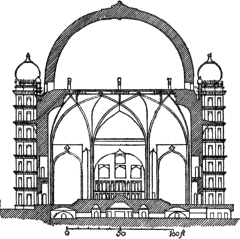
FIG. 85.—TOMB OF MAHMUD, BIJAPUR. SECTION.
The Mohammedan monuments of India are characterized by a grandeur and amplitude of disposition, a symmetry and monumental dignity of design which distinguishes them widely from the picturesque but sometimes trivial buildings of the Arabs and Moors. Less dependent on color than the Moorish or Persian structures, they are usually built of marble, or of marble and sandstone, giving them an air of permanence and solidity wanting in other Moslem styles except the Turkish. The dome, the round minaret, the pointed arch, and the colossal portal-arch, are universal, as in Persia, and enamelled tiles are also used, but chiefly for interior decoration. Externally the more dignified if less resplendent decoration of surface carving is used, in patterns of minute and graceful scrolls, leaf forms, and Arabic inscriptions covering large surfaces. The Arabic stalactite pendentive star-panelling and geometrical interlace are rarely if ever seen. The dome on the square plan is almost universal, but neither the Byzantine nor the Arabic pendentive is used, striking and original combinations of vaulting surfaces, of corner squinches, of corbelling and ribs, being used in its place. Many of the Pathan 148 domes and arches at Delhi, Ajmir, Ahmedabad, Shepree, etc., are built in horizontal or corbelled courses supported on slender columns, and exert no thrust at all, so that they are vaults only in form, like the dome of the Tholos of Atreus (Fig. 24). The most imposing and original of all Indian domes are those of the Jumma Musjid and of the Tomb of Mahmud, both at Bijapur, the latter 137 feet in span (Fig. 85). These two monuments, indeed, with the Mogul Taj Mahal at Agra, not only deserve the first rank among Indian monuments, but in constructive science combined with noble proportions and exquisite beauty are hardly, if at all, surpassed by the greatest triumphs of western art. The Indo-Moslem architects, moreover, especially those of the Mogul period, excelled in providing artistic settings for their monuments. Immense platforms, superb courts, imposing flights of steps, noble gateways, minarets to mark the angles of enclosures, and landscape gardening of a high order, enhance greatly the effect of the great mosques, tombs, and palaces of Agra, Delhi, Futtehpore Sikhri, Allahabad, Secundra, etc.
The most notable monuments of the Moguls are the Mosque of Akbar (1556–1605) at Futtehpore Sikhri, the tomb of that sultan at Secundra, and his palace at Allahabad; the Pearl Mosque at Agra and the Jumma Musjid at Delhi, one of the largest and noblest of Indian mosques, both built by Shah Jehan about 1650; his immense but now ruined palace in the same city; and finally the unrivalled mausoleum, the Taj Mahal at Agra, built during his lifetime as a festal hall, to serve as his tomb after death (Fig. 86). This last is the pearl of Indian architecture, though it is said to have been designed by a European architect, French or Italian. It is a white marble structure 185 feet square, centred in a court 313 feet square, forming a platform 18 feet high. The corners of this court are marked by elegant minarets, and the whole is dominated by 149 the exquisite white marble dome, 58 feet in diameter, 80 feet high, internally rising over four domical corner chapels, and covered externally by a lofty marble bulb-dome on a high drum. The rich materials, beautiful execution, and exquisite inlaying of this mausoleum are worthy of its majestic design. On the whole, in the architecture of the Moguls in Bijapur, Agra, and Delhi, Mohammedan architecture reaches its highest expression in the totality and balance of its qualities of construction, composition, detail, ornament, and settings. The later monuments show the decline of the style, and though often rich and imposing, are lacking in refinement and originality.
TURKISH. The Ottoman Turks, who began their conquering career under Osman I. in Bithynia in 1299, had for a 150 century been occupying the fairest portions of the Byzantine empire when, in 1453, they became masters of Constantinople. Hagia Sophia was at once occupied as their chief mosque, and such of the other churches as were spared, were divided between the victors and the vanquished. The conqueror, Mehmet II., at the same time set about the building of a new mosque, entrusting the design to a Byzantine, Christodoulos, whom he directed to reproduce, with some modifications, the design of the “Great Church”—Hagia Sophia. The type thus officially adopted has ever since remained the controlling model of Turkish mosque design, so far, at least, as general plan and constructive principles are concerned. Thus the conquering Turks, educated by a century of study and imitation of Byzantine models in Brusa, Nicomedia, Smyrna, Adrianople, and other cities earlier subjugated, did what the Byzantines had, during nine centuries, failed to do. The noble idea first expressed by Anthemius and Isidorus in the Church of Hagia Sophia had remained undeveloped, unimitated by later architects. It was the Turk who first seized upon its possibilities, and developed therefrom a style of architecture less sumptuous in color and decoration than the sister styles of Persia, Cairo, or India, but of great nobility and dignity, notwithstanding. The low-curved dome with its crown of buttressed windows, the plain spherical pendentives, the great apses at each end, covered by half-domes and penetrated by smaller niches, the four massive piers with their projecting buttress-masses extending across the broad lateral aisles, the narthex and the arcaded atrium in front—all these appear in the great Turkish mosques of Constantinople. In the Conqueror’s mosque, however, two apses with half-domes replace the lateral galleries and clearstory of Hagia Sophia, making a perfectly quadripartite plan, destitute of the emphasis and significance of a plan drawn on one main axis (Fig. 87). 151 The same treatment occurs in the mosque of Ahmed I., the Ahmediyeh (1608; Fig. 88), and the Yeni Djami (“New Mosque”) at the port (1665). In the mosque of Osman III. (1755) the reverse change was effected; the mosque has no great apses, four clearstories filling the four arches under the dome, as also in several of the later and smaller mosques. The greatest and noblest of the Turkish mosques, the Suleimaniyeh, built in 1553 by Soliman the Magnificent, returned to the Byzantine combination of two half-domes with two clearstories (Fig. 89).
FIG. 87.—MOSQUE OF MEHMET II., CONSTANTINOPLE.
PLAN.
(The dimensions figured in metres.)
In none of these monuments is there the internal magnificence of marble and mosaic of the Byzantine churches. These are only in a measure replaced by Persian tile-wainscoting and stained-glass windows of the Arabic type. The division into stories and the treatment of scale are less well managed than in the Hagia Sophia; on the other hand, the proportion of height to width is generally admirable. The exterior treatment is unique and effective, far superior to the Byzantine practice. The massing of domes and half-domes and roofs is more artistically arranged; and while there is little of that minute carved detail found in Egypt and India, the composition of the lateral arcades, the simple but impressive domical peristyles of the courts, and the graceful forms of the pointed arches, with alternating voussoirs of white and black marble, are artistic in a high degree. The minarets are, however, 152 inferior to those of Indian, Persian, and Arabic art, though graceful in their proportions.
FIG. 88.—EXTERIOR AHMEDIYEH MOSQUE.
Nearly all the great mosques are accompanied by the domical tombs (turbeh) of their imperial founders. Some of these are of noble size and great beauty of proportion and decoration. The Tomb of Roxelana (Khourrem), the favorite wife of Soliman the Magnificent (1553), is the most beautiful of all, and perhaps the most perfect gem of Turkish architecture, with its elegant arcade surrounding the octagonal domical mausoleum-chamber. The monumental fountains of Constantinople also deserve mention. Of these, the one erected by Ahmet III. (1710), near Hagia 153 Sophia, is the most beautiful. They usually consist of a rectangular marble reservoir with pagoda-like roof and broad eaves, the four faces of the fountain adorned each with a niche and basin, and covered with relief carving and gilded inscriptions.
FIG. 89.—INTERIOR OF SULEIMANIYEH,
CONSTANTINOPLE.
PALACES. In this department the Turks have done little of importance. The buildings in the Seraglio gardens are low and insignificant. The Tchinli Kiosque, now the Imperial Museum, is however, a simple but graceful two-storied edifice, consisting of four vaulted chambers in the angles of a fine cruciform hall, with domes treated like those of Bijapur on a small scale; the tiling and the veranda in front are particularly elegant; the design suggests Persian handiwork. The later palaces, designed by Armenians, are picturesque white marble and stucco buildings on the water’s edge; they possess richly decorated halls, but the details are of a debased European rococo style, quite unworthy of an Oriental monarch.
MONUMENTS. Arabian: “Mosque of Omar,” or Dome of the Rock, 638; El Aksah, by ’Abd-el-Melek, 691, both at Jerusalem; Mosque ’Amrou at Cairo, 642; mosques at Cyrene, 665; great mosque of El Walîd, 154 Damascus, 705–717. Bagdad built, 755. Great mosque at Kairouân, 737. At Cairo, Ibn Touloun, 876; Gama-El-Azhar, 971; Barkouk, 1149; “Tombs of Khalîfs” (Karafah), 1250–1400; Moristan Kalaoun, 1284; Medresseh Sultan Hassan, 1356; El Azhar enlarged; El Mûayed, 1415; Kaïd Bey, 1463; Sinan Pacha, 1468; “Tombs of Mamelukes,” 16th century. Also palaces, baths, fountains, mosques, and tombs. Moresque: Mosque at Saragossa, 713; mosque and arsenal at Tunis, 742; great mosque at Cordova, 786, 876, 975; sanctuary, 14th century. Mosques, baths, etc., at Cordova, Tarragona, Segovia, Toledo, 960–980; mosque of Sobeiha at Cordova, 981. Palaces and mosques at Fez; great mosque at Seville, 1172. Extensive building in Morocco close of 12th century. Giralda at Seville, 1160; Alcazars in Malaga and Seville, 1225–1300; Alhambra and Generalife at Granada, 1248, 1279, 1306; also mosques, baths, etc. Yussuf builds palace at Malaga, 1348; palaces at Granada. Persian: Tombs near Bagdad, 786 (?); mosque at Tabriz, 1300; tomb of Khodabendeh at Sultaniyeh, 1313; Meidan Shah (square) and Mesjid Shah (mosque) at Ispahan, 17th century; Medresseh (school) of Sultan Hussein, 18th century; palaces of Chehil Soutoun (forty columns) and Aineh Khaneh (Palace of Mirrors). Baths, tombs, bazaars, etc., at Cashan, Koum, Kasmin, etc. Aminabad Caravanserai between Shiraz and Ispahan; bazaar at Ispahan.
Indian: Mosque and “Kutub Minar” (tower) cir. 1200; Tomb of Altumsh, 1236; mosque at Ajmir, 1211–1236; tomb at Old Delhi; Adina Mosque, Maldah, 1358. Mosques Jumma Musjid and Lal Durwaza at Jaunpore, first half of 15th century. Mosque and bazaar, Kalburgah, 1435 (?). Mosques at Ahmedabad and Sirkedj, middle 15th century. Mosque Jumma Musjid and Tomb of Mahmûd, Bijapur, cir. 1550. Tomb of Humayûn, Delhi; of Mohammed Ghaus, Gwalior; mosque at Futtehpore Sikhri; palace at Allahabad; tomb of Akbar at Secundra, all by Akbar, 1556–1605. Palace and Jumma Musjid at Delhi; Muti Musjid (Pearl mosque) and Taj Mahal at Agra, by Shah Jehan, 1628–1658.
Turkish: Tomb of Osman, Brusa, 1326; Green Mosque (Yeshil Djami) Brusa, cir. 1350. Mosque at Isnik (Nicæa), 1376. Mehmediyeh (mosque Mehmet II.) Constantinople, 1453; mosque at Eyoub; Tchinli Kiosque, by Mehmet II., 1450–60; mosque Bayazid, 1500; Selim I., 1520; Suleimaniyeh, by Sinan, 1553; Ahmediyeh by Ahmet I., 1608; Yeni Djami, 1665; Nouri Osman, by Osman III., 1755; mosque Mohammed Ali in Cairo, 1824. Mosque at Adrianople. Khans, cloistered courts for public business and commercial lodgers, various dates, 16th and 17th centuries (Validé Khan, Vizir Khan), vaulted bazaars, fountains, Seraskierat Tower, all at Constantinople.
CHAPTER XIII.
EARLY MEDIÆVAL ARCHITECTURE
IN ITALY AND FRANCE.
Books Recommended: Cattaneo, L’Architecture en Italie. Chapuy, Le moyen age monumental. Corroyer, Architecture romane. Cummings, A History of Architecture in Italy. Enlart, Manuel d’archéologie française. Hübsch, Monuments de l’architecture chrétienne. Knight, Churches of Northern Italy. Lenoir, Architecture monastique. Osten, Bauwerke in der Lombardei. Quicherat, Mélanges d’histoire et d’archéologie. Reber, History of Mediæval Architecture. Révoil, Architecture romane du midi de la France. Rohault de Fleury, Monuments de Pise. Sharpe, Churches of Charente. De Verneilh, L’Architecture byzantine en France. Viollet-le-Duc, Dictionnaire raisonné de l’architecture française (especially in Vol. I., Architecture religieuse); Discourses on Architecture.
EARLY MEDIÆVAL EUROPE. The fall of the Western Empire in 476 A.D. marked the beginning of a new era in architecture outside of the Byzantine Empire. The so-called Dark Ages which followed this event constituted the formative period of the new Western civilization, during which the Celtic and Germanic races were being Christianized and subjected to the authority and to the educative influences of the Church. Under these conditions a new architecture was developed, founded upon the traditions of the early Christian builders, modified in different regions by Roman or Byzantine influences. For Rome recovered early her antique prestige, and Roman monuments covering the soil of Southern Europe, were a constant 156 object lesson to the builders of that time. To this new architecture of the West, which in the tenth and eleventh centuries first began to achieve worthy and monumental results, the generic name of Romanesque has been commonly given, in spite of the great diversity of its manifestations in different countries.
CHARACTER OF THE ARCHITECTURE. Romanesque architecture was pre-eminently ecclesiastical. Civilization and culture emanated from the Church, and her requirements and discipline gave form to the builder’s art. But the basilican style, which had so well served her purposes in the earlier centuries and on classic soil, was ill-suited to the new conditions. Corinthian columns, marble incrustations, and splendid mosaics were not to be had for the asking in the forests of Gaul or Germany, nor could the Lombards and Ostrogoths in Italy or their descendants reproduce them. The basilican style was complete in itself, possessing no seeds of further growth. The priests and monks of Italy and Western Europe sought to rear with unskilled labor churches of stone in which the general dispositions of the basilica should reappear in simpler, more massive dress, and, as far as possible, in a fireproof construction with vaults of stone. This problem underlies all the varied phases of Romanesque architecture; its final solution was not, however, reached until the Gothic period, to which the Romanesque forms the transition and stepping-stone.
FIG. 90.—INTERIOR OF SAN AMBROGIO, MILAN.
MEDIÆVAL ITALY. Italy in the Dark Ages stood midway between the civilization of the Eastern Empire and the semi-barbarism of the West. Rome, Ravenna, and Venice early became centres of culture and maintained continuous commercial relations with the East. Architecture did not lack either the inspiration or the means for advancing on new lines. But its advance was by no means the same everywhere. The unifying influence of the church was 157 counterbalanced by the provincialism and the local diversities of the various Italian states, resulting in a wide variety of styles. These, however, may be broadly grouped in four divisions: the Lombard, the Tuscan-Romanesque, the Italo-Byzantine, and the unchanged Basilican or Early Christian, which last, as was shown in Chapter X., continued to be practised in Rome throughout the Middle Ages.
FIG. 91.—WEST FRONT AND CAMPANILE
OF CATHEDRAL, PIACENZA.
LOMBARD STYLE. Owing to the general rebuilding of ancient churches under the more settled social conditions of the eleventh and twelfth centuries, little remains to us of the architecture of the three preceding centuries in Italy, except the Roman basilicas and a few baptisteries and circular churches, already mentioned in Chapter X. The so-called Lombard monuments belong mainly to the eleventh and twelfth centuries. They are found not only in Lombardy, but also in Venetia and the Æmilia. Milan, Pavia, Piacenza, Bologna, and Verona were important centres of development of this style. The churches were nearly all vaulted, but the plans were basilican, with such variations 158 as resulted from efforts to meet the exigencies of vaulted construction. The nave was narrowed, and instead of rows of columns carrying a thin clearstory wall, a few massive piers of masonry, connected by broad pier-arches, supported the heavy ribs of the groined vaulting, as in S. Ambrogio, Milan (Fig. 90). To resist the thrust of the main vault, the clearstory was sometimes suppressed, the side aisle carried up in two stories forming galleries, and rows of chapels added at the sides, their partitions forming buttresses. The piers were often of clustered section, the better to receive the various arches and ribs they supported. The vaulting was in square divisions or vaulting-bays, each embracing two pier-arches which met upon an intermediate pier lighter than the others. Thus the whole aspect of the interior was revolutionized. The lightness, spaciousness, and decorative elegance of the basilicas were here exchanged for a sombre and massive dignity severe in its plainness. The Choir was sometimes raised a few feet above the nave, to allow of a crypt and confessio beneath, reached by broad flights of steps from the nave. Sta. 159 Maria della Pieve at Arezzo (9th-11th century), S. Michele at Pavia (late 11th century), the Cathedral of Piacenza (1122), S. Ambrogio at Milan (12th century), and S. Zeno at Verona (1139) are notable monuments of this style.
LOMBARD EXTERIORS. The few architectural embellishments employed on the simple exteriors of the Lombard churches were usually effective and well composed. Slender columnettes or long pilasters, blind arcades, and open arcaded galleries under the eaves gave light and shade to these exteriors. The façades were mere frontispieces with a single broad gable, the three aisles of the church being merely suggested by flat or round pilasters dividing the front (Fig 91). Gabled porches, with columns resting on the backs of lions or monsters, adorned the doorways. The carving was often of a fierce and grotesque character. Detached bell-towers or campaniles adjoined many of these churches; square and simple in mass, but with well-distributed openings and well-proportioned belfries (Piacenza S. Zeno at Verona, etc.).18
THE TUSCAN ROMANESQUE. The churches of this style (sometimes called the Pisan) were less vigorous but more elegant and artistic in design than the Lombard. They were basilicas in plan, with timber ceilings and high clearstories on columnar arcades. In their decoration, both internal and external, they betray the influence of Byzantine traditions, especially in the use of white and colored marble in alternating bands or in panelled veneering. Still more striking is the external decorative application of wall-arcades, sometimes occupying the whole height of the wall and carried on flat pilasters, sometimes in superposed stages of small arches on slender columns standing free of the wall. In general the decorative element prevailed over the constructive in the design of these picturesquely beautiful churches, some of which are of noble size. The Duomo (cathedral) of Pisa, built 1063–1118, is the finest monument 160 of the style (Figs. 92, 93). It is 312 feet long and 118 wide, with long transepts and an elliptical dome of later date over the crossing (the intersection of nave and transepts). Its richly arcaded front and banded flanks strikingly exemplify the illogical and unconstructive but highly decorative methods of the Tuscan Romanesque builders. The circular Baptistery (1153), with its lofty domical central hall surrounded by an aisle, an imposing development of the type established by Constantine (p. 111), and the famous Leaning Tower (1174), both designed with external arcading, combine with the Duomo to form the most remarkable group of ecclesiastical buildings in Italy, if not in Europe (Fig. 92).
FIG. 92.—BAPTISTERY, CATHEDRAL, AND LEANING TOWER, PISA.
The same style appears in more flamboyant shape in 161 some of the churches of Lucca. The cathedral S. Martino (1060; façade, 1204; nave altered in fourteenth century) is the finest and largest of these; S. Michele (façade, 1288) and S. Frediano (twelfth century) have the most elaborately decorated façades. The same principles of design appear in the cathedral and several other churches in Pistoia and Prato; but these belong, for the most part, to the Gothic period.
FIG. 93.—INTERIOR OF PISA CATHEDRAL.
FLORENCE. The church of S. Miniato, in the suburbs of Florence, is a beautiful example of a modification of the Pisan style. It is in plan a basilica with two piers interrupting the colonnade on each side of the nave and supporting powerful transverse arches. The interior is embellished with bands and patterns in black and white, and the woodwork of the open-timber roof is elegantly decorated with fine patterns in red, green, blue, and gold—a treatment common in early mediæval churches, as at Messina, Orvieto, etc. The exterior is adorned with wall-arches of 162 classic design and with panelled veneering in white and dark marble, instead of the horizontal bands of the Pisan churches. This system of external decoration, a blending of Pisan and Italo-Byzantine methods, became the established practice in Florence, lasting through the whole Gothic period. The Baptistery of Florence, originally the cathedral, an imposing polygonal domical edifice of the tenth century, presents externally one of the most admirable examples of this practice. Its marble veneering in black and white, with pilasters and arches of excellent design, is attributed by Vasari to Arnolfo di Cambio, but is by many considered to be much older, although restored by that architect in 1294.
Suggestions of the Pisan arcade system are found in widely scattered examples in the east and south of Italy, mingled with features of Lombard and Byzantine design. In Apulia, as at Bari, Caserta Vecchia (1100), Molfetta (1192), and in Sicily, the Byzantine influence is conspicuous in the use of domes and in many of the decorative details. Particularly is this the case at Palermo and Monreale, where the churches erected after the Norman conquest—some of them domical, some basilican—show a strange but picturesque and beautiful mixture of Romanesque, Byzantine, and Arabic forms. The Cathedral of Monreale and the churches of the Eremiti and La Martorana at Palermo are the most important.
The Italo-Byzantine style has already found mention in the latter part of Chapter XI. Venice and Ravenna were its chief centres; while the influence, both of the parent style and of its Italian offshoot was, as we have just shown, very widespread.
WESTERN ROMANESQUE ARCHITECTURE. In Western Europe the unrest and lawlessness which attended the unsettled relations of society under the feudal system long retarded the establishment of that social order without 163 which architectural progress is impossible. With the eleventh century there began, however, a great activity in building, principally among the monasteries, which represented all that there was of culture and stability amid the prevailing disorder. Undisturbed by war, the only abodes of peaceful labor, learning, and piety, they had become rich and powerful, both in men and land. Probably the more or less general apprehension of the supposed impending end of the world in the year 1000 contributed to this result by driving unquiet consciences to seek refuge in the monasteries, or to endow them richly.
The monastic builders, with little technical training, but with plenty of willing hands, sought out new architectural paths to meet their special needs. Remote from classic and Byzantine models, and mainly dependent on their own resources, they often failed to realize the intended results. But skill came with experience, and with advancing civilization and a surer mastery of construction came a finer taste and greater elegance of design. Meanwhile military architecture developed a new science of building, and covered Europe with imposing castles, admirably constructed and often artistic in design as far as military exigencies would permit.
CHARACTER OF THE STYLE. The Romanesque architecture of the eleventh and twelfth centuries in Western Europe (sometimes called the Round-Arched Gothic) was thus predominantly though not exclusively monastic. This gave it a certain unity of character in spite of national and local variations. The problem which the wealthy orders set themselves was, like that of the Lombard church-builders in Italy, to adapt the basilica plan to the exigencies of vaulted construction. Massive walls, round arches stepped or recessed to lighten their appearance, heavy mouldings richly carved, clustered piers and jamb-shafts, capitals either of the cushion type or imitated from the Corinthian, 164 and strong and effective carving—all these are features alike of French, German, English, and Spanish Romanesque architecture.
THE FRENCH ROMANESQUE. Though monasticism produced remarkable results in France, architecture there did not wholly depend upon the monasteries. Southern Gaul (Provence) was full of classic remains and classic traditions while at the same time it maintained close trade relations with Venice and the East.19 The church of St. Front at Perigueux, built in 1120, reproduced the plan of St. Mark’s with singular fidelity, but without its rich decoration, and with pointed instead of round arches (Figs. 94, 95). The domical cathedral of Cahors (1050–1100), an obvious imitation of S. Irene at Constantinople, and the later and more Gothic Cathedral of Angoulême display a notable advance in architectural skill outside of the monasteries. Among the abbeys, Fontevrault (1101–1119) closely resembles Angoulême, but surpasses it in the elegance of its choir and chapels. In these and a number of other domical churches of the same Franco-Byzantine type in Aquitania, the substitution of the Latin cross in the plan for the Greek cross used in St. Front, evinces the Gallic tendency to work out to their logical end new ideas or new applications of old ones. These striking variations on Byzantine themes might have developed into an independent local style but for the overwhelming 165 tide of Gothic influence which later poured in from the North.
FIG. 95.—INTERIOR OF ST. FRONT, PERIGUEUX.
Meanwhile, farther south (at Arles, Avignon, etc.), classic models strongly influenced the details, if not the plans, of an interesting series of churches remarkable especially for their porches rich with figure sculpture and for their elaborately carved details. The classic archivolt, the Corinthian capital, the Roman forms of enriched mouldings, are evident at a glance in the porches of Notre Dame des Doms at Avignon, of the church of St. Gilles, and of St. Trophime at Arles.
FIG. 96.—PLAN OF NOTRE DAME DU PORT, CLERMONT.
DEVELOPMENT OF VAULTING. It was in Central France, and mainly along the Loire, that the systematic development of vaulted church architecture began. Naves covered with barrel-vaults appear in a number of large churches built during the eleventh and twelfth centuries, with apsidal and transeptal chapels and aisles carried around the apse, as in St. Etienne, Nevers, Notre Dame du Port at Clermont-Ferrand (Fig. 96), and St. Paul at Issoire. The thrust of these ponderous vaults was clumsily resisted by half-barrel vaults over the side-aisles, transmitting the strain to massive side-walls (Fig. 97), or by high side-aisles with transverse barrel or groined vaults over each bay. In either case the clearstory was suppressed—a fact which mattered 166 little in the sunny southern provinces. In the more cloudy North, in Normandy, Picardy, and the Royal Domain, the nave-vault was raised higher to admit of clearstory windows, and its section was in some cases made like a pointed arch, to diminish its thrust, as at Autun. But these eleventh-century vaults nearly all fell in, and had to be reconstructed on new principles. In this work the Clunisians seem to have led the way, as at Cluny (1089) and Vézelay (1100). In the latter church, one of the finest and most interesting French edifices of the twelfth century, a groined vault replaced the barrel-vault, though the oblong plan of the vaulting-bays, due to the nave being wider than the pier-arches, led to somewhat awkward twisted surfaces in the vaulting. But even here the vaults had insufficient lateral buttressing, and began to crack and settle; so that in the great ante-chapel, built thirty years later, the side-aisles were made in two stories, the better to resist the thrust, and the groined vaults themselves were constructed of pointed section. These seem to be the earliest pointed groined vaults in France. It was not till the second half of that century, however (1150–1200), that the flying buttress was combined with such vaults, so as to permit of high clearstories for the better lighting of the nave; and 167 the problem of satisfactorily vaulting an oblong space with a groined vault was not solved until the following century.
FIG. 97.—SECTION OF NOTRE DAME DU PORT, CLERMONT.
ONE-AISLED CHURCHES. In the Franco-Byzantine churches already described (p. 164) this difficulty of the oblong vaulting-bay did not occur, owing to the absence of side-aisles and pier-arches. Following this conception of church-planning, a number of interesting parish churches and a few cathedrals were built in various parts of France in which side-recesses or chapels took the place of side-aisles. The partitions separating them served as abutments for the groined or barrel-vaults of the nave. The cathedrals of Autun (1150) and Langres (1160), and in the fourteenth century that of Alby, employed this arrangement, common in many earlier Provençal churches which have disappeared.
FIG. 98.—A SIX-PART RIBBED VAULT, SHOWING TWO COMPARTMENTS WITH
THE FILLINGS COMPLETE.
a, a, Transverse ribs (doubleaux); b, b, Wall-ribs (formerets);
c, c, Groin-ribs (diagonaux).
(All the ribs are semicircles.)
SIX-PART VAULTING. In the Royal Domain great architectural activity does not appear to have begun until the beginning of the Gothic period in the middle of the twelfth century. But in Normandy, and especially at Caen and Mont St. Michel, there were produced, between 1046 and 1120, some remarkable churches, in which a high clearstory was secured in conjunction with a vaulted nave, by the use of “six-part” vaulting (Fig. 98). This was an awkward expedient, by which a square vaulting-bay was divided into six parts by the groins and by a middle transverse rib, necessitating two narrow skew vaults meeting at 168 the centre. This unsatisfactory device was retained for over a century, and was common in early Gothic churches both in France and Great Britain. It made it possible to resist the thrust by high side-aisles, and yet to open windows above these under the cross-vaults. The abbey churches of St. Etienne (the Abbaye aux Hommes) and Ste. Trinité (Abbaye aux Dames), at Caen, built in the time of William the Conqueror, were among the most magnificent churches of their time, both in size and in the excellence and ingenuity of their construction. The great abbey church of Mont St. Michel (much altered in later times) should also be mentioned here. At the same time these and other Norman churches showed a great advance in their internal composition. A well-developed triforium or subordinate gallery was introduced between the pier-arches and clearstory, and all the structural membering of the edifice was better proportioned and more logically expressed than in most contemporary work.
ARCHITECTURAL DETAILS. The details of French Romanesque architecture varied considerably in the several provinces, according as classic, Byzantine, or local influences prevailed. Except in a few of the Aquitanian churches, the round arch was universal. The walls were heavy and built of rubble between facings of stones of moderate size dressed with the axe. Windows and doors were widely splayed to diminish the obstruction of the massive walls, and were treated with jamb-shafts and recessed arches. These were usually formed with large cylindrical mouldings, richly carved with leaf ornaments, zigzags, billets, and grotesques. Figure-sculpture was more generally used in the South than in the North. The interior piers were sometimes cylindrical, but more often clustered, and where square bays of four-part or six-part vaulting were employed, the piers were alternately lighter and heavier. Each shaft had its independent capital either of the block type or of a form 169 resembling somewhat that of the Corinthian order. During the eleventh century it became customary to carry up to the main vaulting one or more shafts of the compound pier to support the vaulting ribs. Thus the division of the nave into bays was accentuated, while at the same time the horizontal three-fold division of the height by a well-defined triforium between the pier-arches and clearstory began to be likewise emphasized.
VAULTING. The vaulting was also divided into bays by transverse ribs, and where it was groined the groins themselves began in the twelfth century to be marked by groin-ribs. These were constructed independently of the vaulting, and the four or six compartments of each vaulting-bay were then built in, the ribs serving, in part at least, to support the centrings for this purpose. This far-reaching principle, already applied by the Romans in their concrete vaults (see p. 84), appears as a re-discovery, or rather an independent invention, of the builders of Normandy at the close of the eleventh century. The flying buttress was a later invention; in the round-arched buildings of the eleventh and twelfth centuries the buttressing was mainly internal, and was incomplete and timid in its arrangement.
EXTERIORS. The exteriors were on this account plain and flat. The windows were small, the mouldings simple, and towers were rarely combined with the body of the church until after the beginning of the twelfth century. Then they appeared as mere belfries of moderate height, with pyramidal roofs and effectively arranged openings, the germs of the noble Gothic spires of later times. Externally the western porches and portals were the most important features of the design, producing an imposing effect by their massive arches, clustered piers, richly carved mouldings, and deep shadows.
CLOISTERS, ETC. Mention should be made of the other monastic buildings which were grouped around the abbey 170 churches of this period. These comprised refectories, chapter-halls, cloistered courts surrounded by the conventual cells, and a large number of accessory structures for kitchens, infirmaries, stores, etc. The whole formed an elaborate and complex aggregation of connected buildings, often of great size and beauty, especially the refectories and cloisters. Most of these conventual buildings have disappeared, many of them having been demolished during the Gothic period to make way for more elegant structures in the new style. There remain, however, a number of fine cloistered courts in their original form, especially in Southern France. Among the most remarkable of these are those of Moissac, Elne, and Montmajour.
MONUMENTS. Italy. (For basilicas and domical churches of 6th-12th centuries see pp. 118, 119.)—Before 11th century: Sta. Maria at Toscanella, altered 1206; S. Donato, Zara; chapel at Friuli; baptistery at Boella. 11th century: S. Giovanni, Viterbo; Sta. Maria della Pieve, Arezzo; S. Antonio, Piacenza, 1014; Eremiti, 1132, and La Martorana, 1143, both at Palermo; Duomo at Bari, 1027 (much altered); Duomo and baptistery, Novara, 1030; Duomo at Parma, begun 1058; Duomo at Pisa, 1063–1118; S. Miniato, Florence, 1063–12th century; S. Michele at Pavia and Duomo at Modena, late 11th century.—12th century: in Calabria and Apulia, cathedrals of Trani, 1100; Caserta, Vecchia, 1100–1153; Molfetta, 1162; Benevento; churches S. Giovanni at Brindisi, S. Niccolo at Bari, 1139. In Sicily, Duomo at Monreale, 1174–1189. In Northern Italy, S. Tomaso in Limine, Bergamo, 1100 (?); Sta. Giulia, Brescia; S. Lorenzo, Milan, rebuilt 1119; Duomo at Piacenza, 1122; S. Zeno at Verona, 1139; S. Ambrogio, Milan, 1140, vaulted in 13th century; baptistery at Pisa, 1153–1278; Leaning Tower, Pisa, 1174.—14th century: S. Michele, Lucca, 1188; S. Giovanni and S. Frediano, Lucca. In Dalmatia, cathedral at Zara, 1192–1204. Many castles and early town-halls, as at Bari, Brescia, Lucca, etc.
France: Previous to 11th century: St. Germiny-des-Prés, 806, Chapel of the Trinity, St. Honorat-des-Lérins; Ste. Croix de Montmajour.—11th century: Cérisy-la-Forêt and abbey church of Mont St. Michel, 1020 (the latter altered in 12th and 16th centuries); Vignory; St. Genou; porch of St. Bénoit-sur-Loire, 1030; St. Sépulchre at Neuvy, 1045; Ste. Trinité 171 (Abbaye aux Dames) at Caen, 1046, vaulted 1140; St. Etienne (Abbaye aux Hommes) at Caen, same date; St. Front at Perigueux, 1120; Ste. Croix at Quimperlé, 1081; cathedral, Cahors, 1050–1110; abbey churches of Cluny (demolished) and Vézelay, 1089–1100; circular church of Rieux-Mérinville, church of St. Savin in Auvergne, the churches of St. Paul at Issoire and Notre-Dame-du-Port at Clermont, St. Hilaire and Notre-Dame-la-Grande at Poitiers; also St. Sernin (Saturnin) at Toulouse, all at close of 11th and beginning of 12th century.—12th century: Domical churches of Aquitania and vicinity; Solignac and Fontévrault, 1120; St. Etienne (Périgueux), St. Avit-Sénieur; Angoulême, Souillac, Broussac, etc., early 12th century; St. Trophime at Arles, 1110, cloisters later; church of Vaison; abbeys and cloisters at Montmajour, Tarascon, Moissac (with fragments of a 10th-century cloister built into present arcades); St. Paul-du-Mausolée; Puy-en-Vélay, with fine church. Many other abbeys, parish churches, and a few cathedrals in Central and Northern France especially.
18. See Appendix B.
19. See Viollet-le-Duc, Dictionnaire raisonné, article Architecture, vol. i., pp. 66 et seq.; also de Verneilh, L’Architecture byzantine en France.
CHAPTER XIV.
EARLY MEDIÆVAL ARCHITECTURE.—Continued.
IN GERMANY, GREAT BRITAIN, AND SPAIN.
Books Recommended: As before, Hübsch and Reber. Bond, Gothic Architecture in England. Also Brandon, Analysis of Gothic Architecture. Boisserée, Nieder Rhein. Ditchfield, The Cathedrals of England. Hasak, Die romanische und die gotische Baukunst (in Handbuch d. Arch.). Lübke, Die Mittelalterliche Kunst in Westfalen. Möller, Denkmäler der deutschen Baukunst. Puttrich, Baukunst des Mittelalters in Sachsen. Rickman, An Attempt to Discriminate the Styles of Architecture. Scott, English Church Architecture. Van Rensselaer, English Cathedrals.
MEDIÆVAL GERMANY. Architecture developed less rapidly and symmetrically in Germany than in France, notwithstanding the strong centralized government of the empire. The early churches were of wood, and the substitution of stone for wood proceeded slowly. During the Carolingian epoch (800–919), however, a few important buildings were erected, embodying Byzantine and classic traditions. Among these the most notable was the Minster or palatine chapel of Charlemagne at Aix-la-Chapelle, an obvious imitation of San Vitale at Ravenna. It consisted of an octagonal domed hall surrounded by a vaulted aisle in two stories, but without the eight niches of the Ravenna plan. It was preceded by a porch flanked by turrets. The Byzantine type thus introduced was repeated in later churches, as in the Nuns’ Choir at Essen (947) and at Ottmarsheim (1050). In the great monastery at Fulda a basilica with 173 transepts and with an apsidal choir at either end was built in 803. These choirs were raised above the level of the nave, to admit of crypts beneath them, as in many Lombard churches; a practice which, with the reduplication of the choir and apse just mentioned, became very common in German Romanesque architecture.
EARLY CHURCHES. It was in Saxony that this architecture first entered upon a truly national development. The early churches of this province and of Hildesheim (where architecture flourished under the favor of the bishops, as elsewhere under the royal influence) were of basilican plan and destitute of vaulting, except in the crypts. They were built with massive piers, sometimes rectangular, sometimes clustered, the two kinds often alternating in the same nave. Short columns were, however, sometimes used instead of piers, either alone, as at Paulinzelle and Limburg-on-the-Hardt (1024–39), or alternating with piers, as at Hecklingen, Gernrode (958–1050), and St. Godehard at Hildesheim (1133). A triple eastern apse, with apsidal chapels projecting eastward from the transepts, were common elements in the plans, and a second apse, choir, and crypt at the west end were not infrequent. Externally the most striking feature was the association of two, four, or even six square or circular towers with the mass of the church, and the elevation of square or polygonal turrets or cupolas over the crossing. These adjuncts gave a very picturesque aspect to edifices otherwise somewhat wanting in artistic interest.
FIG. 99.—PLAN OF MINSTER AT WORMS.
RHENISH CHURCHES. It was in the Rhine provinces that vaulting was first applied to the naves of German churches, nearly a half century after its general adoption in France. Cologne possesses an 174 interesting trio of churches in which the Byzantine dome on squinches or on pendentives, with three apses or niches opening into the central area, was associated with a long three aisled nave (St. Mary-in-the-Capitol, begun in 9th century; Great St. Martin’s, 1150–70; Apostles’ Church, 1160–99: the naves vaulted later). The double chapel at Schwarz-Rheindorf, near Bonn (1151), also has the crossing covered by a dome on pendentives.
FIG. 100.—ONE BAY OF CATHEDRAL AT SPIRES.
The vaulting of the nave itself was developed in another series of edifices of imposing size, the cathedrals of Mayence (1036), Spires (Speyer), and Worms, and the Abbey of Laach, all built in the 11th century and vaulted early in the 12th. In the first three the main vaulting is in square bays, each covering two bays of the nave, the piers of which are alternately lighter and heavier (Figs. 99, 100). At Laach the vaulting-bays are oblong, both in nave and aisles. There was no triforium gallery, and stability was secured only by excessive thickness in the piers and clearstory walls, and by bringing down the main vault as near to the side-aisle roofs as possible.
RHENISH EXTERIORS. These great churches, together with those of Bonn and Limburg-on-the-Lahn and the cathedral of Treves (Trier, 1047), are interesting, not only by their size and dignity of plan and the somewhat rude massiveness of their construction, but even more so by the picturesqueness 175 of their external design (Fig. 101). Especially successful is the massing of the large and small turrets with the lofty nave-roof and with the apses at one or both ends. The systematic use of arcading to decorate the exterior walls, and the introduction of open arcaded dwarf galleries under the cornices of the apses, gables, and dome-turrets, gave to these Rhenish churches an external beauty hardly equalled in other contemporary edifices. This method of exterior design, and the system of vaulting in square bays over double bays of the nave, were probably derived from the Lombard churches of Northern Italy, with which the Hohenstauffen emperors had many political relations.
FIG. 101.—EAST END OF CHURCH OF THE APOSTLES, COLOGNE.
The Italian influence is also encountered in a number of circular churches of early date, as at Fulda (9th-11th century), Drügelte, Bonn (baptistery, demolished), and in façades like that at Rosheim, which is a copy in little of San Zeno at Verona.
Elsewhere in Germany architecture was in a backward state, especially in the southern provinces. Outside of Saxony, Franconia, and the Rhine provinces, very few works of importance were erected until the thirteenth century.
176SECULAR ARCHITECTURE. Little remains to us of the secular architecture of this period in Germany, if we except the great feudal castles, especially those of the Rhine, which were, after all, rather works of military engineering than of architectural art. The palace of Charlemagne at Aix (the chapel of which was mentioned on p. 172) is known to have been a vast and splendid group of buildings, partly, at least of marble; but hardly a vestige of it remains. Of the extensive Palace of Henry III. at Goslar there remain well-defined ruins of an imposing hall of assembly in two aisles with triple-arched windows. At Brunswick the east wing of the Burg Dankwargerode displays, in spite of modern alterations, the arrangement of the chapel, great hall, two fortified towers, and part of the residence of Henry the Lion. The Wartburg palace (Ludwig III., cir. 1150) is more generally known—a rectangular hall in three stories, with windows effectively grouped to form arcades; while at Gelnhausen and Münzenberg are ruins of somewhat similar buildings. A few of the Romanesque monasteries of Germany have left partial remains, as at Maulbronn, which was almost entirely rebuilt in the Gothic period, and isolated buildings in Cologne and elsewhere. There remain also in Cologne a number of Romanesque private houses with coupled windows and stepped gables.
FIG. 102.—PLAN OF DURHAM CATHEDRAL.
GREAT BRITAIN. Previous to the Norman conquest (1066) there was in the British Isles little or no architecture worthy of mention. The few extant remains of Saxon and Celtic buildings reveal a singular poverty of ideas and want of technical skill. These scanty remains are mostly of towers (those in Ireland nearly all round and tapering, with conical tops, their use and date being the subjects of much controversy) and crypts. The tower of Earl’s Barton is the most important and best preserved of those in England. With the Norman conquest, however, began an extraordinary activity in the building of churches and abbeys. 177 William the Conqueror himself founded a number of these, and his Norman ecclesiastics endeavored to surpass on British soil the contemporary churches of Normandy. The new churches differed somewhat from their French prototypes; they were narrower and lower, but much longer, especially as to the choir and transepts. The cathedrals of Durham (1096–1133) and Norwich (same date) are important examples (Fig. 102). They also differed from the French churches in two important particulars externally; a huge tower rose usually over the crossing, and the western portals were small and insignificant. Lateral entrances near the west end were given greater importance and called Galilees. At Durham a Galilee chapel (not shown in the plan), takes the place of a porch at the west end, like the ante-churches of St. Benoît-sur-Loire and Vézelay.
THE NORMAN STYLE. The Anglo-Norman builders employed the same general features as the Romanesque builders of Normandy, but with more of picturesqueness and less of refinement and technical elegance. Heavy walls, recessed arches, round mouldings, cubic cushion-caps, clustered piers, and in doorways a jamb-shaft for each stepping of the arch were common to both styles. But in England the Corinthian form of capital is rare, its place being taken by simpler forms.
FIG. 103.—ONE BAY OF TRANSEPT, WINCHESTER CATHEDRAL.
NORMAN INTERIORS. The interior design of the larger churches of this period shows a close general analogy to 178 contemporaneous French Norman churches, as appears by comparing the nave of Waltham or Peterboro’ with that of Cérisy-la-Forêt, in Normandy. Although the massiveness of the Anglo-Norman piers and walls plainly suggests the intention of vaulting the nave, this intention seems never to have been carried out except in small churches and crypts. All the existing abbeys and cathedrals of this period had wooden ceilings or were, like Durham, Norwich, and Gloucester, vaulted at a later date. Completed as they were with wooden nave-roofs, the clearstory was, without danger, made quite lofty and furnished with windows of considerable size. These were placed near the outside of the thick wall, and a passage was left between them and a triple arch on the inner face of the wall—a device imitated from the abbeys at Caen. The vaulted side-aisles were low, with disproportionately wide pier-arches, above which was a high triforium gallery under the side-roofs. Thus a nearly equal height was assigned to each of the three stories of the bay, disregarding that subordination of minor to major parts which gives interest to an architectural composition. The piers were quite often round, as at Gloucester, Hereford, and Bristol. Sometimes round piers alternated with clustered piers, as at Durham and Waltham; and in some cases clustered piers alone were employed, as at Peterboro’ and in the transepts of Winchester (Fig. 103).
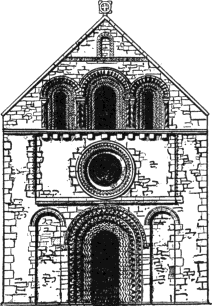
FIG. 104.—FRONT OF IFFLEY CHURCH.
FAÇADES AND DOORWAYS. All the details were of the simplest character, except in the doorways. These were richly adorned with clustered jamb-shafts and elaborately carved 179 mouldings, but there was little variety in the details of this carving. The zigzag was the most common feature, though birds’ heads with the beaks pointing toward the centre of the arch were not uncommon. In the smaller churches (Fig. 104) the doorways were better proportioned to the whole façade than in the larger ones, in which they appear as relatively insignificant features. Very few examples remain of important Norman façades in their original form, nearly all of these having been altered after the round arch was displaced by the pointed arch in the latter part of the twelfth century. Iffley church (Fig. 104) is a good example of the style.
SPAIN. During the Romanesque period a large part of Spain was under Moorish dominion. The capture of Toledo, in 1062, by the Christians, began the gradual emancipation of the country from Moslem rule, and in the northern provinces a number of important churches were erected under the influence of French Romanesque models. The use of domical pendentives (as in the Panteon of S. Isidoro, at Leon, and in the cimborio or dome over the choir at the intersection of nave and transepts in old Salamanca cathedral) was probably derived from the domical churches of Aquitania and Anjou. Elsewhere the northern Romanesque type prevailed under various modifications, with long nave and transepts, a short choir, and a 180 complete chevet with apsidal chapels. The church of St. Iago at Compostella (1078) is the finest example of this class. These churches nearly all had groined vaulting over the side-aisles and barrel-vaults over the nave, the constructive system being substantially that of the churches of Auvergne and the Loire Valley (p. 165). They differed, however, in the treatment of the crossing of nave and transepts, over which was usually erected a dome or cupola or pendentives or squinches, covered externally by an imposing square lantern or tower, as in the Old Cathedral at Salamanca, already mentioned (1120–78) and the Collegiate Church at Toro. Occasional exceptions to these types are met with, as in the basilican wooden-roofed church of S. Millan at Segovia; in S. Isidoro at Leon, with chapels and a later-added square eastern end, and the circular church of the Templars at Segovia.
The architectural details of these Spanish churches did not differ radically from contemporary French work. As in France and England, the doorways were the most ornate parts of the design, the mouldings being carved with extreme richness and the jambs frequently adorned with statues, as in S. Vincente at Avila. There was no such logical and reasoned-out system of external design as in France, and there is consequently greater variety in the façades. Perhaps the most remarkable thing about the architecture of this period is its apparent exemption from the influence of the Moorish monuments which abounded on every hand. This may be explained by the hatred which was felt by the Christians for the Moslems and all their works.
MONUMENTS. Germany: Previous to 11th century: Circular churches of Holy Cross at Münster, and of Fulda; palace chapel of Charlemagne at Aix-la-Chapelle, 804; St. Stephen, Mayence, 990; primitive nave and crypt of St. Gereon, Cologne, 10th century; Lorsch.—11th century: Churches of Gernrode, Goslar, and Merseburg in Saxony; cathedral 181 of Bremen; first restoration of cathedral of Treves (Trier), 1010, west front, 1047; Limburg-on-Hardt, 1024; St. Willibrod, Echternach, 1031; east end of Mayence Cathedral, 1036; Church of Apostles and nave St. Mary-in-Capitol at Cologne, 1036; cathedral of Spires (Speyer) begun 1040; Cathedral Hildesheim, 1061; St. Joseph, Bamberg, 1073; Abbey of Laach, 1093–1156; round churches of Bonn, Drügelte, Nimeguen; cathedrals of Paderborn and Minden.—12th century: Churches of Klus, Paulinzelle, Hamersleben, 1100–1110; Johannisberg, 1130; St. Godehard. Hildesheim, 1133; Worms, the Minster, 1118–83; Jerichau, 1144–60; Schwarz-Rheindorf, 1151; St. Michael, Hildesheim, 1162; Cathedral Brunswick, 1172–94; Lubeck, 1172; also churches of Gaudersheim, Würzburg, St. Matthew at Treves, Limburg-on-Lahn, Sinzig, St. Castor at Coblentz, Diesdorf, Rosheim; round churches of Ottmarsheim and Rippen (Denmark); cathedral of Basle, cathedral and cloister of Zurich (Switzerland).
England: Previous to 11th century: Scanty vestiges of Saxon church architecture, as tower of Earl’s Barton, round towers and small chapels in Ireland.—11th century: Crypt of Canterbury Cathedral, 1070; chapel St. John in Tower of London, 1070; Winchester Cathedral, 1076–93 (nave and choir rebuilt later); Gloucester Cathedral nave, 1089–1100 (vaulted later); Rochester Cathedral nave, west front cloisters, and chapter-house, 1090–1130; Carlisle Cathedral nave, transepts, 1093–1130; Durham Cathedral, 1095–1133, vaulted 1233; Galilee and chapter-house, 1133–53; Norwich Cathedral, 1096, largely rebuilt 1118–93; Hereford Cathedral, nave and choir, 1099–1115.—12th century: Ely Cathedral, nave, 1107–33; St. Alban’s Abbey, 1116; Peterboro’ Cathedral, 1117–45; Waltham Abbey, early 12th century; Church of Holy Sepulchre, Cambridge, 1130–35; Worcester Cathedral chapter-house, 1140 (?); Oxford Cathedral (Christ Church), 1150–80; Bristol Cathedral chapter-house (square), 1155; Canterbury Cathedral, choir of present structure by William of Sens, 1175; Chichester Cathedral, 1180–1204; Romsey Abbey, late 12th century; St. Cross Hospital near Winchester, 1190 (?). Many more or less important parish churches in various parts of England.
Spain. For principal monuments of 9th-12th centuries, see text, latter part of this chapter.
CHAPTER XV.
GOTHIC ARCHITECTURE.
Books Recommended: Adamy, Architektonik des gotischen Stils. Corroyer, L’Architecture gothique. Enlart, Manuel d’archéologie française. Hasak, Einzelheiten des Kirchenbaues (in Hdbuch d. Arch.). Moore, Development and Character of Gothic Architecture. Parker, Introduction to Gothic Architecture. Scott, Mediæval Architecture. Viollet-le-Duc, Discourses on Architecture; Dictionnaire raisonné de l’architecture française.
INTRODUCTORY. The architectural styles which were developed in Western Europe during the period extending from about 1150 to 1450 or 1500, received in an unscientific age the wholly erroneous and inept name of Gothic. This name has, however, become so fixed in common usage that it is hardly possible to substitute for it any more scientific designation. In reality the architecture to which it is applied was nothing more than the sequel and outgrowth of the Romanesque, which we have already studied. Its fundamental principles were the same; it was concerned with the same problems. These it took up where the Romanesque builders left them, and worked out their solution under new conditions, until it had developed out of the simple and massive models of the early twelfth century the splendid cathedrals of the thirteenth and fourteenth centuries in England, France, Germany, the Low Countries and Spain.
THE CHURCH AND ARCHITECTURE. The twelfth century was an era of transition in society, as in architecture. The ideas of Church and State were becoming more clearly defined in the common mind. In the conflict between feudalism 183 and royalty the monarchy was steadily gaining ground. The problem of human right was beginning to present itself alongside of the problem of human might. The relations between the crown, the feudal barons, the pope, bishops, and abbots, differed widely in France, Germany, England, and other countries. The struggle among them for supremacy presented itself, therefore, in varied aspects; but the general outcome was essentially the same. The church began to appear as something behind and above abbots, bishops, kings, and barons. The supremacy of the papal authority gained increasing recognition, and the episcopacy began to overshadow the monastic institutions; the bishops appearing generally, but especially in France, as the champions of popular rights. The prerogatives of the crown became more firmly established, and thus the Church and the State emerged from the social confusion as the two institutions divinely appointed for the government of men.
FIG. 105.—CONSTRUCTIVE SYSTEM OF GOTHIC CHURCH,
ILLUSTRATING PRINCIPLES OF ISOLATED SUPPORTS AND BUTTRESSING.
Under these influences ecclesiastical architecture advanced with rapid strides. No longer hampered by monastic restrictions, it called into its service the laity, whose guilds of masons and builders carried from one diocese to another their constantly increasing stores of constructive 184 knowledge. By a wise division of labor, each man wrought only such parts as he was specially trained to undertake. The master-builder—bishop, abbot, or mason—seems to have planned only the general arrangement and scheme of the building, leaving the precise form of each detail to be determined as the work advanced, according to the skill and fancy of the artisan to whom it was intrusted. Thus was produced that remarkable variety in unity of the Gothic cathedrals; thus, also, those singular irregularities and makeshifts, those discrepancies and alterations in the design, which are found in every great work of mediæval architecture. Gothic architecture was constantly changing, attacking new problems or devising new solutions of old ones. In this character of constant flux and development it contrasts strongly with the classic styles, in which the scheme and the principles were easily fixed and remained substantially unchanged for centuries.
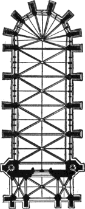
FIG. 106.—PLAN OF SAINTE CHAPELLE, PARIS, SHOWING SUPPRESSION OF
SIDE-WALLS.
STRUCTURAL PRINCIPLES. The pointed arch, so commonly regarded as the most characteristic feature of the Gothic styles, was merely an incidental feature of their development. What really distinguished them most strikingly was the systematic application of two principles which the Roman and Byzantine builders had recognized and applied, but which seem to have been afterward forgotten until they were revived by the later Romanesque architects. The first of these was the concentration of strains upon isolated points of support, made possible by the substitution 185 of groined for barrel vaults. This led to a corresponding concentration of the masses of masonry at these points; the building was constructed as if upon legs (Fig. 105). The wall became a mere filling-in between the piers or buttresses, and in time was, indeed, practically suppressed, immense windows filled with stained glass taking its place. This is well illustrated in the Sainte Chapelle at Paris, built 1242–47 (Figs. 106, 122). In this remarkable edifice, a series of groined vaults spring from slender shafts built against deep buttresses which receive and resist all the thrusts. The wall-spaces between them are wholly occupied by superb windows filled with stone tracery and stained glass. It would be impossible to combine the materials used more scientifically or effectively. The cathedrals of Gerona (Spain) and of Alby (France; Fig. 123) illustrate the same principle, though in them the buttresses are internal and serve to separate the flanking chapels.
FIG. 107.—EARLY GOTHIC FLYING BUTTRESS.
The second distinctive principle of Gothic architecture was that of balanced thrusts. In Roman buildings the thrust of the vaulting was resisted wholly by the inertia of mass in the abutments. In Gothic architecture thrusts were as far as possible resisted by counter-thrusts, and the final resultant pressure was transmitted by flying half-arches across the intervening portions of the structure to external buttresses placed at convenient points. This combination 186 of flying half-arches and buttresses is called the flying-buttress (Fig. 107). It reached its highest development in the thirteenth and fourteenth centuries in the cathedrals of central and northern France.
RIBBED VAULTING. These two principles formed the structural basis of the Gothic styles. Their application led to the introduction of two other elements, second only to them in importance, ribbed vaulting and the pointed arch.
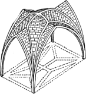
FIG. 108.—RIBBED VAULT, ENGLISH TYPE, WITH DIVIDED GROIN-RIBS AND
RIDGE-RIBS.
The first of these resulted from the effort to overcome certain practical difficulties encountered in the building of large groined vaults. As ordinarily constructed, a groined vault like that in Fig. 47, must be built as one structure, upon wooden centrings supporting its whole extent. The Romanesque architects conceived the idea of constructing an independent skeleton of ribs. Two of these were built against the wall (wall-ribs), two across the nave (transverse ribs); and two others were made to coincide with the groins (Figs. 98, 108). The groin-ribs, intersecting at the centre of the vault, divided each bay into four triangular portions, or compartments, each of which was really an independent vault which could be separately constructed upon light centrings supported by the groin-ribs themselves. This principle, though identical in essence with the Roman system of brick skeleton-ribs for concrete vaults, was, in application and detail, superior to it, both from the scientific and artistic point of view. The ribs, richly moulded, became, in the hands of the Gothic architects, important decorative features. In practice the builder gave to each set of ribs independently the curvature he desired. The vaulting-surfaces were then easily twisted or warped so as to fit the 187 various ribs, which, being already in place, served as guides for their construction.
FIG. 109.—PENETRATIONS AND INTERSECTIONS OF VAULTS.
a, a, Penetrations by small semi-circular vaults sprung from same level. b, Intersection by small semi-circular vault sprung from higher level; groins form wavy lines. c, Intersection by narrow pointed vault sprung from same level; groins are plane curves.
THE POINTED ARCH was adopted to remedy the difficulties encountered in the construction of oblong vaults. It is obvious that where a narrow semi-cylindrical vault intersects a wide one, it produces either what are called penetrations, as at a (Fig. 109), or intersections like that at b, both of which are awkward in aspect and hard to construct. If, however, one or both vaults be given a pointed section, the narrow vault may be made as high as the wide one. It is then possible, with but little warping of the vaulting surfaces, to make them intersect in groins c, which are vertical plane curves instead of wavy loops like a and b.
The Gothic architects availed themselves to the full of these two devices. They built their groin-ribs of semi-circular or pointed form, but the wall-ribs and the transverse ribs were, without exception, pointed arches of such curvature as would bring the apex of each nearly or quite to the level of the groin intersection. The pointed arch, thus introduced as the most convenient form for the vaulting-ribs, was soon applied to other parts of the structure. This was a necessity with the windows and pier-arches, which would not otherwise fit well the wall-spaces under the wall-ribs of the nave and aisle vaulting.
FIG. 110.—PLATE TRACERY, CHARLTON-ON-OXMORE.
TRACERY AND GLASS. With the growth in the size of the windows and the progressive suppression of the lateral walls 188 of vaulted structures, stained glass came more and more generally into use. Its introduction not only resulted in a notable heightening and enriching of the colors and scheme of the interior decoration, but reacted on the architecture, intensifying the very causes which led to its introduction. It stimulated the increase in the size of windows, and the suppression of the walls, and contributed greatly to the development of tracery. This latter feature was an absolute necessity for the support of the glass. Its evolution can be traced (Figs, 110, 111, 112) from the simple coupling of twin windows under a single hood-mould, or discharging arch, to the florid net-work of the fifteenth century. In its earlier forms it consisted merely of decorative openings, circles, and quatrefoils, pierced through slabs of stone (plate-tracery), filling the window-heads over coupled windows. Later attention was bestowed upon the form of the stonework, which was made lighter and richly moulded (bar-tracery), rather than upon that of the openings (Fig. 111). Then the circular and geometric patterns employed were abandoned for more flowing and capricious designs (Flamboyant tracery, Fig. 112) or (in England) for more rigid and rectangular arrangements (Perpendicular, Fig. 134). It will be shown later that the periods and styles of Gothic architecture are more easily identified by the tracery than by any other feature.
CHURCH PLANS. The original basilica-plan underwent radical modifications during the 12th-15th centuries. These resulted in part from the changes in construction 189 which have been described, and in part from altered ecclesiastical conditions and requirements. Gothic church architecture was based on cathedral design; and the requirements of the cathedral differed in many respects from those of the monastic churches of the preceding period.
FIG. 111.—BAR TRACERY, ST. MICHAEL’S, WARFIELD.
The most important alterations in the plan were in the choir and transepts. The choir was greatly lengthened, the transepts often shortened. The choir was provided with two and often four side-aisles, and one or both of these was commonly carried entirely around the apsidal termination of the choir, forming a single or double ambulatory. This combination of choir, apse, and ambulatory was called, in French churches, the chevet.
Another advance upon Romanesque models was the multiplication of chapels—a natural consequence of the more popular character of the cathedral as compared with the abbey. Frequently lateral chapels were built at each bay of the side-aisles, filling up the space between the deep buttresses, flanking the nave as well as the choir. They were also carried around the chevet in most of the French cathedrals (Paris, Bourges, Reims, Amiens, Beauvais, and many others); in many of those in Germany (Magdeburg, Cologne, Frauenkirche at Treves), Spain (Toledo, Leon, Barcelona, 190 Segovia, etc.), and Belgium (Tournay, Antwerp). In England the choir had more commonly a square eastward termination. Secondary transepts occur frequently, and these peculiarities, together with the narrowness and great length of most of the plans, make of the English cathedrals a class by themselves.
FIG. 112.—ROSE WINDOW, CHURCH OF ST. OUEN, ROUEN.
PROPORTIONS AND COMPOSITION. Along with these modifications of the basilican plan should be noticed a great increase in the height and slenderness of all parts of the structure. The lofty clearstory, the arcaded triforium-passage or gallery beneath it, the high pointed pier-arches, the multiplication of slender clustered shafts, and the reduction in the area of the piers, gave to the Gothic churches an interior aspect wholly different from that of the simpler, lower, and more massive Romanesque edifices. The perspective effects of the plans thus modified, especially of the complex choir and chevet with their lateral and radial chapels, were remarkably enriched and varied.
The exterior was even more radically transformed by these changes, and by the addition of towers and spires to the fronts, and sometimes to the transepts and to their intersection with the nave. The deep buttresses, terminating in pinnacles, the rich traceries of the great lateral windows, the triple portals profusely sculptured, rose-windows of great size under the front and transept gables, combined to produce 191 effects of marvellously varied light and shadow, and of complex and elaborate structural beauty, totally unlike the broad simplicity of the Romanesque exteriors.
FIG. 113.—FLAMBOYANT DETAIL FROM PULPIT IN STRASBURG
CATHEDRAL.
DECORATIVE DETAIL. The mediæval designers aimed to enrich
every constructive feature with the most effective play of lights and
shades, and to embody in the decorative detail the greatest possible
amount of allegory and symbolism, and sometimes of humor besides. The
deep jambs and soffits of doors and pier-arches were moulded with a rich
succession of hollow and convex members, and adorned with carvings of
saints, apostles, martyrs, and angels. Virtues and vices, allegories of
reward and punishment, and an extraordinary world of monstrous and
grotesque beasts, devils, and goblins filled the capitals and
door-arches, peeped over tower-parapets, or leered and grinned from
gargoyles and corbels. Another source of decorative detail was the
application of tracery like that of the windows to wall-panelling, to
balustrades, to open-work gables, to spires, to choir-screens, and other
features, especially in
192
the late fourteenth and fifteenth centuries (cathedrals of York, Rouen,
Cologne; Henry VII.’s Chapel, Westminster). And finally in the carving
of capitals and the ornamentation of mouldings the artists of the
thirteenth century and their successors abandoned completely the classic
models and traditions which still survived in the early twelfth
century. The later monastic builders began to look
directly to nature for suggestions of decorative form. The lay builders
who sculptured the capitals and crockets and finials of the early Gothic
cathedrals adopted and followed to its finality this principle of
recourse to nature, especially to plant life. At first the budding
shoots of early spring were freely imitated or skilfully
conventionalized, as being by their thick and vigorous forms the best
adapted for translation into stone (Fig. 114). During the thirteenth
century the more advanced stages of plant growth, and leaves more
complex and detailed, furnished the models for the carver, who displayed
his skill in a closer and more literal imitation of their minute
veinings and indentations (Fig. 115).
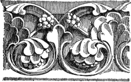
FIG. 114.—EARLY GOTHIC CARVING.
This artistic adaptation of natural forms to architectural decoration
degenerated later into a minutely realistic copying of natural foliage,
in which cleverness of execution took the place of original invention.
The spirit of display is characteristic of all late Gothic work.
Slenderness, minuteness of detail, extreme complexity and intricacy of
design, an unrestrained profusion of decoration covering every surface,
a lack of largeness and vigor in the conceptions, are conspicuous
traits of Gothic design in the fifteenth century,
193
alike in France, England, Germany, Spain, and the Low Countries. Having
worked out to their conclusion the structural principles bequeathed to
them by the preceding centuries, the authors of these later works seemed
to have devoted themselves to the elaboration of mere decorative detail,
and in technical finish surpassed all that had gone before (Fig.
113).
FIG. 115.—CARVING, DECORATED PERIOD, FROM SOUTHWELL MINSTER.
CHARACTERISTICS SUMMARIZED. In the light of the preceding explanations Gothic architecture may be defined as that system of structural design and decoration which grew up out of the effort to combine, in one harmonious and organic conception, the basilican plan with a complete and systematic construction of groined vaulting. Its development was controlled throughout by considerations of stability and structural propriety, but in the application of these considerations the artistic spirit was allowed full scope for its exercise. Refinement, good taste, and great fertility of imagination characterize the details and ornaments of Gothic structures. While the Greeks in harmonizing the requirements of utility and beauty in architecture approached the problem from the æsthetic side, the Gothic architects did the same from the structural side. Their admirably reasoned structures express as perfectly the idea of vastness, mystery, and complexity as do the Greek temples that of simplicity and monumental repose.
194The excellence of Gothic architecture lay not so much in its individual details as in its perfect adaptation to the purposes for which it was developed—its triumphs were achieved in the building of cathedrals and large churches. In the domain of civil and domestic architecture it produced nothing comparable with its ecclesiastical edifices, because it was the requirements of the cathedral and not of the palace, town-hall, or dwelling, that gave it its form and character.
PERIODS. The history of Gothic architecture is commonly divided into three periods, which are most readily distinguished by the character of the window-tracery. These periods were not by any means synchronous in the different countries; but the order of sequence was everywhere the same. They are here given, with a summary of the characteristics of each.
Early Pointed Period. [Early French; Early English or Lancet Period in England; Early German, etc.] Simple groined vaults; general simplicity and vigor of design and detail; conventionalized foliage of small plants; plate tracery, and narrow windows coupled under pointed arch with circular foiled openings in the window-head. (In France, 1160 to 1275.)
Middle Pointed Period. [Rayonnant in France; Decorated or Geometric in England.] Vaults more perfect; in England multiple ribs and liernes; greater slenderness and loftiness of proportions; decoration much richer, less vigorous; more naturalistic carving of mature foliage; walls nearly suppressed, windows of great size, bar tracery with slender moulded or columnar mullions and geometric combinations (circles and cusps) in window-heads, circular (rose) windows. (In France, 1275 to 1375.)
Florid Gothic Period. [Flamboyant in France; Perpendicular in England.] Vaults of varied and richly decorated design; fan-vaulting and pendants in England, vault-ribs 195 curved into fanciful patterns in Germany and Spain; profuse and minute decoration and cleverness of technical execution substituted for dignity of design; highly realistic carving and sculpture, flowing or flamboyant tracery in France; perpendicular bars with horizontal transoms and four-centred arches in England; “branch-tracery” in Germany. (In France, 1375 to 1525.)
196CHAPTER XVI.
GOTHIC ARCHITECTURE IN FRANCE.
Books Recommended: As before, Adamy, Corroyer, Enlart, Hasak, Moore, Reber, Viollet-le-Duc.20 Also Chapuy, Le moyen age monumental. Chateau, Histoire et caractères de l’architecture française. Davies, Architectural Studies in France. Ferree, The Chronology of the Cathedral Churches of France. Johnson, Early French Architecture. King, The Study book of Mediæval Architecture and Art. Lassus and Viollet-le-Duc, Notre Dame de Paris. Nesfield, Specimens of Mediæval Architecture. Pettit, Architectural Studies in France.
CATHEDRAL-BUILDING IN FRANCE. In the development of the principles outlined in the foregoing chapter the church-builders of France led the way. They surpassed all their contemporaries in readiness of invention, in quickness and directness of reasoning, and in artistic refinement. These qualities were especially manifested in the extraordinary architectural activity which marked the second half of the twelfth century and the first half of the thirteenth. This was the great age of cathedral-building in France. The adhesion of the bishops to the royal cause, and their position in popular estimation as the champions of justice and human rights, led to the rapid advance of the episcopacy in power and influence. The cathedral, as the throne-church of the bishop, became a truly popular institution. New cathedrals were founded on every side, especially in the 197 Royal Domain and the adjoining provinces of Normandy, Burgundy, and Champagne, and their construction was warmly seconded by the people, the communes, and the municipalities. “Nothing to-day,” says Viollet-le-Duc,21 “unless it be the commercial movement which has covered Europe with railway lines, can give an idea of the zeal with which the urban populations set about building cathedrals; . . . a necessity at the end of the twelfth century because it was an energetic protest against feudalism.” The collapse of the unscientific Romanesque vaulting of some of the earlier cathedrals and the destruction by fire of others stimulated this movement by the necessity for their immediate rebuilding. The entire reconstruction of the cathedrals of Bayeux, Bayonne, Cambray, Evreux, Laon, Lisieux, Le Mans, Noyon, Poitiers, Senlis, Soissons, and Troyes was begun between 1130 and 1200.22 The cathedrals of Bourges, Chartres, Paris, and Tours, and the abbey of St. Denis, all of the first importance, were begun during the same period, and during the next quarter-century those of Amiens, Auxerre, Rouen, Reims, Séez, and many others. After 1250 the movement slackened and finally ceased. Few important cathedrals were erected during the latter half of the thirteenth century, the chief among them being at Beauvais (actively begun 1247), Clermont, Coutances, Limoges, Narbonne, and Rodez. During this period, and through the fourteenth and fifteenth centuries, French architecture was concerned rather with the completion and remodelling of existing cathedrals than the founding of new ones. There were, however, many important parish churches and civil or domestic edifices erected within this period.
STRUCTURAL DEVELOPMENT: VAULTING. By the middle of the twelfth century the use of barrel-vaulting over the nave had been generally abandoned and groined vaulting with 198 its isolated points of support and resistance had taken its place. The timid experiments of the Clunisian architects at Vézelay in the use of the pointed arch and vault-ribs also led, in the second half of the twelfth century, to far-reaching results. The builders of the great Abbey Church of St. Denis, near Paris, begun in 1140 by the Abbot Suger, appear to have been the first to develop these tentative devices into a system. In the original choir of this noble church all the arches, alike of the vault-ribs (except the groin-ribs, which were semi-circles) and of the openings, were pointed and the vaults were throughout constructed with cross-ribs, wall-ribs, and groin-ribs. Of this early work only the chapels remain. In other contemporary monuments, as for instance in the cathedral of Sens, the adoption of these devices was only partial and hesitating.
FIG. 116.—PLAN OF NOTRE DAME, PARIS.
NOTRE DAME AT PARIS. The next great step in advance was taken in the cathedral of Notre Dame23 at Paris (Figs. 116, 117, 125). This was begun, under Maurice de Sully in 1163, on the site of the twin cathedrals of Ste. Marie and St. Étienne, and the choir was, as usual, the first portion erected. By 1196 the choir, transepts, and one or two bays of the nave were substantially finished. The completeness, harmony, and vigor of conception of this remarkable church contrast strikingly with the makeshifts and hesitancy displayed in many contemporary monuments 199 in other provinces. The difficult vaulting over the radiating bays of the double ambulatory was here treated with great elegance. By doubling the number of supports in the exterior circuit of each aisle (Fig. 116) each trapezoidal bay of the vaulting was divided into three easily managed triangular compartments. Circular shafts were used between the central and side aisles. The side aisles were doubled and those next the centre were built in two stories, providing ample galleries behind a very open triforium. The nave was unusually lofty and covered with six-part vaults of admirable execution. The vault-ribs were vigorously moulded and each made to spring from a distinct vaulting-shaft, of which three rested upon the cap of each of the massive piers below (Fig. 117). The Cathedral of Bourges, begun 1190, closely resembled that of Paris in plan. Both were designed to accommodate vast throngs in their exceptionally broad central aisles and double side aisles, but Bourges has no side-aisle galleries, though the inner aisles are much loftier than the outer ones. Though 200 later in date the vaulting of Bourges is inferior to that of Notre Dame, especially in the treatment of the trapezoidal bays of the ambulatory.
FIG. 117.—INTERIOR OF NOTRE DAME, PARIS.
The masterly examples set by the vault-builders of St. Denis and Notre Dame were not at once generally followed. Noyon, Senlis, and Soissons, contemporary with these, are far less completely Gothic in style. At Le Mans the groined vaulting which in 1158 was substituted for the original barrel-vault of the cathedral is of very primitive design, singularly heavy and awkward, although nearly contemporary with that of Notre Dame (Fig. 118).
FIG. 118.—LE MANS CATHEDRAL. NAVE.
DOMICAL GROINED VAULTING. The builders of the South and West, influenced by Aquitanian models, adhered to the square plan and domical form of vaulting-bay, even after they had begun to employ groin-ribs. The latter, as at first used by them in imitation of Northern examples, had no organic function in the vault, which was still built like a dome. About 1145–1160 the cathedral of St. Maurice at Angers was vaulted with square, groin-ribbed vaults, domical in form but not in construction. The joints no longer described horizontal circles as in a dome, but oblique lines perpendicular to the groins and meeting in zigzag lines at the ridge (Fig. 119). This method became common in the West and was afterward generally adopted 201 by the English architects. The Cathedrals of Poitiers (1162) and Laval (La Trinité, 1180–1185) are examples of this system, which at Le Mans met with the Northern system and produced in the cathedral the awkward compromise described above.
FIG. 119.—GROINED VAULT WITH ZIG-ZAG RIDGE-JOINTS.
a shows a small section of filling with courses parallel to the ridge, for comparison with the other compartments.
THIRTEENTH-CENTURY VAULTING. Early in the thirteenth century the church-builders of Northern France abandoned the use of square vaulting-bays and six-part vaults. By the adoption of groin-ribs and the pointed arch, the building of vaults in oblong bays was greatly simplified. Each bay of the nave could now be covered with its own vaulting-bay, thus doing away with all necessity for alternately light and heavy piers. It is not quite certain when and where this system was first adopted for the complete vaulting of a church. It is, however, probable that the Cathedral of Chartres, begun in 1194 and completed before 1240, deserves this distinction, although it is possible that the vaults of Soissons and Noyon may slightly antedate it. Troyes (1170–1267), Rouen (1202–1220), Reims (1212–1242), Auxerre (1215–1234, nave fourteenth century), Amiens (1220–1288), and nearly all the great churches and chapels begun after 1200, employ the fully developed oblong vault.
BUTTRESSING. Meanwhile the increasing height of the clearstories and the use of double aisles compelled the bestowal of especial attention upon the buttressing. The nave and choir of Chartres, the choirs of Notre Dame, 202 Bourges, Rouen, and Reims, the chevet and later the choir of St. Denis, afford early examples of the flying-buttress (Fig. 107). These were at first simple and of moderate height. Single half-arches spanned the side aisles; in Notre Dame they crossed the double aisles in a single leap. Later the buttresses were given greater stability by the added weight of lofty pinnacles. An intermediate range of buttresses and pinnacles was built over the intermediate piers where double aisles flanked the nave and choir, thus dividing the single flying arch into two arches. At the same time a careful observation of statical defects in the earlier examples led to the introduction of subordinate arches and of other devices to stiffen and to beautify the whole system. At Reims and Amiens these features received their highest development, though later examples are frequently much more ornate.
FIG. 120.—ONE BAY, ABBEY OF ST. DENIS.
INTERIOR DESIGN. The progressive change outlined in the last chapter, by which the wall was practically suppressed, the windows correspondingly enlarged, and every part of the structure made loftier and more slender, resulted in the evolution of a system of interior design well represented by the nave of Amiens. The second story or gallery over the side aisle disappeared, but the aisle itself was very high. The triforium was no longer a gallery, but a richly arcaded passage in the thickness of the wall, corresponding to the roofing-space over the aisle, and generally treated like a lower stage of the clearstory. Nearly the whole space above it was occupied in each bay by the vast clearstory window filled with simple but effective geometric tracery over slender mullions. The side aisles were lighted by windows which, like those in the clearstory, occupied nearly the whole available wall-space under the vaulting. The piers and shafts were all clustered and remarkably slender. The whole construction of this vast edifice, which covers nearly eighty thousand square feet, is a marvel of 203 lightness, of scientific combinations, and of fine execution. Its great vault rises to a height of one hundred and forty feet. The nave of St. Denis, though less lofty, resembles it closely in style (Fig. 120). Earlier cathedrals show less of the harmony of proportion, the perfect working out of the relation of all parts of the composition of each bay, so conspicuous in the Amiens type, which was followed in most of the later churches.
WINDOWS: TRACERY. The clearstory windows of Noyon, Soissons, Sens, and the choir of Vézelay (1200) were simple arched openings arranged singly, in pairs, or in threes. In the cathedral of Chartres (1194–1220) they consist of two arched windows with a circle above them, forming a sort of plate tracery under a single arch. In the chapel windows of the choir at Reims (1215) the tracery of mullions and circles was moulded inside and out, and the intermediate triangular spaces all pierced and glazed. Rose windows were early used in front and transept façades. During the thirteenth and fourteenth centuries they were made of vast size and great lightness of tracery, as in the transepts of Notre Dame (1257) and the west front of Amiens (1288). From the design of these windows is derived the name Rayonnant, often applied to the French Gothic style of the period 1275–1375.
FIG. 121.—THE STE. CHAPELLE, PARIS.
THE SAINTE CHAPELLE. In this beautiful royal chapel at Paris, built 1242–47, Gothic design was admirably exemplified in the noble windows 15 by 50 feet in size, which perhaps furnished the models for those of Amiens and St. 204 Denis. Each was divided by slender mullions into four lancet-like lights gathered under the rich tracery of the window-head. They were filled with stained glass of the most brilliant but harmonious hues. They occupy the whole available wall-space, so that the ribbed vault internally seems almost to rest on walls of glass, so slender are the visible supports and so effaced by the glow of color in the windows. Certainly lightness of construction and the suppression of the wall-masonry could hardly be carried further than here (Fig. 121). Among other chapels of the same type are those in the palace of St. Germain-en-Laye (1240), and a later example in the château of Vincennes, begun by Charles VI., but not finished till 1525.
FIG. 122.—PLAN OF AMIENS CATHEDRAL.
PLANS. The most radical change from the primitive basilican type was, as already explained in the last chapter, the continuation of the side aisles around the apse to form a chevet; and later, the addition of chapels between the external buttresses. Radiating chapels, usually semi-octagons or semi-decagons in plan, early appeared as additions to the chevet (Fig. 122). These may have originated in the apsidal chapels of Romanesque churches in Auvergne and the South, as at Issoire, Clermont-Ferrand, Le Puy, and Toulouse. 205 They generally superseded the transept-chapels of earlier churches, and added greatly to the beauty of the interior perspective, especially when the encircling aisles of the chevet were doubled. Notre Dame, as at first erected, had a double ambulatory, but no chapels. Bourges has only five very small semicircular chapels. Chartres (choir 1220) and Le Mans, as reconstructed about the same date, have double ambulatories and radial chapels. After 1220 the second ambulatory no longer appears. Noyon, Soissons, Reims, Amiens, Troyes, and Beauvais, Tours, Bayeux, and Coutances, Clermont, Limoges, and Narbonne all have the single ambulatory and radiating chevet-chapels. The Lady-chapel in the axis of the church was often made longer and more important than the other chapels, as at Amiens, Le Mans, Rouen, Bayeux, and Coutances. Chapels also flanked the choir in most of the cathedrals named above, and Notre Dame and Tours also have side chapels to the nave. The only cathedrals with complete double side aisles alike to nave, choir, and chevet, were Notre Dame and Bourges. It is somewhat singular that the German cathedral of Cologne is the only one in which all these various characteristic French features were united in one design (see Fig. 140).
FIG. 123.—PLAN OF
CATHEDRAL OF ALBY.
Local considerations had full sway in France, in spite of the tendency toward unity of type. Thus Dol, Laon, and Poitiers have square eastward terminations; Châlons has no ambulatory; Bourges no transept. In Notre Dame the transept was almost suppressed. At Soissons one transept, at Noyon both, had semicircular ends. Alby, a late cathedral of brick, 206 founded in 1280, but mostly built during the fourteenth century, has neither side aisles nor transepts, its wide nave being flanked by chapels separated by internal buttresses (Fig. 123).
SCALE. The French cathedrals were nearly all of imposing dimensions. Noyon, one of the smallest, is 333 feet long; Sens measures 354. Laon, Bourges, Troyes, Notre Dame, Le Mans, Rouen, and Chartres vary from 396 to 437 feet in extreme length; Reims measures 483, and Amiens, the longest of all, 521 feet. Notre Dame is 124 feet wide across the five aisles of the nave; Bourges, somewhat wider. The central aisles of these two cathedrals, and of Laon, Amiens, and Beauvais, have a span of not far from 40 feet from centre to centre of the piers; while the ridge of the vaulting, which in Notre Dame is 108 feet above the pavement, and in Bourges 125, reaches in Amiens a height of 140 feet, and of nearly 160 in Beauvais. This emphasis of the height, from 3 to 3½ times the clear width of the nave or choir, is one of the most striking features of the French cathedrals. It produces an impressive effect, but tends to dwarf the great width of the central aisle.
FIG. 124.—WEST FRONT OF NOTRE DAME,
PARIS.
EXTERIOR DESIGN. Here, as in the interior, every feature had its constructive raison d’être, and the total effect was determined by the fundamental structural scheme. This was especially true of the lateral elevations, in which the pinnacled buttresses, the flying arches, and the traceried windows of the side aisle and clearstory, repeated uniformly at each bay, were the principal elements of the design. 207 The transept façades and main front allowed greater scope for invention and fancy, but even here the interior membering gave the key to the composition. Strong buttresses marked the division of the aisles and resisted the thrust of the terminal pier arches, and rose windows filled the greater part of the wall space under the end of the lofty vaulting. The whole structure was crowned by a steep-pitched roof of wood, covered with lead, copper, or tiles, to protect the vault from damage by snow and moisture. This roof occasioned the steep gables which crowned the transept and main façades. The main front was frequently adorned, above the triple portal, with a gallery of niches or tabernacles filled with statues of kings. Different types of composition are represented by Chartres, Notre Dame, Amiens, Reims, and Rouen, of which Notre Dame (Fig. 124) and Reims are perhaps the finest. Notre Dame is especially remarkable for its stately simplicity and the even balancing of horizontal and vertical elements.
FIG. 125.—WEST FRONT OF ST. MACLOU, ROUEN.
PORCHES. In most French church façades the porches were the most striking features, with their deep shadows and sculptured arches. The Romanesque porches were 208 usually limited in depth to the thickness of the front wall. The Gothic builders secured increased depth by projecting the portals out beyond the wall, and crowned them with elaborate gables. The vast central door was divided in two by a pier adorned with a niche and statue. Over this the tympanum of the arch was carved with scriptural reliefs; the jambs and arches were profusely adorned with figures of saints, apostles, martyrs, and angels, under elaborate canopies. The porches of Laon, Bourges, Amiens, and Reims are especially deep and majestic in effect, the last-named (built 1380) being the richest of all. Some of the transept façades also had imposing portals. Those of Chartres (1210–1245) rank among the finest works of Gothic decorative architecture, the south porch in some respects surpassing that of the north transept. The portals 209 of the fifteenth and early sixteenth centuries were remarkable for the extraordinary richness and minuteness of their tracery and sculpture, as at Abbeville, Alençon, the cathedral and St. Maclou at Rouen (Fig. 125), Tours, Troyes, Vendôme, etc.
TOWERS AND SPIRES. The emphasizing of vertical elements reached its fullest expression in the towers and spires of the churches. What had been at first merely a lofty belfry roof was rapidly developed into the spire, rising three hundred feet or more into the air. This development had already made progress in the Romanesque period, and the south spire of Chartres is a notable example of late twelfth-century steeple design. The transition from the square tower to the slender octagonal pyramid was skilfully effected by means of corner pinnacles and dormers. During and after the thirteenth century the development was almost wholly in the direction of richness and complexity of detail, not of radical constructive modification. The northern spire of Chartres (1515) and the spires of Bordeaux, Coutances, Senlis, and the Flamboyant church of St. Maclou at Rouen, illustrate this development. In Normandy central spires were common, rising over the crossing of nave and transepts. In some cases the designers of cathedrals contemplated a group of towers; this is evident at Chartres, Coutances, and Reims. This intention was, however, never realized; it demanded resources beyond even the enthusiasm of the thirteenth century. Only in rare instances were the spires of any of the towers completed, and the majority of the French towers have square terminations, with low-pitched wooden roofs, generally invisible from below. In general, French towers are marked by their strong buttresses, solid lower stories, twin windows in each side of the belfry proper—these windows being usually of great size—and a skilful management of the transition to an octagonal plan for the belfry or the spire.
210CARVING AND SCULPTURE. The general superiority of French Gothic work was fully maintained in its decorative details. Especially fine is the figure sculpture, which in the thirteenth and fourteenth centuries attained true nobility of expression, combined with great truthfulness and delicacy of execution. Some of its finest productions are found in the great doorway jambs of the west portals of the cathedrals, and in the ranks of throned and adoring angels which adorned their deep arches. These reach their highest beauty in the portals of Reims (1380). The tabernacles or carved niches in which such statues were set were important elements in the decoration of the exteriors of churches.
FIG. 126.—FRENCH GOTHIC CAPITALS.
a, From Sainte Chapelle, Paris, 13th century. b, 14th-century capital from transept of Notre Dame, Paris. c, 15th-century capital from north spire of Chartres.
Foliage forms were used for nearly all the minor carved ornaments, though grotesque and human figures sometimes took their place. The gargoyles through which the roof-water was discharged clear of the building, were almost always composed in the form of hideous monsters; and symbolic beasts, like the oxen in the towers of Laon, or monsters like those which peer from the tower balustrades 211 of Notre Dame, were employed with some mystical significance in various parts of the building. But the capitals corbels, crockets, and finials were mostly composed of floral or foliage forms. Those of the twelfth and thirteenth centuries were for the most part simple in mass, and crisp and vigorous in design, imitating the strong shoots of early spring. The capitals were tall and slender, concave in profile, with heavy square or octagonal abaci. With the close of the thirteenth century this simple and forcible style of detail disappeared. The carving became more realistic; the leaves, larger and more mature, were treated as if applied to the capital or moulding, not as if they grew out of it. The execution and detail were finer and more delicate, in harmony with the increasing slenderness and lightness of the architecture (Fig. 126 a, b). Tracery forms now began to be profusely applied to all manner of surfaces, and open-work gables, wholly unnecessary from the structural point of view, but highly effective as decorations, adorned the portals and crowned the windows.
LATE GOTHIC MONUMENTS. So far our attention has been mainly occupied with the masterpieces erected previous to 1250. Among the cathedrals, relatively few in number, whose construction is referable to the second half of the century, that of Beauvais stands first in importance. Designed on a colossal scale, its foundations were laid in 1225, but it was never completed, and the portion built—the choir and chapels—belonged really to the second half of the century, having been completed in 1270. But the collapse in 1284 of the central tower and vaulting of this incomplete cathedral, owing to the excessive loftiness and slenderness of its supports, compelled its entire reconstruction, the number of the piers being doubled and the span of the pier arches correspondingly reduced. As thus rebuilt, the cathedral aisle was 47 feet wide from centre to centre of opposite piers, and 163 feet high to the top of the vault. 212 Transepts were added after 1500. Limoges and Narbonne, begun in 1272 on a large scale (though not equal in size to Beauvais), were likewise never completed. Both had choirs of admirable plan, with well-designed chevet-chapels. Many other cathedrals begun during this period were completed only after long delays, as, for instance, Meaux, Rodez (1277), Toulouse (1272), and Alby (1282), finished in the sixteenth century, and Clermont (1248), completed under Napoleon III. But between 1260 or 1275 and 1350, work was actively prosecuted on many still incomplete cathedrals. The choirs of Beauvais (rebuilding), Limoges, and Narbonne were finished after 1330; and towers, transept-façades, portals, and chapels added to many others of earlier date.
The style of this period is sometimes designated as Rayonnant, from the characteristic wheel tracery of the rose-windows, and the prevalence of circular forms in the lateral arched windows, of the late thirteenth and early fourteenth centuries. The great rose windows in the transepts of Notre Dame, dating from 1257, are typical examples of the style. Those of Rouen cathedral belong to the same category, though of later date. The façade of Amiens, completed by 1288, is one of the finest works of this style, of which an early example is the elaborate parish church of St. Urbain at Troyes.
THE FLAMBOYANT STYLE. The geometric treatment of the tracery and the minute and profuse decoration of this period gradually merged into the fantastic and unrestrained extravagances of the Flamboyant style, which prevailed until the advent of the Renaissance—say 1525. The continuous logical development of forms ceased, and in its place caprice and display controlled the arts of design. The finest monument of this long period is the fifteenth-century nave and central tower of the church of St. Ouen at Rouen, a parish church of the first rank, begun in 1318, but not finished 213 until 1515. The tracery of the lateral windows is still chiefly geometric, but the western rose window (Fig. 112) and the magnificent central tower or lantern, exhibit in their tracery the florid decoration and wavy, flame-like lines of this style. Slenderness of supports and the suppression of horizontal lines are here carried to an extreme; and the church, in spite of its great elegance of detail, lacks the vital interest and charm of the earlier Gothic churches. The cathedral of Alençon and the church of St. Maclou at Rouen, have portals with unusually elaborate detail of tracery and carving; while the façade of Rouen cathedral (1509) surpasses all other examples in the lace-like minuteness of its open-work and its profusion of ornament. The churches of St. Jacques at Dieppe, and of St. Wulfrand at Abbeville, the façades of Tours and Troyes, are among the masterpieces of the style. The upper part of the façade of Reims (1380–1428) belongs to the transition from the Rayonnant to the Flamboyant. While some works of this period are conspicuous for the richness of their ornamentation, others are noticeably bare and poor in design, like St. Merri and St. Séverin in Paris.
SECULAR AND MONASTIC ARCHITECTURE. The building of cathedrals did not absorb all the architectural activity of the French during the Gothic period, nor did it by any means put an end to monastic building. While there are few Gothic cloisters to equal the Romanesque cloisters of Puy-en-Vélay, Montmajour, Elne, and Moissac, many of the abbeys either rebuilt their churches in the Gothic style after 1150, or extended and remodelled their conventual buildings. The cloisters of Fontfroide, Chaise-Dieu, and the Mont St. Michel rival those of Romanesque times, while many new refectories and chapels were built in the same style with the cathedrals. The most complete of these Gothic monastic establishments, that of the Mont St. Michel in Normandy, presented a remarkable aggregation 214 of buildings clustering around the steep isolated rock on which stands the abbey church. This was built in the eleventh century, and the choir and chapels remodelled in the sixteenth. The great refectory and dormitory, the cloisters, lodgings, and chapels, built in several vaulted stories against the cliffs, are admirable examples of the vigorous pointed-arch design of the early thirteenth century.
Hospitals like that of St. Jean at Angers (late twelfth century), or those of Chartres, Ourscamps, Tonnerre, and Beaune, illustrate how skilfully the French could modify and adapt the details of their architecture to the special requirements of civil architecture. Great numbers of charitable institutions were built in the middle ages—asylums, hospitals, refuges, and the like—but very few of those in France are now extant. Town halls were built in the fifteenth century in some places where a certain amount of popular independence had been secured. The florid fifteenth-century Palais de Justice at Rouen (1499–1508) is an example of another branch of secular Gothic architecture. In all these monuments the adaptation of means to ends is admirable. Wooden ceilings and roofs replaced stone, wherever required by great width of span or economy of construction. There was little sculpture; the wall-spaces were not suppressed in favor of stained glass and tracery; while the roofs were usually emphasized and adorned with elaborate crestings and finials in lead or terra-cotta.
DOMESTIC ARCHITECTURE. These same principles controlled the designing of houses, farm buildings, barns, granaries, and the like. The common closely-built French city house of the twelfth and thirteenth century is illustrated by many extant examples at Cluny, Provins, and other towns. A shop opening on the street by a large arch, a narrow stairway, and two or three stories of rooms lighted by clustered, pointed-arched windows, constituted the common 215 type. The street front was usually gabled and the roof steep. In the fourteenth or fifteenth century half-timbered construction began to supersede stone for town houses, as it permitted of encroaching upon the street by projecting the upper stories. Many of the half-timbered houses of the fifteenth century were of elaborate design. The heavy oaken uprights were carved with slender colonnettes; the horizontal sills, bracketed out over the street, were richly moulded; picturesque dormers broke the sky-line, and the masonry filling between the beams was frequently faced with enamelled tiles.
FIG. 127.—HOUSE OF JACQUES CŒUR, BOURGES.
(After Viollet-le-Duc.)
The more considerable houses or palaces of royalty, nobles, and wealthy citizens rivalled, and in time surpassed, the monastic buildings in richness and splendor. The earlier examples retain the military aspect, with moat and donjon, as in the Louvre of Charles V., demolished in 216 the sixteenth century. The finest palaces are of late date, and the type is well represented by the Ducal Palace at Nancy (1476), the Hotel de Cluny (1485) at Paris, the Hotel Jacques Cœur at Bourges (Fig. 127), and the east wing of Blois (1498–1515). These palaces are not only excellently and liberally planned, with large halls, many staircases, and handsome courts; they are also extremely picturesque with their square and circular towers, slender turrets, elaborate dormers, and rich carved detail.
MONUMENTS: (C. = cathedral; A. = abbey; trans. = transept; each edifice is given under the date of its commencement; subsequent alterations in parentheses.) Between 1130 and 1200: Vézelay A., ante-chapel, 1130; St. Germer-de-Fly C., 1130–1150 (chapel later); St. Denis A., choir, 1140 (choir rebuilt, nave and trans., 1240); Sens C., 1140–68 (W. front, 13th century; chapels, spire, 14th); Senlis C., 1145–83 (trans., spire, 13th century); Noyon C., 1149–1200 (W. front, vaults, 13th century); St. Germain-des-Prés A., Paris, choir, 1150 (Romanesque nave); Angers C., 1150 (choir, trans., 1274); Langres, 1150–1200; Laon C., 1150–1200; Le Mans C., nave, 1150–58 (choir, 1217–54); Soissons C., 1160–70 (choir, 1212; nave chapels, 14th century); Poitiers C., 1162–1204; Notre Dame, Paris, choir, 1163–96 (nave, W. front finished, 1235; trans. fronts, and chapels, 1257–75); Chartres C., W. end, 1170; rest, mainly 1194–98 (trans. porches, W. rose, 1210–1260; N. spire, 1506); Tours C., 1170 (rebuilt, 1267; trans., portals, 1375; W. portals, chapels, 15th century; towers finished, 1507–47); Laval C., 1180–85 (choir, 16th century); Mantes, church Notre Dame, 1180–1200; Bourges C., 1190–95 (E. end, 1210; W. end, 1275); St. Nicholas at Caen, 1190 (vaults, 15th century); Reims, church St. Rémy, choir, end of 12th century (Romanesque nave); church St. Leu d’Esserent, choir late 12th century (nave, 13th century); Lyons C., choir, end of 12th century (nave, 13th and 14th centuries); Etampes, church Notre Dame, 12th and 13th centuries.—13th century: Evreux C., 1202–75 (trans., central tower, 1417; W. front rebuilt, 16th century); Rouen C., 1202–20 (trans. portals, 1280; W. front, 1507); Nevers, 1211, N. portal, 1280 (chapels, S. portal, 15th century); Reims C., 1212–42 (W. front, 1380; W. towers, 1420); Bayonne C., 1213 (nave, vaults, W. portal, 14th century); Troyes C., choir, 1214 (central tower, nave, W. portal, and towers, 15th century); Auxerre C., 1215–34 (nave, W. end, trans., 14th century); Amiens C., 1220–88; St. Etienne at Chalons-sur-Marne, 1230 (spire, 1520); Séez C., 217 1230, rebuilt 1260 (remodelled 14th century); Notre Dame de Dijon, 1230; Reims, Lady chapel of Archbishop’s palace, 1230; Chapel Royal at St. Germain-en-Laye, 1240; Ste. Chapelle at Paris, 1242–47 (W. rose, 15th century); Coutances C., 1254–74; Beauvais C., 1247–72 (rebuilt 1337–47; trans. portals, 1500–48); Notre Dame de Grace at Clermont, 1248 (finished 1350); Dôl C., 13th century; St. Martin-des-Champs at Paris, nave 13th century (choir Romanesque); Bordeaux C., 1260; Narbonne C., 1272–1320; Limoges, 1273 (finished 16th century); St. Urbain, Troyes, 1264; Rodez C., 1277–1385 (altered, completed 16th century); church St. Quentin, 1280–1300; St. Benigne at Dijon, 1280–91; Alby C., 1282 (nave, 14th; choir, 15th century; S. portal, 1473–1500); Meaux C., mainly rebuilt 1284 (W. end much altered 15th, finished 16th century); Cahors C., rebuilt 1285–93 (W. front, 15th century); Orléans, 1287–1328 (burned, rebuilt 1601–1829).—14th century: St. Bertrand de Comminges, 1304–50; St. Nazaire at Carcassonne, choir and trans. on Romanesque nave; Montpellier C., 1364; St. Ouen at Rouen, choir, 1318–39 (trans., 1400–39; nave, 1464–91; W. front, 1515); Royal Chapel at Vincennes, 1385 (?)-1525.—15th and 16th century: St. Nizier at Lyons rebuilt; St. Séverin, St. Merri, St. Germain l’Auxerrois, all at Paris; Notre Dame de l’Epine at Chalons-sur-Marne; choir of St. Etienne at Beauvais; Saintes C., rebuilt, 1450; St. Maclou at Rouen (finished 16th century); church at Brou; St. Wulfrand at Abbeville; abbey of St. Riquier—these three all early 16th century.—Houses, Castles, and Palaces: Bishop’s palace at Paris, 1160 (demolished); castle of Coucy, 1220–30; Louvre at Paris (the original château), 1225–1350; Palais de Justice at Paris, originally the royal residence, 1225–1400; Bishop’s palace at Laon, 1245 (addition to Romanesque hall); castle Montargis, 13th century; castle Pierrefonds, Bishop’s palace at Narbonnne, palace of Popes at Avignon—all 14th century; donjon of palace at Poitiers, 1395; Hôtel des Ambassadeurs at Dijon, 1420; house of Jacques Cœur at Bourges, 1443; Palace, Dijon, 1467; Ducal palace at Nancy, 1476; Hôtel Cluny at Paris, 1490; castle of Creil, late 15th century, finished in 16th; E. wing palace of Blois, 1498–1515, for Louis XII.; Palace de Justice at Rouen, 1499–1508.
20. Consult especially articles Architecture, Cathédrale, Chapelle, Construction, Église, Maison, Voûte.
21. Dictionnaire raisonné de l’architecture française, vol. ii., pp. 280, 281.
22. See Ferree, Chronology of Cathedral Churches of France.
23. This cathedral will be hereafter referred to, for the sake of brevity, by the name of Notre Dame. Other cathedrals having the same name will be distinguished by the addition of the name of the city, as “Notre Dame at Clermont-Ferrand.”
CHAPTER XVII.
GOTHIC ARCHITECTURE IN GREAT BRITAIN.
Books Recommended: As before, Corroyer, Parker, Reber. Also, Bell’s Series of Handbooks of English Cathedrals. Billings, The Baronial and Ecclesiastical Antiquities of Scotland. Bond, Gothic Architecture in England. Brandon, Analysis of Gothic Architecture. Britton, Cathedral Antiquities of Great Britain. Ditchfield, The Cathedrals of England. Murray, Handbooks of the English Cathedrals. Parker, Introduction to Gothic Architecture; Glossary of Architectural Terms; Companion to Glossary, etc. Rickman, An Attempt to Discriminate the Styles of English Architecture. Sharpe, Architectural Parallels; The Seven Periods of English Architecture. Van Rensselaer, English Cathedrals. Winkles and Moule, Cathedral Churches of England and Wales. Willis, Architectural History of Canterbury Cathedral; ditto of Winchester Cathedral; Treatise on Vaults.
GENERAL CHARACTER. Gothic architecture was developed in England under a strongly established royal power, with an episcopate in no sense hostile to the abbots or in arms against the barons. Many of the cathedrals had monastic chapters, and not infrequently abbots were invested with the episcopal rank.
English Gothic architecture was thus by no means predominantly an architecture of cathedrals. If architectural activity in England was on this account less intense and widespread in the twelfth and thirteenth centuries than in France, it was not, on the other hand, so soon exhausted. Fewer new cathedrals were built, but the progressive rebuilding of those already existing seems not to have ceased until the middle or end of the fifteenth century. Architecture 219 in England developed more slowly, but more uniformly than in France. It contented itself with simpler problems; and if it failed to rival Amiens in boldness of construction and in lofty majesty, it at least never perpetrated a folly like Beauvais. In richness of internal decoration, especially in the mouldings and ribbed vaulting, and in the picturesque grouping of simple masses externally, the British builders went far toward atoning for their structural timidity.
FIG. 128.—PLAN OF SALISBURY CATHEDRAL.
EARLY GOTHIC BUILDINGS. The pointed arch and ribbed vault were importations from France. Early examples appear in the Cistercian abbeys of Furness and Kirkstall, and in the Temple Church at London (1185). But it was in the Choir of Canterbury, as rebuilt by William of Sens, after the destruction by fire in 1170 of Anselm’s Norman choir, that these French Gothic features were first applied in a thoroughgoing manner. In plan this choir resembled that of the cathedral of Sens; and its coupled round piers, with capitals carved with foliage, its pointed arches, its six-part vaulting, and its chevet, were distinctly French. The Gothic details thus introduced slowly supplanted the round arch and other Norman features. For fifty years the styles were more or less mingled in many buildings, though Lincoln Cathedral, as rebuilt in 1185–1200, retained nothing of the earlier round-arched style. But the first church to be designed and built from the foundations in the new style was the cathedral of Salisbury (1220–1258; Fig. 128). Contemporary with Amiens, it is a homogeneous and typical example of the 220 Early English style. The predilection for great length observable in the Anglo-Norman churches (as at Norwich and Durham) still prevailed, as it continued to do throughout the Gothic period; Salisbury is 480 feet long. The double transepts, the long choir, the square east end, the relatively low vault (84 feet to the ridge), the narrow grouped windows, all are thoroughly English. Only the simple four-part vaulting recalls French models. Westminster Abbey (1245–1269), on the other hand, betrays in a marked manner the French influence in its internal loftiness (100 feet), its polygonal chevet and chapels, and its strongly accented exterior flying-buttresses (Fig. 137).
MIXTURE OF STYLES. Very few English cathedrals are as homogeneous as the two just mentioned, nearly all having undergone repeated remodellings in successive periods. Durham, Norwich, and Oxford are wholly Norman but for their Gothic vaults. Ely, Rochester, Gloucester, and Hereford have Norman naves and Gothic choirs. Peterborough has an early Gothic façade and late Gothic retro-choir added to an otherwise completely Norman structure. Winchester is a Norman church remodelled with early Perpendicular details. The purely Gothic churches and cathedrals, except parish churches—in which England is very rich—are not nearly as numerous in England as in France.
PERIODS. The development of English Gothic architecture followed the same general sequence as the French, and like it the successive stages were most conspicuously characterized by the forms of the tracery.
The Early English or Lancet period extended roundly from 1175 or 1180 to 1280, and was marked by simplicity, dignity, and purity of design.
The Decorated or Geometric period covered another century, 1280 to 1380, and was characterized by its decorative richness and greater lightness of construction.
The Perpendicular period extended from 1380, or 221 thereabout, well into the sixteenth century. Its salient features were the use of fan-vaulting, four-centred arches, and tracery of predominantly vertical and horizontal lines. The tardy introduction of Renaissance forms finally put an end to the Gothic style in England, after a long period of mixed and transitional architecture.
FIG. 129.—RIBBED VAULTING, CHOIR OF EXETER CATHEDRAL.
VAULTING. The richness and variety of English vaulting contrast strikingly with the persistent uniformity of the French. A few of the early Gothic vaults, as in the aisles of Peterborough, and later the naves of Durham, Salisbury, and Gloucester, were simple four-part, ribbed vaults substantially like the French. But the English disliked and avoided the twisted and dome-like surfaces of the French vaults, preferring horizontal ridges, and, in the filling-masonry, straight courses meeting at the ridge in zigzag lines, as in southwest France (see p. 200). This may be seen in Westminster Abbey. The idea of ribbed construction was then seized upon and given a new application. By springing a large number of ribs from each point of support, the vaulting-surfaces were divided into long, narrow, triangles, the filling of which was comparatively easy (Fig. 129). The ridge was itself furnished with a straight rib, decorated with carved rosettes or bosses at each intersection with a vaulting-rib. The naves and choirs of Lincoln, Lichfield, Exeter, and the nave of Westminster 222 illustrate this method. The logical corollary of this practice was the introduction of minor ribs called liernes, connecting the main ribs and forming complex reticulated and star-shaped patterns. Vaults of this description are among the most beautiful in England. One of the richest is in the choir of Gloucester (1337–1377). Less correct constructively is that over the choir of Wells, while the choir of Ely, the nave of Tewkesbury Abbey (Fig. 130), and all the vaulting of Winchester as rebuilt by William of Wykeham (1390), illustrate the same system. Such vaults are called lierne or star vaults.
FIG. 130.—NET OR LIERNE VAULTING, TEWKESBURY ABBEY.
FAN-VAULTING. The next step in the process may be observed in the vaults of the choir of Oxford Cathedral (Christ Church), of the retro-choir of Peterborough, of the cloisters of Gloucester, and many other examples. The diverging ribs being made of uniform curvature, the severeys (the inverted pyramidal vaulting-masses springing from each support) became a species of concave conoids, meeting at the 223 ridge in such a way as to leave a series of flat lozenge-shaped spaces at the summit of the vault (Fig. 136). The ribs were multiplied indefinitely, and losing thus in individual and structural importance became a mere decorative pattern of tracery on the severeys. To conceal the awkward flat lozenges at the ridge, elaborate panelling was resorted to; or, in some cases, long stone pendents were inserted at those points—a device highly decorative but wholly unconstructive. At Cambridge, in King’s College Chapel, at Windsor, in St. George’s Chapel, and in the Chapel of Henry VII. at Westminster, this sort of vaulting received its most elaborate development. The fan-vault, as it is called, illustrates the logical evolution of a decorative element from a structural starting—point, leading to results far removed from the original conception. Rich and sumptuous as are these ceilings, they are with all their ornament less satisfactory than the ribbed vaults of the preceding period.
FIG. 131.—VAULT OF CHAPTER-HOUSE, WELLS.
CHAPTER-HOUSES. One of the most beautiful forms of ribbed vaulting was developed in the polygonal halls erected for the deliberations of the cathedral chapters of Lincoln (1225), Westminster (1250), Salisbury (1250), and Wells (1292), in which the vault-ribs radiated from a central column to the sides and angles of the polygon (Fig. 131). If 224 these vaults were less majestic than domes of the same diameter, they were far more decorative and picturesque, while the chapter-houses themselves were the most original and striking products of English Gothic art. Every feature was designed with strict regard for the structural system determined by the admirable vaulting, and the Sainte Chapelle was not more logical in its exemplification of Gothic principles. To the four above-mentioned examples should be added that of York (1280–1330), which differs from them in having no central column: by some critics it is esteemed the finest of them all. Its ceiling is a Gothic dome, 57 feet in diameter, but unfortunately executed in wood. Its geometrical window-tracery and richly canopied stalls are admirable.
OCTAGON AT ELY. The magnificent Octagon of Ely Cathedral, at the intersection of the nave and transepts, belongs in the same category with these polygonal chapter-house vaults. It was built by Alan of Walsingham in 1337, after the fall of the central tower and the destruction of the adjacent bays of the choir. It occupies the full width of the three aisles, and covers the ample space thus enclosed with a simple but beautiful groined and ribbed vault of wood reaching to a central octagonal lantern, which rises much higher and shows externally as well as internally. Unfortunately, this vault is of wood, and would require important modifications of detail if carried out in stone. But it is so noble in general design and total effect, that one wonders the type was not universally adopted for the crossing in all cathedrals, until one observes that no cathedral of importance was built after Walsingham’s time, nor did any other central towers opportunely fall to the ground.
FIG. 132.—CLOISTERS, SALISBURY CATHEDRAL (SHOWING UPPER PART OF
CHAPTER-HOUSE).
WINDOWS AND TRACERY. In the Early English Period (1200–1280 or 1300) the windows were tall and narrow (lancet windows), and generally grouped by twos and threes, though sometimes four and even five are seen together (as 225 the “Five Sisters” in the N. transept of York). In the nave of Salisbury and the retro-choir of Ely the side aisles are lighted by coupled windows and the clearstory by triple windows, the central one higher than the others—a surviving Norman practice. Plate-tracery was, as in France, an intermediate step leading to the development of bar-tracery (see Fig. 110). The English followed here the same reasoning as the French. At first the openings constituted the design, the intervening stonework being of secondary importance. Later the forms of the openings were subordinated to the pattern of the stone framework of bars, arches, circles, and cusps. Bar-tracery of this description prevailed in England through the greater part of the Decorated Period (1280–1380), and somewhat resembled the contemporary French geometric tracery, though more varied and less rigidly constructive in design. An early example of this tracery occurs in the cloisters of Salisbury (Fig. 132); others in the clearstories of the choirs of Lichfield, Lincoln, and Ely, the nave of York, and the chapter-houses mentioned above, where, indeed, it seems to have received its earliest development. After the middle of the fourteenth century lines of double curvature were introduced, producing what is called flowing tracery, somewhat resembling the French flamboyant, though earlier in date (Fig. 111). Examples of this style are found in Wells, in the side aisles and triforium of the choir of Ely, and in the S. transept rose-window of Lincoln.
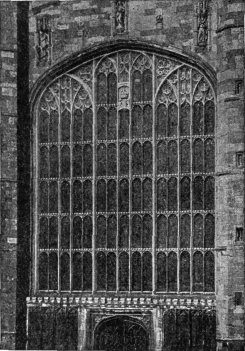
FIG. 133.—PERPENDICULAR TRACERY, WEST WINDOW OF ST. GEORGE’S,
WINDSOR.
THE PERPENDICULAR STYLE. Flowing tracery was, however, a transitional phase of design, and was soon superseded by Perpendicular tracery, in which the mullions were 226 carried through to the top of the arch and intersected by horizontal transoms. This formed a very rigid and mechanically correct system of stone framing, but lacked the grace and charm of the two preceding periods. The earliest examples are seen in the work of Edington and of Wykeham in the reconstructed cathedral of Winchester (1360–1394), where the tracery was thus made to harmonize with the accentuated and multiplied vertical lines of the interior design. It was at this late date that the English seem first to have fully appropriated the Gothic ideas of emphasized vertical elements and wall surfaces reduced to a minimum. The development of fan-vaulting had led to the adoption of a new form of arch, the four-centred or Tudor arch (Fig. 133), to fit under the depressed apex of the vault. The whole design internally and externally was thenceforward controlled by the form of the vaulting and of the openings. The windows were made of enormous size, especially at the east end of the choir, which was square in nearly all English churches, and in the west windows over the entrance. These windows had already reached, in the Decorated Period, an enormous size, as at York; in the Perpendicular Period the two ends of the 227 church were as nearly as possible converted into walls of glass. The East Window of Gloucester reaches the prodigious dimensions of 38 by 72 feet. The most complete examples of the Perpendicular tracery and of the style in general are the three chapels already mentioned (p. 223); those, namely, of King’s College at Cambridge, of St. George at Windsor, and of Henry VII. in Westminster Abbey.
CONSTRUCTIVE DESIGN. The most striking peculiarity of English Gothic design was its studious avoidance of temerity or venturesomeness in construction. Both the height and width of the nave were kept within very moderate bounds, and the supports were never reduced to extreme slenderness. While much impressiveness of effect was undoubtedly lost thereby, there was some gain in freedom of design, and there was less obtrusion of constructive elements in the exterior composition. The flying-buttress became a feature of minor importance where the clearstory was kept low, as in most English churches. In many cases the flying arches were hidden under the aisle roofs. The English cathedrals and larger churches are long and low, depending for effect mainly upon the projecting masses of their transepts, the imposing square central towers which commonly crown the crossing, and the grouping of the main structure with chapter-houses, cloisters, and Lady-chapels.

FIG. 134.—WEST FRONT, LICHFIELD CATHEDRAL.
FRONTS. The sides and east ends were, in most cases, more successful than the west fronts. In these the English displayed a singular indifference or lack of creative power. They produced nothing to rival the majestic façades of Notre Dame, Amiens, or Reims, and their portals are almost ridiculously small. The front of York Cathedral is the most notable in the list for its size and elaborate decoration. Those of Lincoln and Peterborough are, however, more interesting in the picturesqueness and singularity of their composition. The first-named forms a vast arcaded 228 screen, masking the bases of the two western towers, and pierced by three huge Norman arches, retained from the original façade. The west front of Peterborough is likewise a mask or screen, mainly composed of three colossal recessed arches, whose vast scale completely dwarfs the little porches which give admittance to the church. Salisbury has a curiously illogical and ineffective façade. Those of Lichfield and Wells are, on the other hand, imposing and beautiful designs, the first with its twin spires and rich arcading (Fig. 134), the second with its unusual wealth of figure-sculpture, and massive square towers.
CENTRAL TOWERS. These are the most successful features of English exterior design. Most of them form lanterns internally over the crossing, giving to that point a considerable increase of dignity. Externally they are usually massive and lofty square towers, and having been for the most part completed during the fourteenth and fifteenth centuries they are marked by great richness and elegance of detail. Durham, York, Ely, Canterbury, Lincoln, and Gloucester maybe mentioned as notable examples of such square towers; that of Canterbury is the finest. Two or three have lofty spires over the lantern. Among these, that of Salisbury is chief, rising 424 feet from the ground, admirably designed in every 229 detail. It was not completed till the middle of the fourteenth century, but most fortunately carries out with great felicity the spirit of the earlier style in which it was begun. Lichfield and Chichester have somewhat similar central spires, but less happy in proportion and detail than the beautiful Salisbury example.
FIG. 135.—ONE BAY OF CHOIR, LICHFIELD CATHEDRAL.
INTERIOR DESIGN. In the Norman churches the pier-arches, triforium, and clearstory were practically equal. In the Gothic churches the pier-arches generally occupy the lower half of the height, the upper half being divided nearly equally between the triforium and clearstory, as in Lincoln, Lichfield (nave), Ely (choir). In some cases, however (as at Salisbury, Westminster, Winchester, choir of Lichfield), the clearstory is magnified at the expense of the triforium (Fig. 135). Three peculiarities of design sharply distinguish the English treatment of these features from the French. The first is the multiplicity of fine mouldings in the pier-arches; the second is the decorative elaboration of design in the triforium; the third, the variety in the treatment of the clearstory. In general the English interiors are much more ornate than the French. Black Purbeck marble is frequently used for the shafts clustered around the central core of the pier, giving a striking and somewhat singular effect of contrasted color. The rich vaulting, the highly decorated triforium, the moulded pier-arches, and at the 230 end of the vista the great east window, produce an impression very different from the more simple and lofty stateliness of the French cathedrals. The great length and lowness of the English interiors combine with this decorative richness to give the impression of repose and grace, rather than of majesty and power. This tendency reached its highest expression in the Perpendicular churches and chapels, in which every surface was covered with minute panelling.
CARVING. In the Early English Period the details were carved with a combined delicacy and vigor deserving of the highest praise. In the capitals and corbels, crockets and finials, the foliage was crisp and fine, curling into convex masses and seeming to spring from the surface which it decorated. Mouldings were frequently ornamented with foliage of this character in the hollows, and another ornament, the dog-tooth or pyramid, often served the same purpose, introducing repeated points of light into the shadows of the mouldings. These were fine and complex, deep hollows alternating with round mouldings (bowtels) sometimes made pear-shaped in section by a fillet on one side. Cusping—the decoration of an arch or circle by triangular projections on its inner edge—was introduced during this period, and became an important decorative resource, especially in tracery design. In the Decorated Period the foliage was less crisp; sea-weed and oak-leaves, closely and confusedly bunched, were used in the capitals, while crockets were larger, double-curved, with leaves swelling into convexities like oak-galls. Geometrical and flowing tracery were developed, and the mouldings of the tracery-bars, as of other features, lost somewhat in vigor and sharpness. The ball-flower or button replaced the dog’s-tooth, and the hollows were less frequently adorned with foliage.
In the Perpendicular Period nearly all flat surfaces were panelled in designs resembling the tracery of the windows. 231 The capitals were less important than those of the preceding periods, and the mouldings weaker and less effective. The Tudor rose appears as an ornament in square panels and on flat surfaces; and moulded battlements, which first appeared in Decorated work, now become a frequent crowning motive in place of a cornice. There is less originality and variety in the ornament, but a great increase in its amount (Fig. 136).
FIG. 136.—FAN-VAULTING, HENRY VII.’S CHAPEL, WESTMINSTER
ABBEY.
PLANS. English church plans underwent, during the Gothic Period, but little change from the general types established previous to the thirteenth century. The Gothic cathedrals and abbeys, like the Norman, were very long and narrow, with choirs often nearly as long as the nave, and almost invariably with square eastward terminations. There is no example of double side aisles and side chapels, and apsidal chapels are very rare. Canterbury and Westminster (Fig. 137) are the chief exceptions to this, and both show clearly the French influence. Another striking peculiarity of the English plans is the frequent occurrence of secondary 232 transepts, adding greatly to the external picturesqueness. These occur in rudimentary form in Canterbury, and at Durham the Chapel of the Nine Altars, added 1242–1290 to the eastern end, forms in reality a secondary transept. This feature is most perfectly developed in the cathedral of Salisbury (Fig. 128), and appears also at Lincoln, Worcester, Wells, and a few other examples. The English cathedral plans are also distinguished by the retention or incorporation of many conventual features, such as cloisters, libraries, and halls, and by the grouping of chapter-houses and Lady-chapels with the main edifice. Thus the English cathedral plans and those of the great abbey churches present a marked contrast with those of France and the Continent generally. While Amiens, the greatest of French cathedrals, is 521 feet long, and internally 140 feet high, Ely measures 565 feet in length, and less than 75 feet in height. Notre Dame is 148 feet wide; the English naves are usually under 80 feet in total width of the three aisles.
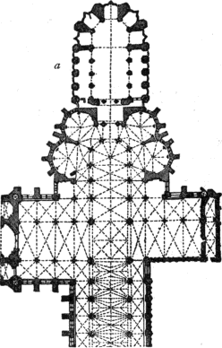
FIG. 137.—EASTERN HALF OF WESTMINSTER ABBEY. PLAN.
a, Henry VII.’s chapel.
PARISH CHURCHES. Many of these were of exceptional beauty of composition and detail. They display the greatest variety of plan, churches with two equal-gabled naves 233 side by side being not uncommon. A considerable proportion of them date from the fourteenth and fifteenth centuries, and are chiefly interesting for their square, single, west towers and their carved wooden ceilings (see below). The tower was usually built over the central western porch; broad and square, with corner buttresses terminating in pinnacles, it was usually finished without spires. Crenelated battlements crowned the upper story. When spires were added the transition from the square tower to the octagonal spire was effected by broaches or portions of a square pyramid intersecting the base of the spire, or by corner pinnacles and flying-buttresses.
FIG. 138.—ROOF OF NAVE, ST. MARY’S, WESTONZOYLAND.
WOODEN CEILINGS. The English treated woodwork with consummate skill. They invented and developed a variety of forms of roof-truss in which the proper distribution of the strains was combined with a highly decorative treatment of the several parts by carving, moulding, and arcading. The ceiling surfaces between the trusses were handled decoratively, and the oaken open-timber ceilings of many of the English churches and civic or academic halls (Christ Church Hall, Oxford; Westminster Hall, London) are such noble and beautiful works as quite to justify the substitution of wooden for vaulted ceilings (Fig. 138). The hammer-beam truss was in its way as highly scientific, and æsthetically as satisfactory, as any feature of French Gothic 234 stone construction. Without the use of tie-rods to keep the rafters from spreading, it brought the strain of the roof upon internal brackets low down on the wall, and produced a beautiful effect by the repetition of its graceful curves in each truss.
CHAPELS AND HALLS. Many of these rival the cathedrals in beauty and dignity of design. The royal chapels at Windsor and Westminster have already been mentioned, as well as King’s College Chapel at Cambridge, and Christ Church Hall at Oxford. To these college halls should be added the chapel of Merton College at Oxford, and the beautiful chapel of St. Stephen at Westminster, most unfortunately demolished when the present Parliament House was erected. The Lady-chapels of Gloucester and Ely, though connected with the cathedrals, are really independent designs of late date, and remarkable for the richness of their decoration, their great windows, and elaborate ribbed vaulting. Some of the halls in mediæval castles and manor-houses are also worthy of note, especially for their timber ceilings.
MINOR MONUMENTS. The student of Gothic architecture should also give attention to the choir-screens, tombs, and chantries which embellish many of the abbeys and cathedrals. The rood-screen at York is a notable example of the first; the tomb of De Gray in the same cathedral, and tombs and chantries in Canterbury, Winchester, Westminster Abbey, Ely, St. Alban’s Abbey, and other churches are deservedly admired. In these the English love for ornament, for minute carving, and for the contrast of white and colored marble, found unrestrained expression. To these should be added the market-crosses of Salisbury and Winchester, and Queen Eleanor’s Cross at Waltham.
DOMESTIC ARCHITECTURE. The mediæval castles of Great Britain belong to the domain of military engineering rather than of the history of art, though occasionally presenting 235 to view details of considerable architectural beauty. The growth of peace and civic order is marked by the erection of manor-houses, the residences of wealthy landowners. Some of these houses are of imposing size, and show the application to domestic requirements, of the late Gothic style which prevailed in the period to which most of them belong. The windows are square or Tudor-arched, with stone mullions and transoms of the Perpendicular style, and the walls terminate in merlons or crenelated parapets, recalling the earlier military structures. The palace of the bishop or archbishop, adjoining the cathedral, and the residences of the dean, canons, and clergy, together with the libraries, schools, and gates of the cathedral enclosure, illustrate other phases of secular Gothic work. Few of these structures are of striking architectural merit, but they possess a picturesque charm which is very attractive.
Not many stone houses of the smaller class remain from the Gothic period in England. But there is hardly an old town that does not retain many of the half-timbered dwellings of the fifteenth or even fourteenth century, some of them in excellent preservation. They are for the most part wider and lower than the French houses of the same class, but are built on the same principle, and, like them, the woodwork is more or less richly carved.
MONUMENTS: (A. = abbey church; C. = cathedral; r. = ruined; trans. = transept; each monument is given under the date of the earliest extant Gothic work upon it, with additions of later periods in parentheses.)
Early English: Kirkstall A., 1152–82, first pointed arches; Canterbury C., choir, 1175–84 (nave, 1378–1411; central tower, 1500); Lincoln C., choir, trans., 1192–1200 (vault, 1250; nave and E. end, 1260–80); Lichfield C., 1200–50 (W. front, 1275; presbytery, 1325); Worcester C., choir, 1203–18, nave partly Norman (W. end, 1375–95); Chichester C., 1204–44 (spire rebuilt 17th century); Fountains A., 1205–46; Salisbury C., 1220–58 (cloister, chapter-h., 1263–84; spire, 1331); Elgin C., 1224–44; Wells C., 1175–1206 (W. front 1225, choir later, chapter-h., 1292); Rochester C., 1225–39 236 (nave Norman); York C., S. trans., 1225; N. trans., 1260 (nave, chapter-h., 1291–1345; W. window, 1338; central tower, 1389–1407; E. window, 1407); Southwell Minster, 1233–94 (nave Norman); Ripon C., 1233–94 (central tower, 1459); Ely C., choir, 1229–54 (nave Norman; octagon and presbytery, 1323–62); Peterborough C., W. front, 1237 (nave Norman; retro-choir, late 14th century); Netley A., 1239 (r.); Durham C., “Nine Altars” and E. end choir, 1235–90 (nave, choir, Norman; W. window, 1341; central tower finished, 1480); Glasgow C., (with remarkable Early English crypt), 1242–77; Gloucester C., nave vaulted, 1239–42 (nave mainly Norman; choir, 1337–51; cloisters, 1375–1412; W. end, 1420–37; central tower, 1450–57); Westminster A., 1245–69; St. Mary’s A., York, 1272–92 (r.).
Decorated: Merton College Chapel, Oxford, 1274–1300; Hereford C., N. trans., chapter-h., cloisters, vaulting, 1275–92 (nave, choir, Norman); Exeter C., choir, trans., 1279–91; nave, 1331–50 (E. end remodelled, 1390); Lichfield C., Lady-chapel, 1310; Ely C., Lady-chapel, 1321–49; Melrose A., 1327–99 (nave, 1500; r.); St. Stephen’s Chapel, Westminster, 1349–64 (demolished); Edington church, 1352–61; Carlisle C., E. end and upper parts, 1352–95 (nave in part and S. trans. Norman; tower finished, 1419); Winchester C., W. end remodelled, 1360–66 (nave and aisles, 1394–1410; trans., partly Norman); York C., Lady-chapel, 1362–72; churches of Patrington and Hull, late 14th century.
Perpendicular: Holy Cross Church, Canterbury, 1380; St. Mary’s, Warwick, 1381–91; Manchester C., 1422; St. Mary’s, Bury St. Edmunds, 1424–33; Beauchamp Chapel, Warwick, 1439; King’s College Chapel, Cambridge, 1440; vaults, 1508–15; St. Mary’s Redcliffe, Bristol, 1442; Roslyn Chapel, Edinburgh, 1446–90; Gloucester C., Lady-chapel, 1457–98; St. Mary’s, Stratford-on-Avon, 1465–91; Norwich C., upper part and E. end of choir, 1472–99 (the rest mainly Norman); St. George’s Chapel, Windsor, 1481–1508; choir vaulted, 1507–20; Bath A., 1500–39; Chapel of Henry VII., Westminster, 1503–20.
Academic and Secular Buildings: Winchester Castle Hall, 1222–35; Merton College Chapel, Oxford, 1274–1300; Library Merton College, 1354–78; Norborough Hall, 1356; Windsor Castle, upper ward, 1359–73; Winchester College, 1387–93; Wardour Castle, 1392; Westminster Hall, rebuilt, 1397–99; St. Mary’s Hall, Coventry, 1401–14; Warkworth Castle, 1440; St. John’s College, All Soul’s College, Oxford, 1437; Eton College, 1441–1522; Divinity Schools, Oxford, 1445–54; Magdalen College, Oxford, 1475–80, tower, 1500; Christ Church Hall, Oxford, 1529.
CHAPTER XVIII.
GOTHIC ARCHITECTURE IN GERMANY, THE NETHERLANDS, AND SPAIN.
Books Recommended: As before, Corroyer, Reber. Also, Adler, Mittelalterliche Backstein-Bauwerke des preussischen Staates. Essenwein (Hdbuch. d. Arch.), Die romanische und die gothische Baukunst; der Wohnbau. Hasak, Die romanische und die gothische Baukunst; Kirchenbau; Einzelheiten des Kirchenbaues (both in Hdbuch. d. Arch.). Hase and others, Die mittelalterlichen Baudenkmäler Niedersachsens. Kallenbach, Chronologie der deutschen mittelalterlichen Baukunst. Lübke, Ecclesiastical Art in Germany during the Middle Ages. Redtenbacher, Leitfaden zum Studium der mittelalterlichen Baukunst. Street, Gothic Architecture in Spain. Uhde, Baudenkmäler in Spanien. Ungewitter, Lehrbuch der gothischen Constructionen. Villa Amil, Hispania Artistica y Monumental.
EARLY GOTHIC WORKS. The Gothic architecture of Germany is less interesting to the general student than that of France and England, not only because its development was less systematic and more provincial, but also because it produced fewer works of high intrinsic merit. The introduction into Germany of the pointed style was tardy, and its progress slow. Romanesque architecture had created imposing types of ecclesiastical architecture, which the conservative Teutons were slow to abandon. The result was a half-century of transition and a mingling of Romanesque and Gothic forms. St. Castor, at Coblentz, built as late as 1208, is wholly Romanesque. Even when the pointed arch and vault had finally come into general use, the plan and the constructive system still remained predominantly Romanesque. The western apse and short sanctuary of the earlier plans were retained. There was no triforium, the 238 clearstory was insignificant, and the whole aspect low and massive. The Germans avoided, at first, as did the English, the constructive audacities and difficulties of the French Gothic, but showed less of invention and grace than their English neighbors. When, however, through the influence of foreign models, especially of the great French cathedrals, and through the employment of foreign architects, the Gothic styles were at last thoroughly domesticated, a spirit of ostentation took the place of the earlier conservatism. Technical cleverness, exaggerated ingenuity of detail, and constructive tours de force characterize most of the German Gothic work of the late fourteenth and of the fifteenth century. This is exemplified in the slender mullions of Ulm, the lofty and complicated spire of Strasburg, and the curious traceries of churches and houses in Nuremberg.
PERIODS. The periods of German mediæval architecture corresponded in sequence, though not in date, with the movement elsewhere. The maturing of the true Gothic styles was preceded by more than a half-century of transition. Chronologically the periods may be broadly stated as follows:
The Transitional, 1170–1225.
The Early Pointed, 1225–1275.
The Middle or Decorated, 1275–1350.
The Florid, 1350–1530.
These divisions are, however, far less clearly defined than in France and England. The development of forms was less logical and consequential, and less uniform in the different provinces, than in those western lands.
FIG. 139.—ONE BAY OF CATHEDRAL OF ST. GEORGE, LIMBURG.
CONSTRUCTION. As already remarked, a tenacious hold of Romanesque methods is observable in many German Gothic monuments. Broad wall-surfaces with small windows and a general massiveness and lowness of proportions were long preferred to the more slender and lofty forms of true 239 Gothic design. Square vaulting-bays were persistently adhered to, covering two aisle-bays. The six-part system was only rarely resorted to, as at Schlettstadt, and in St. George at Limburg-on-the-Lahn (Fig. 139). The ribbed vault was an imported idea, and was never systematically developed. Under the final dominance of French models in the second half of the thirteenth century, vaulting in oblong bays became more general, powerfully influenced by buildings like Freiburg, Cologne, Oppenheim, and Ratisbon cathedrals. In the fourteenth century the growing taste for elaboration and rich detail led to the introduction of multiplied decorative ribs. These, however, did not come into use, as in England, through a logical development of constructive methods, but purely as decorative features. The German multiple-ribbed vaulting is, therefore, less satisfying than the English, though often elegant. Conspicuous examples of its application are found in the cathedrals of Freiburg, Ulm, Prague, and Vienna; in St. Barbara at Kuttenberg, and many other important churches. But with all the richness and complexity of these net-like vaults the Germans developed nothing like the fan-vaulting or chapter-house ceilings of England.
SIDE AISLES. The most notable structural innovation of the Germans was the raising of the side aisles to the same height as the central aisle in a number of important 240 churches. They thus created a distinctly new type, to which German writers have given the name of hall-church. The result of this innovation was to transform completely the internal perspective of the church, as well as its structural membering. The clearstory disappeared; the central aisle no longer dominated the interior; the pier-arches and side-walls were greatly increased in height, and flying buttresses were no longer required. The whole design appeared internally more spacious, but lost greatly in variety and in interest. The cathedral of St. Stephen at Vienna is the most imposing instance of this treatment, which first appeared in the church of St. Elizabeth at Marburg (1235–83; Fig. 140). St. Barbara at Kuttenberg, St. Martin’s at Landshut (1404), and the cathedral of Munich are others among many examples of this type.
FIG. 140.—SECTION OF ST. ELIZABETH, MARBURG.
TOWERS AND SPIRES. The same fondness for spires which had been displayed in the Rhenish Romanesque churches produced in the Gothic period a number of strikingly beautiful church steeples, in which openwork tracery was substituted for the solid stone pyramids of earlier examples. The most remarkable of these spires are those of Freiburg (1300), Strasburg, and Cologne cathedrals, of the church at Esslingen, St. Martin’s at Landshut, and the cathedral of Vienna. In these the transition from the simple square tower below to the octagonal belfry and spire is generally managed with skill. In the remarkable tower of the cathedral 241 at Vienna (1433) the transition is too gradual, so that the spire seems to start from the ground and lacks the vigor and accent of a simpler square lower portion. The over-elaborate spire of Strasburg (1429, by Junckher of Cologne; lower parts and façade, 1277–1365, by Erwin von Steinbach and his sons) reaches a height of 468 feet; the spires of Cologne, completed in 1883 from the original fourteenth-century drawings, long lost but recovered by a happy accident, are 500 feet high. The spires of Ratisbon and Ulm cathedrals have also been recently completed in the original style.
DETAILS. German window tracery was best where it most closely followed French patterns, but it tended always towards the faults of mechanical stiffness and of technical display in over-slenderness of shafts and mullions. The windows, especially in the “hall-churches,” were apt to be too narrow for their height. In the fifteenth century ingenuity of geometrical combinations took the place of grace of line, and later the tracery was often tortured into a stone caricature of rustic-work of interlaced and twisted boughs and twigs, represented with all their bark and knots (branch-tracery). The execution was far superior to the design. The carving of foliage in capitals, finials, etc., calls for no special mention for its originality or its departure from French types.
FIG. 141.—COLOGNE CATHEDRAL. PLAN.
PLANS. In these there was more variety than in any other part of Europe except Italy. Some churches, like Naumburg, retained the Romanesque system of a second western apse and short choir. The Cistercian churches generally had square east ends, while the polygonal eastern apse without ambulatory is seen in St. Elizabeth at Marburg, the cathedrals of Ratisbon, Ulm and Vienna, and many other churches. The introduction of French ideas in the thirteenth century led to the adoption in a number of cases of the chevet with a single ambulatory and a series of 242 radiating apsidal chapels. Magdeburg cathedral (1208–11) was the first erected on this plan, which was later followed at Altenburg, Cologne, Freiburg, Lübeck, Prague and Zwettl, in St. Francis at Salzburg and some other churches. Side chapels to nave or choir appear in the cathedrals of Lübeck, Munich, Oppenheim, Prague and Zwettl. Cologne Cathedral, by far the largest and most magnificent of all, is completely French in plan, uniting in one design the leading characteristics of the most notable French churches (Fig. 141). It has complete double aisles in both nave and choir, three-aisled transepts, radial chevet-chapels and twin western towers. The ambulatory is, however, single, and there are no lateral chapels. A typical German treatment was the eastward termination of the church by polygonal chapels, one in the axis of each aisle, the central one projecting beyond its neighbors. Where there were five aisles, as at Xanten, the effect was particularly fine. The plan of the curious polygonal church of Our Lady (Liebfrauenkirche; 1227–43) built on the site of the ancient circular baptistery at Treves, would seem to have been produced by doubling such an arrangement on either side of the transverse axis (Fig. 142).
FIG. 142.—CHURCH OF OUR LADY, TREVES.
HISTORICAL DEVELOPMENT. The so-called Golden Portal of
Freiburg in the Erzgebirge is perhaps the first distinctively
Gothic work in Germany, dating from 1190. From that time on, Gothic
details appeared with increasing frequency, especially in the Rhine
provinces, as shown in many
243
transitional structures. Gelnhausen and Aschaffenburg are early
13th-century examples; pointed arches and vaults appear in the Apostles’
and St. Martin’s churches at Cologne; and the great church of St.
Peter and St. Paul at Neuweiler in Alsace has an almost purely
Gothic nave of the same period. The churches of Bamberg,
Fritzlar, and Naumburg, and in Westphalia those of
Münster and Osnabrück, are important examples of the
transition. The French influence, especially the Burgundian, appears as
early as 1212 in the cathedral of Magdeburg, imitating the choir of
Soissons, and in the structural design of the Liebfrauenkirche at Treves
as already mentioned; it reached complete ascendancy in Alsace at
Strasburg (nave 1240–75), in Baden at Freiburg (nave
1270) and in Prussia at Cologne (1248–1320). Strasburg
Cathedral is especially remarkable for its façade, the work of Erwin von
Steinbach and his sons (1277–1346), designed after French models,
and its north spire, built in the fifteenth century. Cologne Cathedral,
begun in 1248 by Gerhard of Riel in imitation of the newly
completed choir of Amiens, was continued by Master Arnold and his
son John, and the choir was consecrated in 1322. The nave and
W. front were built during the first half of the 14th century,
though the towers were not completed till 1883.
FIG. 143.—PLAN OF
ULM CATHEDRAL.
In spite of its vast size and slow construction, it is in style the most
uniform of all great Gothic cathedrals, as it is the most lofty
(excepting the choir of Beauvais) and the largest excepting Milan and
244
Seville. Unfortunately its details, though pure and correct, are
singularly dry and mechanical, while its very uniformity deprives it of
the picturesque and varied charm which results from a mixture of styles
recording the labors of successive generations. The same criticism may
be raised against the late cathedral of Ulm (choir,
1377–1449; nave, 1477; Fig. 143). The Cologne influence is
observable in the widely separated cathedrals of Utrecht in the
Netherlands, Metz in the W., Minden and Halberstadt (begun 1250;
mainly built after 1327) in Saxony, and in the S. in the church of
St. Catherine at Oppenheim. To the E. and S., in the
cathedrals of Prague (Bohemia) by Matthew of Arras
(1344–52) and Ratisbon (or Regensburg, 1275) the French
influence predominates, at least in the details and construction. The
last-named is one of the most dignified and beautiful of German Gothic
churches—German in plan, French in execution. The French influence
also manifests itself in the details of many of the peculiarly German
churches with aisles of equal height (see p. 240).
More peculiarly German are the brick churches of North Germany, where stone was almost wholly lacking. In these, flat walls, square towers, and decoration by colored tiles and bricks are characteristic, as at Brandenburg (St. Godehard and St. Catherine, 1346–1400), at Prentzlau, Tängermünde, Königsberg, &c. Lübeck possesses notable monuments of brick architecture in the churches of St. Mary and St. Catherine, both much alike in plan and in the flat and barren simplicity of their exteriors. St. Martin’s at Landshut in the South is also a notable brick church.
245LATE GOTHIC. As in France and England, the fourteenth and fifteenth centuries were mainly occupied with the completion of existing churches, many of which, up to that time, were still without naves. The works of this period show the exaggerated attenuation of detail already alluded to, though their richness and elegance sometimes atone for their mechanical character. The complicated ribbed vaults of this period are among its most striking features (see p. 239). Spire-building was as general as was the erection of central square towers in England, during the same period. To this time also belong the overloaded traceries and minute detail of the St. Sebald and St. Lorenz churches and of several secular buildings at Nuremberg, the façade of Chemnitz Cathedral, and similar works. The nave and tower of St. Stephen at Vienna (1359–1433), the church of Sta. Maria in Gestade in the same city, and the cathedral of Kaschau in Hungary, are Austrian masterpieces of late Gothic design.
SECULAR BUILDINGS. Germany possesses a number of important examples of secular Gothic work, chiefly municipal buildings (gates and town halls) and castles. The first completely Gothic castle or palace was not built until 1280, at Marienburg (Prussia), and was completed a century later. It consists of two courts, the earlier of the two forming a closed square and containing the chapel and chapter-house of the Order of the German knights. The later and larger court is less regular, its chief feature being the Great Hall of the Order, in two aisles. All the vaulting is of the richest multiple-ribbed type. Other castles are at Marienwerder, Heilsberg (1350) in E. Prussia, Karlstein in Bohemia (1347), and the Albrechtsburg at Meissen in Saxony (1471–83).
Among town halls, most of which date from the fourteenth and fifteenth centuries may be mentioned those of Ratisbon (Regensburg), Münster and Hildesheim, Halberstadt, 246 Brunswick, Lübeck, and Bremen—the last two of brick. These, and the city gates, such as the Spahlenthor at Basle (Switzerland) and others at Lübeck and Wismar, are generally very picturesque edifices. Many fine guildhalls were also built during the last two centuries of the Gothic style; and dwelling-houses of the same period, of quaint and effective design, with stepped or traceried gables, lofty roofs, openwork balconies and corner turrets, are to be found in many cities. Nuremberg is especially rich in these.
THE NETHERLANDS, as might be expected from their position, underwent the influences of both France and Germany. During the thirteenth century, largely through the intimate monastic relations between Tournay and Noyon, the French influence became paramount in what is now Belgium, while Holland remained more strongly German in style. Of the two countries Belgium developed by far the most interesting architecture. Some of its cathedrals, notably those of Tournay, Antwerp, Brussels, Malines (Mechlin), Mons and Louvain, rank high among structures of their class, both in scale and in artistic treatment. The Flemish town halls and guildhalls merit particular attention for their size and richness, exemplifying in a worthy manner the wealth, prosperity, and independence of the weavers and merchants of Antwerp, Ypres, Ghent (Gand), Louvain, and other cities in the fifteenth century.
CATHEDRALS AND CHURCHES. The earliest purely Gothic edifice in Belgium was the choir of Ste. Gudule (1225) at Brussels, followed in 1242 by the choir and transepts of Tournay, designed with pointed vaults, side chapels, and a complete chevet. The transept-ends are round, as at Noyon. It was surpassed in splendor by the Cathedral of Antwerp (1352–1422), remarkable for its seven-aisled nave and narrow transepts. It covers some 70,000 square feet, but its great size is not as effective internally as it should be, owing to the poverty of the details and the lack 247 of finely felt proportion in the various parts. The late west front (1422–1518) displays the florid taste of the wealthy Flemish burgher population of that period, but is so rich and elegant, especially its lofty and slender north spire, that its over-decoration is pardonable. The cathedral of St. Rombaut at Malines (choir, 1366; nave, 1454–64) is a more satisfactory church, though smaller and with its western towers incomplete. The cathedral of Louvain belongs to the same period (1373–1433). St. Wandru at Mons (1450–1528) and St. Jacques at Liège (1522–58) are interesting parish churches of the first rank, remarkable especially for the use of color in their internal decoration, for their late tracery and ribbed vaulting, and for the absence of Renaissance details at that late period.
TOWN HALLS: GUILDHALLS. These were really the most characteristic Flemish edifices, and are in most cases the most conspicuous monuments of their respective cities. The Cloth Hall of Ypres (1304) is the earliest and most imposing among them; similar halls were built not much later at Bruges, Louvain, Malines and Ghent. The town halls were mostly of later date, the earliest being that of Bruges (1377). The town halls of Brussels with its imposing 248 and graceful tower, of Louvain (1448–63; Fig. 144) and of Oudenärde (early 16th century) are conspicuous monuments of this class.
In general, the Gothic architecture of Belgium presents the traits of a borrowed style, which did not undergo at the hands of its borrowers any radically novel or fundamental development. The structural design is usually lacking in vigor and organic significance, but the details are often graceful and well designed, especially on the exterior. The tendency was often towards over-elaboration, particularly in the later works.
The Gothic architecture of Holland and of the Scandinavian countries offers so little that is highly artistic or inspiring in character, that space cannot well be given in this work, even to an enumeration of its chief monuments.
SPAIN AND PORTUGAL. The beginnings of Gothic architecture in Spain followed close on the series of campaigns from 1217 to 1252, which began the overthrow of the Moorish dominion. With the resulting spirit of exultation and the wealth accruing from booty, came a rapid development of architecture, mainly under French influence. Gothic architecture was at this date, under St. Louis, producing in France some of its noblest works. The great cathedrals of Toledo and Burgos, begun between 1220 and 1230, were the earliest purely Gothic churches in Spain. San Vincente at Avila and the Old Cathedral at Salamanca, of somewhat earlier date, present a mixture of round- and pointed-arched forms, with the Romanesque elements predominant. Toledo Cathedral, planned in imitation of Notre Dame and Bourges, but exceeding them in width, covers 75,000 square feet, and thus ranks among the largest of European cathedrals. Internally it is well proportioned and well detailed, recalling the early French masterworks, but its exterior is less commendable.
249
FIG. 145.—FAÇADE OF BURGOS CATHEDRAL.
In the contemporary cathedral of Burgos the exterior is at least as interesting as the interior. The west front, of German design, suggests Cologne by its twin openwork spires (Fig. 145); while the crossing is embellished with a sumptuous dome and lantern or cimborio, added as late as 1567. The chapels at the east end, especially that of the Condestabile (1487), are ornate to the point of overloading, a fault to which late Spanish Gothic work is peculiarly prone. Other thirteenth-century cathedrals are those of Leon (1260), Valencia (1262), and Barcelona (1298), all exhibiting strongly the French influence in the plan, vaulting, and vertical proportions. The models of Bourges and Paris with their wide naves, lateral chapels and semicircular chevets were followed in the cathedral of Barcelona, in a number of fourteenth-century churches both there and elsewhere, and in the sixteenth-century cathedral of Segovia. In Sta. Maria del Pi at Barcelona, in the collegiate church at Manresa, and in the imposing nave of the Cathedral of Gerona (1416, added to choir of 1312, the latter by a Southern French architect, Henri de Narbonne), the influence of Alby in southern France (see p. 206) is discernible. These are one-aisled churches with internal 250 buttresses separating the lateral chapels. The nave of Gerona is 73 feet wide, or double the average clear width of French or English cathedral naves. The resulting effect is not commensurate with the actual dimensions, and shows the inappropriateness of Gothic details for compositions so Roman in breadth and simplicity.
SEVILLE. The largest single edifice in Spain, and the largest church built during the Middle Ages in Europe, is the Cathedral of Seville, begun in 1401 on the site of a Moorish mosque. It covers 124,000 square feet, measuring 415 × 298 feet, and is a simple rectangle comprising five aisles with lateral chapels. The central aisle is 56 ft. wide and 145 high; the side aisles and chapels diminish gradually in height, and with the uniform piers in six rows produce an imposing effect, in spite of the lack of transepts or chevet. The somewhat similar New Cathedral of Salamanca (1510–1560) shows the last struggles of the Gothic style against the incoming tide of the Renaissance.
LATER MONUMENTS. These all partake of the over-decoration which characterized the fifteenth century throughout Europe. In Spain this decoration was even less constructive in character, and more purely fanciful and arbitrary, than in the northern lands; but this very rejection of all constructive pretense gives it a peculiar charm and goes far to excuse its extravagance (Fig. 146). Decorative vaulting-ribs were made to describe geometric patterns of great elegance. Some of the late Gothic vaults by the very exuberance of imagination shown in their designs, almost disarm criticism. Instead of suppressing the walls as far as possible, and emphasizing all the vertical lines, as was done in France and England, the later Gothic architects of Spain delighted in broad wall-surfaces and multiplied horizontal lines. Upon these surfaces they lavished carving without restraint and without any organic relation to the structure of the building. The arcades of 251 cloisters and interior courts (patios) were formed with arches of fantastic curves resting on twisted columns; and internal chapels in the cathedrals were covered with minute carving of exquisite workmanship, but wholly irrational design. Probably the influence of Moorish decorative art accounts in part for these extravagances. The eastern chapels in Burgos cathedral, the votive church of San Juan de los Reyes at Toledo and many portals of churches, convents and hospitals illustrate these tendencies.
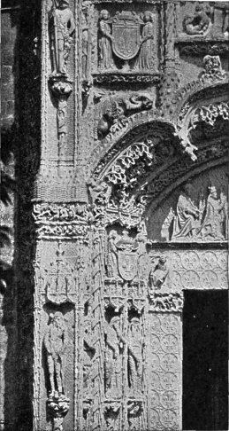
FIG. 146.—DETAIL, PORTAL S. GREGORIO, VALLADOLID.
PORTUGAL is an almost unknown land architecturally. It seems to have adopted the Gothic styles very late in its history. Two monuments, however, are conspicuous, the convent churches of Batalha (1390–1520) and Belem, both marked by an extreme overloading of carved ornament. The Mausoleum of King Manoel in the rear of the church at Batalha is, however, a noble creation, possibly by an English master. It is a polygonal domed edifice, some 67 feet in diameter, and well 252 designed, though covered with a too profuse and somewhat mechanical decoration of panels, pinnacles, and carving.
MONUMENTS: Germany (C = cathedral; A = abbey; tr. = transepts).—13th century: Transitional churches: Bamberg C.; Naumburg C.; Collegiate Church, Fritzlar; St. George, Limburg-on-Lahn; St. Castor, Coblentz; Heisterbach A.;—all in early years of 13th century. St. Gereon, Cologne, choir 1212–27; Liebfrauenkirche, Treves, 1227–44; St. Elizabeth, Marburg, 1235–83; Sts. Peter and Paul, Neuweiler, 1250; Cologne C., choir 1248–1322 (nave 14th century; towers finished 1883); Strasburg C., 1250–75 (E. end Romanesque; façade 1277–1365; tower 1429–39); Halberstadt C., nave 1250 (choir 1327; completed 1490); Altenburg C., choir 1255–65 (finished 1379); Wimpfen-im-Thal church 1259–78; St. Lawrence, Nuremberg, 1260 (choir 1439–77); St. Catherine, Oppenheim, 1262–1317 (choir 1439); Xanten, Collegiate Church, 1263; Freiburg C., 1270 (W. tower 1300; choir 1354); Toul C., 1272; Meissen C., choir 1274 (nave 1312–42); Ratisbon C., 1275; St. Mary’s, Lübeck, 1276; Dominican churches at Coblentz, Gebweiler; and in Switzerland at Basle, Berne, and Zurich.—14th century: Wiesenkirche, Söst, 1313; Osnabrück C., 1318 (choir 1420); St. Mary’s, Prentzlau, 1325; Augsburg C., 1321–1431; Metz C., 1330 rebuilt (choir 1486); St. Stephen’s C., Vienna, 1340 (nave 15th century; tower 1433); Zwette C., 1343; Prague C., 1344; church at Thann, 1351 (tower finished 16th century); Liebfrauenkirche, Nuremberg, 1355–61; St. Sebaldus Church, Nuremberg, 1361–77 (nave Romanesque); Minden C., choir 1361; Ulm C., 1377 (choir 1449; nave vaulted 1471; finished 16th century); Sta. Barbara, Kuttenberg, 1386 (nave 1483); Erfurt C.; St. Elizabeth, Kaschau; Schlettstadt C.—15th century: St. Catherine’s, Brandenburg, 1401; Frauenkirche, Esslingen, 1406 (finished 1522); Minster at Berne, 1421; Peter-Paulskirche, Görlitz, 1423–97; St. Mary’s, Stendal, 1447; Frauenkirche, Munich, 1468–88; St. Martin’s, Landshut, 1473.
Secular Monuments. Schloss Marienburg, 1341; Moldau-bridge and tower, Prague, 1344; Karlsteinburg, 1348–57; Albrechtsburg, Meissen, 1471–83; Nassau House, Nuremberg, 1350; Council houses (Rathhaüser) at Brunswick, 1393; Cologne, 1407–15; Basle; Breslau; Lübeck; Münster; Prague; Ulm; City Gates of Basle, Cologne, Ingolstadt, Lucerne.
The Netherlands. Brussels C. (Ste. Gudule), 1226–80; Tournai C., choir 1242 (nave finished 1380); Notre Dame, Bruges, 1239–97; Notre Dame, Tongres, 1240; Utrecht C., 1251; St. Martin, Ypres, 1254; Notre Dame, Dinant, 1255; church at Dordrecht; church at Aerschot, 253 1337; Antwerp C., 1352–1411 (W. front 1422–1518); St. Rombaut, Malines, 1355–66 (nave 1456–64); St. Wandru, Mons, 1450–1528; St. Lawrence, Rotterdam, 1472; other 15th century churches—St. Bavon, Haarlem; St. Catherine, Utrecht; St. Walpurgis, Sutphen; St. Bavon, Ghent (tower 1461); St. Jaques, Antwerp; St. Pierre, Louvain; St. Jacques, Bruges; churches at Arnheim, Breda, Delft; St. Jacques, Liège, 1522.—Secular: Cloth-hall, Ypres, 1200–1304; cloth-hall, Bruges, 1284; town hall, Bruges, 1377; town hall, Brussels, 1401–55; town hall, Louvain, 1448–63; town hall, Ghent, 1481; town hall, Oudenarde, 1527; Standehuis, Delft, 1528; cloth-halls at Louvain, Ghent, Malines.
Spain.—13th century: Burgos C., 1221 (façade 1442–56; chapels 1487; cimborio 1567); Toledo C., 1227–90 (chapels 14th and 15th centuries); Tarragona C., 1235; Leon C., 1250 (façade 14th century); Valencia C., 1262 (N. transept 1350–1404; façade 1381–1418); Avila C., vault and N. portal 1292–1353 (finished 14th century); St. Esteban, Burgos; church at Las Huelgas.—14th century: Barcelona C., choir 1298–1329 (nave and transepts 1448; façade 16th century); Gerona C., 1312–46 (nave added 1416); S. M. del Mar, Barcelona, 1328–83; S. M. del Pino, Barcelona, same date; Collegiate Church, Manresa, 1328; Oviedo C., 1388 (tower very late); Pampluna C., 1397 (mainly 15th century).—15th century: Seville C., 1403 (finished 16th century; cimborio 1517–67); La Seo, Saragossa (finished 1505); S. Pablo, Burgos, 1415–35; El Parral, Segovia, 1459; Astorga C., 1471; San Juan de los Reyes, Toledo, 1476; Carthusian church, Miraflores, 1488; San Juan, and La Merced, Burgos.—16th century: Huesca C., 1515; Salamanca New Cathedral, 1510–60; Segovia C., 1522; S. Juan de la Puerta, Zamorra.
Secular.—Porta Serraños, Valencia, 1349; Casa Consistorial, Barcelona, 1369–78; Casa de la Disputacion, same city; Casa de las Lonjas, Valencia, 1482.
Portugal. At Batalha, church and mausoleum of King Manoel, finished 1515; at Belem, monastery, late Gothic.
CHAPTER XIX.
GOTHIC ARCHITECTURE IN ITALY.
Books Recommended; As before, Corroyer, Reber. Also, Cummings, A History of Architecture in Italy. De Fleury, La Toscane au moyen âge. Gruner, The Terra Cotta Architecture of Northern Italy. Mothes, Die Baukunst des Mittelalters in Italien. Norton, Historical Studies of Church Building in the Middle Ages. Osten, Bauwerke der Lombardei. Street, Brick and Marble Architecture of Italy. Willis, Remarks on the Architecture of the Middle Ages, especially of Italy.
GENERAL CHARACTER. The various Romanesque styles which had grown up in Italy before 1200 lacked that unity of principle out of which alone a new and homogeneous national style could have been evolved. Each province practised its own style and methods of building, long after the Romanesque had given place to the Gothic in Western Europe. The Italians were better decorators than builders, and cared little for Gothic structural principles. Mosaic and carving, sumptuous altars and tombs, veneerings and inlays of colored marble, broad flat surfaces to be covered with painting and ornament—to secure these they were content to build crudely, to tie their insufficiently buttressed vaults with unsightly iron tie-rods, and to make their church façades mere screen-walls, in form wholly unrelated to the buildings behind them.
When, therefore, under foreign influences pointed arches, tracery, clustered shafts, crockets and finials came into use, it was merely as an imported fashion. Even when foreign architects (usually Germans) were employed, the 255 composition, and in large measure the details, were still Italian and provincial. The church of St. Francis at Assisi (1228–53, by Jacobus of Meruan, a German, superseded later by an Italian, Campello), and the cathedral of Milan (begun 1389, perhaps by Henry of Gmund), are conspicuous illustrations of this. Rome built basilicas all through the Middle Ages. Tuscany continued to prefer flat walls veneered with marble to the broken surfaces and deep buttresses of France and Germany. Venice developed a Gothic style of façade-design wholly her own (see p. 267). Nowhere but in Italy could two such utterly diverse structures as the Certosa at Pavia and the cathedral at Milan have been erected at the same time.
CLIMATE AND TRADITION. Two further causes militated against the domestication of Gothic art in Italy. The first was the brilliant atmosphere, which made the vast traceried windows of Gothic design, and its suppression of the wall-surfaces, wholly undesirable. Cool, dim interiors, thick walls, small windows and the exclusion of sunlight, all necessary to Italian comfort, were incompatible with Gothic ideals and methods. The second obstacle was the persistence of classic traditions of form, both in construction and decoration. The spaciousness and breadth of interior planning which characterized Roman design, and its amplitude of scale in every feature, seem never to have lost their hold on the Italians. The narrow lofty aisles, multiplied supports and minute detail of the Gothic style were repugnant to the classic predilections of the Italian builders. The Roman acanthus and Corinthian capital were constantly imitated in their Gothic buildings, and the round arch continued all through the Middle Ages to be used in conjunction with the pointed arch (Figs. 149, 150).
FIG. 147.—DUOMO AT FLORENCE. PLAN.
a, Campanile.
EARLY BUILDINGS. It is hard to determine how and by whom Gothic forms were first introduced into Italy, but it was most probably through the agency of the monastic 256 orders. Cistercian churches like that at Chiaravalle near Milan (1208–21), and most of those erected by the mendicant orders of the Franciscans (founded 1210) and Dominicans (1216), were built with ribbed vaults and pointed arches. The example set by these orders contributed greatly to the general adoption of the foreign style. S. Francesco at Assisi, already mentioned, was the first completely Gothic Franciscan church, although S. Francesco at Bologna, begun a few years later, was finished a little earlier. The Dominican church of SS. Giovanni e Paolo and the great Franciscan church of Sta. Maria Gloriosa dei Frari, both at Venice, were built a little later. Sta. Maria Novella at Florence (1278), and Sta. Maria sopra Minerva at Rome (1280), both by the brothers Sisto and Ristoro, and S. Anastasia at Verona (1261) are the masterpieces of the Dominican builders. S. Andrea at Vercelli in North Italy, begun in 1219 under a foreign architect, is an isolated early example of lay Gothic work. Though somewhat English in its plan, and (unlike most Italian churches) provided with two western spires in the English manner, it is in all other respects thoroughly Italian in aspect. The church at Asti, begun in 1229, suggests German models by its high side walls and narrow windows.
FIG. 148.—NAVE OF DUOMO AT FLORENCE.
CATHEDRALS. The greatest monuments of Italian Gothic design are the cathedrals, in which, even more than was the case in France, the highly developed civic pride of the 257 municipalities expressed itself. Chief among these half civic, half religious monuments are the cathedrals of Sienna (begun in 1243), Arezzo (1278), Orvieto (1290), Florence (the Duomo, Sta. Maria del Fiore, begun 1294 by Arnolfo di Cambio), Lucca (S. Martino, 1350), Milan (1389–1418), and S. Petronio at Bologna (1390). They are all of imposing size; Milan is the largest of all Gothic cathedrals except Seville. S. Petronio was planned to be 600 feet long, the present structure with its three broad aisles and flanking chapels being merely the nave of the intended edifice. The Duomo at Florence (Fig. 147) is 500 feet long and covers 82,000 square feet, while the octagon at the crossing is 143 feet in diameter. The effect of these colossal dimensions is, however, as in a number of these large Italian interiors, singularly belittled by the bareness of the walls, by the great size of the constituent parts of the composition, and by the lack of architectural subdivisions and multiplied detail to serve as a scale by which to gauge the scale of the ensemble.
FIG. 149.—ONE BAY, NAVE OF CATHEDRAL OF SAN MARTINO, LUCCA.
INTERIOR TREATMENT. It was doubtless intended to cover these large unbroken wall-surfaces and the vast expanse of the vaults over naves of extraordinary breadth, 258 with paintings and color decoration. This would have remedied their present nakedness and lack of interest, but it was only in a very few instances carried out. The double church of S. Francesco at Assisi, decorated by Cimabue, Giotto, and other early Tuscan painters, the Arena Chapel at Padua, painted by Giotto, the Spanish Chapel of S. M. Novella, Florence, and the east end of S. Croce, Florence, are illustrations of the splendor of effect possible by this method of decoration. The bareness of effect in other, unpainted interiors was emphasized by the plainness of the vaults destitute of minor ribs. The transverse ribs were usually broad arches with flat soffits, and the vaulting was often sprung from so low a point as to leave no room for a triforium. Mere bull’s-eyes often served for clearstory windows, as in S. Anastasia at Verona, S. Petronio at Bologna, and the Florentine Duomo. The cathedral of S. Martino at Lucca (Fig. 149) is one of the most complete and elegant of Italian Gothic interiors, having a genuine triforium with traceried arches. Even here, however, there are round arches without mouldings, flat pilasters, broad transverse ribs recalling Roman arches, and insignificant bull’s-eyes in the clearstory.
FIG. 150.—INTERIOR OF SIENNA CATHEDRAL.
The failure to produce adequate results of scale in the interiors of the larger Italian churches, has been already alluded to. It is strikingly exemplified in the Duomo at Florence, the nave of which is 72 feet wide, with four pier-arches 259 each over 55 feet in span. The immense vault, in square bays, starts from the level of the tops of these arches. The interior (Fig. 148) is singularly naked and cold, giving no conception of its vast dimensions. The colossal dome is an early work of the Renaissance (see p. 276). It is not known how Fr. Talenti, who in 1357 enlarged and vaulted the nave and planned the east end, proposed to cover the great octagon. The east end is the most effective part of the design both internally and externally, owing to the relatively moderate scale of the 15 chapels which surround the apsidal arms of the cross. In S. Petronio at Bologna, begun 1390 by Master Antonio, the scale is better handled. The nave, 300 feet long, is divided into six bays, each embracing two side chapels. It is 46 feet wide and 132 feet high, proportions which approximate those of the French cathedrals, and produce an impression of size somewhat unusual in Italian churches. Orvieto has internally little that suggests Gothic architecture; like many Franciscan and Dominican churches it is really a timber-roofed basilica with a few pointed windows. The mixed Gothic and Romanesque interior of Sienna Cathedral (Fig. 150), with its round arches and six-sided dome, unsymmetrically placed over the crossing, is one of the most impressive creations of Italian mediæval art. Alternate courses of black and white marble add richness but not 260 repose to the effect of this interior: the same is true of Orvieto, and of some other churches. The basement baptistery of S. Giovanni, under the east end of Sienna Cathedral, is much more purely Gothic in detail.
In these, and indeed in most Italian interiors, the main interest centres less in the excellence of the composition than in the accessories of pavements, pulpits, choir-stalls, and sepulchral monuments. In these the decorative fancy and skill of the Italians found unrestrained exercise, and produced works of surpassing interest and merit.
EXTERNAL DESIGN. The greatest possible disparity generally exists between the sides and west fronts of the Italian churches. With few exceptions the flanks present nothing like the variety of sky-line and of light and shade customary in northern and western lands. The side walls are high and flat, plain, or striped with black and white masonry (Sienna, Orvieto), or veneered with marble (Duomo at Florence) or decorated with surface-ornament of thin pilasters and arcades (Lucca). The clearstory is low; the roof low—pitched and hardly visible from below. Color, rather than structural richness, is generally sought for: Milan Cathedral is almost the only exception, and goes to the other extreme, with its seemingly countless buttresses, pinnacles and statues.
The façades, on the other hand, were treated as independent decorative compositions, and were in many cases remarkably beautiful works, though having little or no organic relation to the main structure. The most celebrated are those of Sienna (cathedral begun 1243; façade 1284 by Giovanni Pisano; Fig. 151) and Orvieto (begun 1290 by Lorenzo Maitani; façade 1310). Both of these are sumptuous polychromatic compositions in marble, designed on somewhat similar lines, with three high gables fronting the three aisles, with deeply recessed portals, pinnacled turrets flanking nave and aisles, and a central circular window. That 261 of Orvieto is furthermore embellished with mosaic pictures, and is the more brilliant in color of the two. The mediæval façades of the Florentine Gothic churches were never completed; but the elegance of the panelling and of the tracery with twisted shafts in the flanks of the cathedral, and the florid beauty of its side doorways (late 14th century) would doubtless if realized with equal success on the façades, have produced strikingly beautiful results. The modern façade of the Duomo, by the late De Fabris (1887) is a correct if not highly imaginative version of the style so applied. The front of Milan cathedral (soon to be replaced by a new façade), shows a mixture of Gothic and Renaissance forms. Ferrara Cathedral, although internally transformed in the last century, retains its fine 13th-century three-gabled and arcaded screen front; one of the most Gothic in spirit of all Italian façades. The Cathedral of Genoa presents Gothic windows and deeply recessed portals in a façade built in black and white bands, like Sienna cathedral and many churches in Pistoia and Pisa.
FIG. 151.—FAÇADE OF SIENNA CATHEDRAL.
Externally the most important feature was frequently a cupola or dome over the crossing. That of Sienna has already been mentioned; that of Milan is a sumptuous many-pinnacled structure terminating in a spire 300 feet high. 262 The Certosa at Pavia (Fig. 152) and the earlier Carthusian church of Chiaravalle have internal cupolas or domes covered externally by many-storied structures ending in a tower dominating the whole edifice. These two churches, like many others in Lombardy, the Æmilia and Venetia, are built of brick, moulded terra-cotta being effectively used for the cornices, string-courses, jambs and ornaments of the exterior. The Certosa at Pavia is contemporary with the cathedral of Milan, to which it offers a surprising contrast, both in style and material. It is wholly built of brick and terra-cotta, and, save for its ribbed vaulting, possesses hardly a single Gothic feature or detail. Its arches, mouldings, and cloisters suggest both the Romanesque and the Renaissance styles by their semi-classic character.
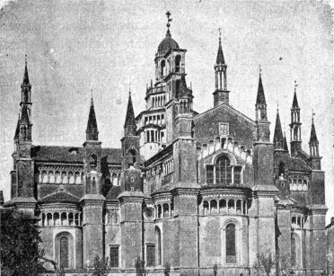
FIG. 152.—EXTERIOR OF THE CERTOSA, PAVIA.
FIG. 153.—PLAN OF CERTOSA AT PAVIA.
PLANS. The wide diversity of local styles in Italian architecture appears in the plans as strikingly as in the details 263 In general one notes a love of spaciousness which expresses itself in a sometimes disproportionate breadth, and in the wide spacing of the piers. The polygonal chevet with its radial chapels is but rarely seen; S. Lorenzo at Naples, Sta. Maria dei Servi and S. Francesco at Bologna are among the most important examples. More frequently the chapels form a range along the east side of the transepts, especially in the Franciscan churches, which otherwise retain many basilican features. A comparison of the plans of S. Andrea at Vercelli, the Duomo at Florence, the cathedrals of Sienna and Milan, S. Petronio at Bologna and the Certosa at Pavia (Fig. 153), sufficiently illustrates the variety of Italian Gothic plan-types.
ORNAMENT. Applied decoration plays a large part in all Italian Gothic designs. Inlaid and mosaic patterns and panelled veneering in colored marble are essential features of the exterior decoration of most Italian churches. Florence offers a fine example of this treatment in the Duomo, and in its accompanying Campanile or bell-tower, designed by Giotto (1335), and completed by Gaddi and Talenti. This beautiful tower is an epitome of Italian Gothic art. Its inlays, mosaics, and veneering are treated with consummate elegance, and combined with incrusted reliefs of great beauty. The tracery of this monument and of the side windows of the adjoining cathedral is lighter and more graceful than is common in Italy. Its beauty consists, however, less in movement of line than in richness and elegance of carved and inlaid ornament. In 264 the Or San Michele—a combined chapel and granary in Florence dating from 1330—the tracery is far less light and open. In general, except in churches like the Cathedral of Milan, built under German influences, the tracery in secular monuments is more successful than in ecclesiastical structures. Venice developed the designing of tracery to greater perfection in her palaces than any other Italian city (see below).
FIG. 154.—UPPER PART OF CAMPANILE, FLORENCE.
MINOR WORKS. Italian Gothic art found freer expression in semi-decorative works, like tombs, altars and votive chapels, than in more monumental structures. The fourteenth century was particularly rich in canopy tombs, mostly in churches, though some were erected in the open air, like the celebrated Tombs of the Scaligers in Verona (1329–1380). Many of those in churches in and near Rome, and others in south Italy, are especially rich in inlay of opus Alexandrinum upon their twisted columns and panelled sarcophagi. The family of the Cosmati acquired great fame for work of this kind during the thirteenth century.
The little marble chapel of Sta. Maria della Spina, on the Arno, at Pisa, is an instance of the successful decorative use of Gothic forms in minor buildings.
TOWERS. The Italians always preferred the square tower to the spire, and in most cases treated it as an independent campanile. Following Early Christian and Romanesque traditions, these square towers were usually built with plain sides unbroken by buttresses, and terminated in a flat roof or a low and inconspicuous cone or pyramid. The Campanile at Florence already mentioned is by far the most beautiful of these designs (Fig. 154). The campaniles of Sienna, Lucca, and Pistoia are built in alternate white and black courses, like the adjoining cathedrals. Verona and Mantua have towers with octagonal lanterns. In general, these Gothic towers differ from the earlier Romanesque models only in the forms of their openings. Though dignified in 265 their simplicity and size, and usually well proportioned, they lack the beauty and interest of the French, English, and German steeples and towers.
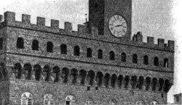
FIG. 155.—UPPER PART OF
PALAZZO VECCHIO, FLORENCE.
SECULAR MONUMENTS. In their public halls, open loggias, and domestic architecture the Italians were able to develop the application of Gothic forms with greater freedom than in their church-building, because unfettered by traditional methods of design. The early and vigorous growth of municipal and popular institutions led, as in the Netherlands, to the building of two classes of public halls—the town hall proper or Podestà, and the council hall, variously called Palazzo Communale, Pubblico, or del Consiglio. The town halls, as the seat of authority, usually have a severe and fortress-like character; the Palazzo Vecchio at Florence is the most important example (1298, by Arnolfo di Cambio; Fig. 155). It is especially remarkable for its tower, which, rising 308 feet in the air, overhangs the street nearly 6 feet, its front wall resting on the face of the powerfully corbelled cornice of the palace. The court and most of the interior were remodelled in the sixteenth century. At Sienna is a somewhat 266 similar structure in brick, the Palazzo Pubblico. At Pistoia the Podestà and the Communal Palace stand opposite each other; in both of these the courtyards still retain their original aspect. At Perugia, Bologna, and Viterbo are others of some importance; while in Lombardy, Bergamo, Como, Cremona, Piacenza and other towns possess smaller halls with open arcades below, of a more elegant and pleasing aspect. More successful still are the open loggias or tribunes erected for the gatherings of public bodies. The Loggia dei Lanzi at Florence (1376, by Benci di Cione and Simone di Talenti) is the largest and most famous of these open vaulted halls, of which several exist in Florence and Sienna. Gothic only in their minor details, they are Romanesque or semi-classic in their broad round arches and strong horizontal lines and cornices (Fig. 156).
PALACES AND HOUSES: VENICE. The northern cities, especially Pisa, Florence, Sienna, Bologna, and Venice, are rich in mediæval public and private palaces and dwellings in brick or marble, in which pointed windows and open arcades are used with excellent effect. In Bologna and Sienna brick is used, in conjunction with details executed in moulded terra-cotta, in a highly artistic and effective way. Viterbo, nearer Rome, also possesses many interesting 267 houses with street arcades and open stairways or stoops leading to the main entrance.
FIG. 156.—LOGGIA DEI LANZI, FLORENCE.
The security and prosperity of Venice in the Middle Ages, and the ever present influence of the sun-loving East, made the massive and fortress-like architecture of the inland cities unnecessary. Abundant openings, large windows full of tracery of great lightness and elegance, projecting balconies and the freest use of marble veneering and inlay—a survival of Byzantine traditions of the 12th century (see p. 133)—give to the Venetian houses and palaces an air of gayety and elegance found nowhere else. While there are few Gothic churches of importance in Venice, the number of mediæval houses and palaces is very large. Chief among these is the Doge’s Palace (Fig. 157), adjoining the church of St. Mark. The two-storied arcades of the west and south fronts date from 1354, and originally stood out from the main edifice, which was 268 widened in the next century, when the present somewhat heavy walls, laid up in red, white and black marble in a species of quarry-pattern, were built over the arcades. These arcades are beautiful designs, combining massive strength and grace in a manner quite foreign to Western Gothic ideas. Lighter and more ornate is the Ca d’Oro, on the Grand Canal; while the Foscari, Contarini-Fasan, Cavalli, and Pisani palaces, among many others, are admirable examples of the style. In most of these a traceried loggia occupies the central part, flanked by walls incrusted with marble and pierced by Gothic windows with carved mouldings, borders, and balconies. The Venetian Gothic owes its success largely to the absence of structural difficulties to interfere with the purely decorative development of Gothic details.
FIG. 157.—WEST FRONT VIEW OF DOGE’S PALACE, VENICE.
MONUMENTS. 13th Century: Cistercian abbeys Fossanova and Casamari, cir. 1208; S. Andrea, Vercelli, 1209; S. Francesco, Assisi, 1228–53; Church at Asti, 1229; Sienna C., 1243–59 (cupola 1259–64; façade 1284); S. M. Gloriosa dei Frari, Venice, 1250–80 (finished 1388); Sta. Chiara, Assisi, 1250; Sta. Trinità, Florence, 1250; S. Antonio, Padua, begun 1256; SS. Giovanni e Paolo, Venice, 1260 (?)-1400; Sta. Anastasia, Verona, 1261; Naples C., 1272–1314 (façade 1299; portal 1407; much altered later); S. Lorenzo, Naples, 1275; Campo Santo, Pisa, 1278–83; 269 Arezzo C., 1278; S. M. Novella, Florence, 1278; S. Eustorgio, Milan, 1278; S. M. sopra Minerva, Rome, 1280; Orvieto C., 1290 (façade 1310; roof 1330); Sta. Croce, Florence, 1294 (façade 1863); S. M. del Fiore, or C., Florence, 1294–1310 (enlarged 1357; E. end 1366; dome 1420–64; façade 1887); S. Francesco, Bologna.—14th century: Genoa C., early 14th century; S. Francesco, Sienna, 1310; San Domenico, Sienna, about same date; S. Giovanni in Fonte, Sienna, 1317; S. M. della Spina, Pisa, 1323; Campanile, Florence, 1335; Or San Michele, Florence, 1337; Milan C., 1386 (cupola 16th century; façade 16th-19th century; new façade building 1895); S. Petronio, Bologna, 1390; Certosa, Pavia, 1396 (choir, transepts, cupola, cloisters, 15th and 16th centuries); Como C., 1396 (choir and transepts 1513); Lucca C. (S. Martino), Romanesque building remodelled late in 14th century; Verona C.; S. Fermo, Maggiore; S. Francesco, Pisa; S. Lorenzo, Vicenza.—15th century: Perugia C.; S. M. delle Grazie, Milan, 1470 (cupola and exterior E. part later).
Secular Buildings: Pal. Pubblico, Cremona, 1245; Pal. Podestà (Bargello), Florence, 1255 (enlarged 1333–45); Pal. Pubblico, Sienna, 1289–1305 (many later alterations); Pal. Giureconsulti, Cremona, 1292; Broletto, Monza, 1293; Loggia dei Mercanti, Bologna, 1294; Pal. Vecchio, Florence, 1298; Broletto, Como; Pal. Ducale (Doge’s Palace), Venice, 1310–40 (great windows 1404; extended 1423–38; courtyard 15th and 16th centuries); Loggia dei Lanzi, Florence, 1335; Loggia del Bigallo, 1337; Broletto, Bergamo, 14th century; Loggia dei Nobili, Sienna, 1407; Pal. Pubblico, Udine, 1457; Loggia dei Mercanti, Ancona; Pal. del Governo, Bologna; Pal. Pepoli, Bologna; Palaces Conte Bardi, Davanzati, Capponi, all at Florence; at Sienna, Pal. Tolomei, 1205; Pal. Saracini, Pal. Buonsignori; at Venice, Pal. Contarini-Fasan, Cavalli, Foscari, Pisani, and many others; others in Padua and Vicenza.